___________________
一种非传统的笔记制作方法如何帮助你捕捉想法、自由思考和持续写作
Zettelkasten入门手册
作者：Bob Doto
New Old Traditions出版
感谢所有直言不讳的测试读者；感谢我的校对员Thad，让一切回归现实；感谢Matt在深夜电话中试图理解”所有笔记都去了哪里”；感谢我了不起的未婚妻，她在我们无数次乡村长途驾驶中与我一起完善了这本书的许多方面。
版权所有 © 2024 Robert Doto
保留所有权利。未经许可，不得以任何印刷或电子形式复制、扫描或分发本书超过二百五十字的部分。引用时请注明作者和书名。
第一版：2024年6月
美国印刷
ISBN: 979-8-218-45014-4
1.1 让想法离开你的大脑
1.2 什么是Fleeting Notes？
1.3 如何记录Fleeting Notes
1.4 在收件箱中暂存你的Fleeting Notes
1.5 利用”休眠”文件夹
1.6 使用日记来捕捉Fleeting Notes
1.7 Fleeting Notes与Main Notes的区别
1.8 简单提醒如何成为高价值的Main Notes
1.9 并非所有Fleeting Notes都能升华
1.10 为什么要记笔记？
1.11 欢迎踏上这条道路
2.1 什么是Reference Note？
2.2 Reference Notes与Fleeting Notes的区别
2.3 如何记录Reference Notes
2.4 使用个人日记或日志作为来源
2.5 阅读一本书（或接触任何”值得记录的”内容）时要考虑的六件事
2.6 边注
2.7 我在阅读时捕捉信息的五种方法
2.8 并非所有捕捉都是黄金
3.1 Main Note里有什么？
3.2 为什么我的笔记里有这么多东西？
3.3 如何创建Main Notes
3.4 问题和事实
3.5 “鉴于……”与”尽管……”
3.6 与其他Main Notes相矛盾的Main Notes
3.7 每个Main Note都不必代表你当前的想法
4.1 一切都关乎关系
4.2 如何连接想法
4.3 初学者如何建立连接
4.4 为你的连接提供上下文
4.5 原子性创造可能性
4.6 链接允许疯狂的连接
4.7 拥抱想法的无政府状态
5.1 导入笔记
5.2 随着你的Zettelkasten成长
5.3 我应该把那个笔记放在别的地方吗？
5.4 如果字母数字位置已被占用怎么办？
5.5 添加章节标题
5.6 Folgezettel不是树状结构
5.7 使用字母数字ID的三个原因
6.1 分布式网络和根茎
6.2 创建高层次视图来参与根茎
6.3 如何创建Hub Note
6.4 如何创建Structure Note
6.5 如何创建关键词索引
6.6 为更好用户体验而设计的用户界面
7.1 让你的Zettelkasten告诉你要写什么
7.2 隐藏在卡片盒中的文章
7.3 不要让你的Zettelkasten替你写作
7.4 将”坏习惯”转化为”好感觉”
7.5 编辑：剑之道
8.1 使用Main Notes创建短内容
8.2 如何使用Zettelkasten写博客文章
8.3 使用Main Notes自下而上写文章的八个步骤
8.4 从丰富开始写书
8.5 大纲是活的（和变化的）文档
8.6 用你面前的材料工作
9.1 保持日记
9.2 维护创意日志
9.3 日记和创意日志如何协同工作
9.4 以任务为重点的写作项目管理
9.5 没有单一的系统
献给我的学生们。
我们必须提防某种收集狂热，有时会控制那些记笔记的人……这是一种可悲的做法。
—A.G. Sertillanges, O.P., 《智识生活》
我最初的记忆是关于写作的。
五岁时，我写了一个四页的恐怖故事，在每一页上都把”ghost”拼写成”gohst”。十岁时，我写了一个男孩在垃圾桶里发现一把能控制天气的电吉他的故事。（第一部分是真的）。十五岁时，我制作了《Always Mindful》的一期半，这是一本受佛教启发的朋克摇滚同人志(fanzine)，包含乐队采访、演出评论和糟糕的精神诗歌。高中时，我写短篇小说。大学时，写剧本。研究生阶段，写诗歌和行为艺术。
不知不觉就到了2005年。如果你能从毫无防备的邻居那里偷到，纽约市的互联网是免费的。这导致了我数十年的博客沉迷，发布了六百多篇关于名人瑜伽文化、异端灵性和从商业化中拯救节日的文章。我成为了一份神秘主义季刊的执行编辑，编辑作者的作品，撰写书籍和工作坊评论，设计每一期，而且，在我雇主不知情的情况下，当我本应在办公室时却在报道独立电影节。在随后的岁月里，我出版了更多同人志、更多博客、几十篇文章和散文，以及一些书籍。但是，我从未称自己为作家。
二十五年来，我与写作的关系可谓爱恨交加。我的方法笨拙，总是在重复发明轮子。我的作品虽然多产，但感觉脆弱，是”意外之喜”的结果。我的兴趣似乎互不相关，彼此毫无联系。我不是一个作家。我只是一个碰巧会写作的人，完全不知道自己是如何做到的，也不知道将来还能否再次做到。
直到我找到了一套写作系统，我才开始拥有自己数十年来一直在做的事情。我的兴趣开始以迷人的方式重叠。“我是作家”不再是含糊不清的音节串，而成了我对”你是做什么的？“这个问题的回答。这是我在聚会上介绍自己的方式。这是我告诉久别重逢的老朋友我现在在做什么。
本书中概述的系统让我相信，写作不需要是个谜。它不需要让人感到陌生、令人生畏，或是与灵感意外邂逅的副产品。它可以促进灵感。但是，要做到这一点——要灌输信心并回答人们关于如何写作和写什么的许多问题——它必须处理的不仅仅是页面上发生的事情。它必须包括写作开始之前发生的事情。它必须融入捕获想法并将其转化为文本的方法，以及文本如何到达页面的过程。而且，它必须一次又一次地做到这一点。
为此，本书将写作视为一个整体过程，整合了通常被认为是附属的、外部的或初步的方面。在书中，你将找到与拥有和捕获思想相关的实践（第1章和第2章）；将思想精炼为可以重新利用的清晰想法（第3章）；跨主题连接想法（第4章和第5章）；发展这些连接并使它们对你可用（第6章）；以及将以上所有内容转化为面向读者的写作——可以重新整合回系统的写作（第7、8、9章）。
系统的核心是zettelkasten——一个对象和一种实践——一个东西和一种做事的方式。这个术语来自德语，通常翻译为”slip box”或”note box”，较少翻译为”card catalog”，这些术语你可能都很熟悉。然而，你可能不熟悉德国社会学家尼克拉斯·卢曼(Niklas Luhmann)，他凭借其发表数量惊人的文章和书籍的能力（据统计，大约有五百篇出版物），[1]揭示了他独特的记录、制作、连接和利用想法的方法。
尽管有如此大的产出，卢曼很少写关于他的zettelkasten的内容。虽然从访谈和他的文章《与卡片盒交流》中可以收集到的零散信息很有价值且很能说明问题，但卢曼实践和推理的第一手资料很少。因此，虽然关于卢曼为什么这样做似乎有很多可以争论的地方，但有一些理解已被证明是合理的。
Zettelkasten是一个对象，是一个由至少一个、有时多个隔间组成的容器，每个隔间被分配不同的笔记类型。[2]实体zettelkästen是盒子，通常又长又窄，大约是索引卡的宽度（想想：木制卡片目录或窄鞋盒），卡片一张接一张地堆叠，按字母数字ID组织。这些有时被称为”模拟”zettelkästen，尽管在本书中我使用”纸质”这个术语。
另一种越来越常见的zettelkästen形式，是建立在允许链接文件的数字笔记软件或文本编辑平台上的。Obsidian、Notion、Roam、The Archive和Zettlr只是过去五到十年中出现的几个平台。
除了是一个对象外，zettelkasten还是一种方法论——一种以笔记形式捕获想法、在它们之间建立关系并利用两者进行知识工作的方式。公式相对简单：
本书根据上述五个步骤构建，分布在九个章节中。
卢曼并没有发明zettelkasten。相反，他开发了一种独特的使用方法。卢曼式zettelkasten的结构不是预先确定的。它从笔记制作者在笔记中记录的想法之间建立的关系中产生。随着关系的发展，zettelkasten的区域会膨胀。共同的主题和主题出现，并记录在额外的笔记中或在系统中以其他方式表示。使用卢曼式zettelkasten，我们既不从预定义的类别集合开始（笔记应该被分配到这些类别中），也不将我们的笔记存储在主题文件夹中。
尼克拉斯·卢曼的卡片盒中只包含少数几张关于zettelkasten的笔记——在总共九万多张卡片中大约只有十八张。这些笔记简短且往往简洁，读起来像禅宗公案(koans)，有时令人困惑的语法因其深度而得救。在其中一张笔记中，卢曼传达了一个不祥的信息，让人glimpse glimpse了那些采用这种实践的人可能面临的情况：“Zettelkasten不断增长，我已经尽我所能地试图从中获益。”[3]
如果你为你的zettelkasten提供想法，它就会成长。像根茎一样，它将成为一种受控的混沌形式，一种”混乱与秩序的结合，在临时访问中实现的不可预测组合。“[4] 这是件好事。
Luhmann组织信息和想法的方法违背了我们被教导的许多原则。因此，可能需要数月甚至数年才能充分理解其好处。最好将使用zettelkasten的工作视为一种”实践”，需要投入时间、精力和定期关注的事情。
本书中提出的系统旨在帮助你熟练地导航和利用Luhmann的方法，将zettelkasten用于写作服务。每一章都会提供信息、加强并被其他章节所启发。简化而言，该系统可以呈现为一系列相互关联的反馈循环（图1）。[5]
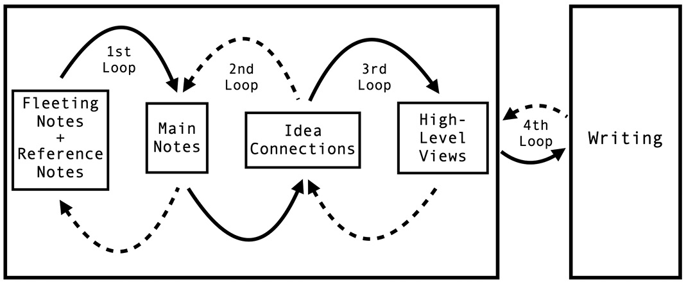{._idgenobjectattribute role=“presentation”}
图1. 系统的每个方面都相互加强和被加强。
第一个循环显示了临时笔记和参考笔记如何促进主要笔记的创建。这个过程加强了我们在世界中发现有趣的事物，以及我们最终在未来的临时笔记和参考笔记中捕获的内容。
第二个循环显示，对我们想法之间联系的更好理解会导致更多地参与我们的主要笔记，这加强了我们在世界中发现有趣的事物，以及我们最终在未来的临时笔记和参考笔记中捕获的内容。
第三个循环显示了对高级视图的需求，这使我们能够理解并找回我们一直在建立的联系。思想之间的联系导致新想法，这加强了我们在世界中发现有趣的事物，以及我们决定从中捕获的内容。
第四个循环提醒我们，虽然写作从系统中涌现，但它也可以被重新整合回系统中。我们创造的写作以及创造时感受到的成就感，加强了我们在世界中发现有趣的事物，影响着我们在zettelkasten中捕获、完善、连接和搜索的想法。
你手中的这本书在组织方式和参与方式上都是系统性的。第一部分详细审视了使用zettelkasten时处理的最常见对象：笔记。笔记为我们提供了在第二部分中可以处理的具体事物，在那里我们探索如何连接想法，以及构建和定位长篇思路。第三部分将笔记、想法和连接导向写作。
每一章的内部也经过了有意的组织，理论关注点（通常）在实际应用之前。许多想要使用zettelkasten的准作家关心的是维护它的”是什么”和”如何做”。我想预先回答这些问题，为读者提供建立知识的具体基础。当然，实用性如果独立存在就缺乏深度。在这本书中，每个”如何做”之后都有”为什么这样”，接着是一个简短的现在开始做、记住和注意的事项清单。如果你主要感兴趣的是如何建立zettelkasten，请关注每章的前半部分和结尾部分。如果你想明智地应用这些实践，或更好地阐述为什么你选择以不同方式做某些事情，请完整阅读每一章。
我还提供了非线性参与文本的方式。虽然我假设大多数读者会从前往后阅读，但我预期许多人会想要跳跃阅读。在这本书中，你会注意到行内的数字引用（即6.1:1），它指向与前面段落相关或以其他方式启发的章节。第一个数字和后面的小数点指的是章节。冒号后的数字指的是章节中的段落。如果没有冒号，请参考整个章节。这些引用在服务实际功能的同时，反映了系统本身，其中每个章节都相互加强和被加强。
关于zettelkasten最常见的困惑之一与用于描述与该实践相关的各种笔记和概念的冲突术语有关。[6] 我尽力坚持使用最常用的术语，但在某些情况下打破了惯例。经过二十年的教学，我开始相信当教师愿意使用熟悉的语言，同时引入将学生带入新理解领域的替代术语时，学生学得最好。
尽管Niklas Luhmann没有提及这种类型的笔记，我选择包含”临时笔记”这个术语，因为它被广泛使用并且对理解其他类型的笔记非常有价值。它也涉及许多作家已经在做的事情：当想法出现时记下它们。
我使用”参考笔记”这个术语来代替更常见的”文献笔记”，以及不太常见的”来源笔记”和”书目笔记”。与这些术语不同，“参考笔记”这个术语突出了笔记是什么（参考）、其内容（参考资料）以及内容如何使用（被参考）。与”文献笔记”和”书目笔记”不同，这个术语为非文学来源（即视频、讲座、录音等）留下了空间。然而，如果你偏爱使用其他术语之一，这样做不会影响你如何利用本书中提供的信息。
为了消除围绕”永久笔记”术语的困惑，我做出了一个执行决定，用”主要笔记”来替代它。
在整本书中，我交替使用”卡片盒”和”zettelkasten”这两个术语，因为我认为纸质和数字zettelkästen之间没有关键区别。同样，我交替使用”隔间”和”文件夹”这两个术语。它们可以相互替代。
“卢曼式zettelkasten”
我会定期使用”卢曼式zettelkasten”这个术语来强调卢曼方法的特定方面，这些方面使其在更传统的卡片盒使用方式中独树一帜。
“记笔记”和”做笔记”
在本书中，“记笔记”指的是捕获信息（如人们在临时笔记或参考笔记中所做的），而”做笔记”指的是提炼和语境化已捕获的信息（如人们在主笔记中所做的）。
“思路”
术语”思路”用来代替”线程”来描述在zettelkasten内连接在一起的一系列想法。
“笔记”和”想法”
尽可能地，当讨论笔记内容时我称之为”想法”，当讨论承载想法的对象时我称之为”笔记”。
在每章结尾，我都会提供一个要做的事情、要记住的事情和要注意的事情的清单。为了开始，这里有两个你现在就可以采取的行动：
找到记录思想的工具。一张整齐折叠的纸；一个小巧的、袖珍大小的笔记本；或者手机上的记笔记应用都可以。重要的是要有一些便携的东西，专门用来捕获产生的想法。
如果你倾向于建立数字zettelkasten，下载一个具有链接功能的文本编辑器，并创建一个名为”Zettelkasten”的文件夹。否则，购买一叠你使用舒适的大小的索引卡，以及一个可以容纳它们的适当大小的实体卡片盒。
记笔记似乎是一个几乎不值得争论的话题。如果你认为可能会忘记什么，就把它写下来。如果你在阅读时遇到有趣的想法，在页边记下来。对许多人来说，这些做法是理所当然的。但是，在网络的各个角落隐藏着一些空间，在那里与记笔记相关的概念、想法和实践会被宗教狂热者般的激情定期争论。
“个人知识管理”，或者通常称为”PKM”，为不同职业的人们提供了一个保护伞，让他们不仅围绕笔记和记笔记，而且围绕管理信息的每个细分领域和细微差别进行讨论。在这里，扶手椅学者与终身教授就保持卡片盒的利弊进行辩论。程序员向小说家建议如何最好地在电脑上组织草稿。创始人与无政府朋克讨论项目管理软件，后者与基督教资本家分享文件组织技巧。每个人都在PKM的土地上占有一席之地，团结在一个共同信念中：“大脑是用来产生想法的，不是用来储存想法的。”摘自大卫·艾伦关于生产力的开创性文本《把事情做完》，这个想法超越所有其他想法，将律师与勒德分子联系在一起，帮助数千名努力将想法付诸行动的人。
前提既简单又深刻。虽然人类擅长产生见解，但我们保留它们的能力是有限的。我们健忘。我们失去思路。伟大的想法消失得和它们出现一样快。这是一个不仅早于文字的古老故事，而且可能是文字的催化剂。大约五千年前，有人厌倦了遗忘，在一块现在古老的美索不达米亚粘土板上刻了两个图像——一个碗和一个人头。我们第一次尝试外化思维？追踪食物配给。
几乎没有什么改变。我们仍然使用文字来记录事物，但随着越来越少的人有理由编目容器及其内容物，我们发现自己在追踪短暂但同样重要的物品。想法、思想和观点。热点话题和个人见解。当我们与以不断增加的速度向我们投掷的信息轰炸互动时，外化我们的思维以理解我们遇到的事物的必要性不仅成为了一种便利，而且成为了一种必需品。即使是尼克拉斯·卢曼，他无需处理”数字失忆症”，也因为”记忆力差”而开始在他的zettelkasten中捕获想法。
临时笔记是记住事物的一种方式。简记、任务、列表、宏伟计划、临时疑问。输入到手机应用中的提醒。贴在前门上的便利贴。它们是你一生中一直在做的相同笔记，远在你对zettelkasten产生任何兴趣之前。但是，在维护卡片盒的背景下，这些通用笔记服务于独特的目的。
临时笔记构成了你在zettelkasten内创建的大部分内容的基础，尽管它们本身不会通过天鹅绒绳索。临时笔记生活在潜力状态中，等待被转化为更有用的”主笔记”，这些笔记将构成你的zettelkasten的主体。
术语”fleeting notes”（闪现笔记）来自 Sönke Ahrens，他将其描述为”信息的提醒…用于在忙于做其他事情时快速捕捉想法。“[10] Fleeting notes 是”临时的”，因为它们经常最终被丢弃。可以说，将这些”仅仅是你脑海中的提醒”称为这样可能高估了它们的价值。毕竟，fleeting notes 只是…笔记。但是，这个术语具有重要功能。“Fleeting notes”帮助我们区分零散的、转瞬即逝的想法和即将在我们的卡片盒中形成网络的观点。我们使用”fleeting notes”这个术语不是因为它们具有特别高的价值，而是因为我们对它们将要变成的笔记所赋予的价值。
## 1.3 如何记录 Fleeting Notes
很可能你已经记录了数百甚至数千条 fleeting notes：你有想法。你把它们写下来。对大多数人来说，这就是整个过程。只是，对于zettelkasten，你需要做出一个非常重要的认知转变：要知道你刚刚记录的笔记尚未实现其潜力。这就是方法：
## 1.4 在收件箱中暂存你的 Fleeting Notes
Fleeting note 变成的”其他形式”就是主笔记。但是，在这种转换发生之前，你需要将 fleeting notes 暂存在收件箱中，直到它们可以被处理。设置收件箱就像在桌子上放一个铁丝篮一样简单，或者如果你使用数字平台，在设备上创建一个名为”收件箱”的文件夹。无论你采用什么方法，收件箱都会为你提供一个存储随时记录笔记的地方，以便稍后回来处理它们。但是，收件箱不仅仅是等待分类笔记的候诊室。
收件箱是一个强有力的指标，从外部强化了 zettelkasten 的特殊性质。收件箱提醒我们，存储在 zettelkasten 中的笔记是特殊的，包含了连接、上下文，以及关于你的 zettelkasten 中类似想法存储位置的指示。如果你的 zettelkasten 充满了你的每一个随机想法，无论你以什么未经编辑的状态捕捉它，你的 zettelkasten 很快就会变成一个不愉快的访问场所。与卡片盒的互动应该让人感到兴奋，而不是产生焦虑。
通过给你的想法一个着陆的地方，收件箱有助于缓解最初来自非分层工作的一些潜在焦虑[(5.6)]。稍后，当你处理收件箱时（即，将 fleeting notes 转换为主笔记），你只能将仍然有趣的内容带入你的想法网络。我建议至少每周处理一次收件箱的内容。
## 1.5 利用”休眠”文件夹
如果你捕捉了大量的 fleeting notes，不可避免地会有那些在你尝试处理收件箱时反复被跳过的笔记[(3.3:2)]。这些想法可能不会与已存储在你的 zettelkasten 中的其他想法产生共鸣；它们可能与你正在积极从事的任何写作作品无关；或者这个想法可能不像你第一次捕捉时那么有趣。任何看起来难以处理但仍然与你的思考相关的笔记都应该移动到”休眠”文件夹中。
与你的收件箱一样，你的休眠文件夹可以是物理隔间或数字文件夹。我建议每隔几个月检查一次休眠笔记。
## 1.6 使用日记来捕捉 Fleeting Notes
上述假设你会在单独的纸片上或在单独的数字文件中记录 fleeting notes。但是，许多人在日记中记录转瞬即逝的想法。有许多品牌化的”每日笔记”方法，如果你在持续捕捉想法方面有困难，你可能会调查一些更受欢迎的方法[(9.1:2)]。[11] 无论是投资于一套日记实践还是构建更加本土化的东西，将 fleeting notes 整合到你的 zettelkasten 中的方法都是相同的：区分什么值得保留，什么最好忽略。如果一个想法感觉特别”值得 zettel”，在旁边写上”ZK”。稍后在一天或一周内，扫描你的日记，看看这些捕捉中哪些你想作为主笔记导入到你的 zettelkasten 中，然后这样做。
## 1.7 Fleeting Notes 和主笔记之间的区别
如果在 fleeting notes 中捕捉的想法要与卡片盒中的其他想法连接，它们需要以主笔记的形式重写。为了更好地理解这两种笔记之间的区别，让我们简要看看两者（更深入了解主笔记，请参见第3章）。
图2是一个典型的 fleeting note，是你在一天中任何时候都会记录的那种。图3——fleeting note 变成的主笔记——是一个完全不同的存在。主笔记有一个标题，告诉你笔记中发现的想法。它有一个字母数字ID，便于索引和检索。它有指向已存储在 zettelkasten 中的其他想法的链接（这里用单括号显示），并给出了建立连接的理由。Fleeting note 没有这些属性。在主笔记中，你会找到构建内部捕捉想法所需的一切。Fleeting note 让你悬而未决。
## 1.8 简单提醒如何变成高价值主笔记
从临时笔记跃升为主笔记的过程可能看起来很困难。但是，我向你保证，这比看起来要容易。
在图2的案例中，我捕捉了一个快速、表面的想法，并引用了我可能在这个主题上找到信息的地方（一部以学者、活动家和作家肖莎娜·祖博夫为主角的YouTube短纪录片）。当我回到这个笔记时，我快速浏览了纪录片，找到了激发我想法的部分，发现这个想法不仅有趣，还与我已经存储在zettelkasten中的另外两个想法相关。我从影片中转录了一段简短的引文，用对我的思考有意义且相关的术语表达了它，并列出了这个想法可能涉及的另外两个，给出了我这样做的背景原因[(4.4)]。当一切完成时，整个过程只用了几分钟。对于多年的思维连接性来说，这是一个很小的代价。
在我捕捉图2中描述的一闪而过的想法时，我不知道它是否会有用或有趣。这就是临时笔记的美妙之处：这并不重要。
由于临时笔记可以由你在任何给定时间的任何想法组成，而且由于你的每一个想法都不会与你的兴趣和写作相关，所以并非所有临时笔记都会成为主笔记。事实上，根据你捕捉想法的狂热程度，你的大部分临时笔记可能最终要么进入废纸篓，要么被忽略。例如，图4不会成为主笔记。
然而，图5中的临时笔记可以转化为图6中的主笔记。
包含任务的临时笔记（图4）永远不会成为主笔记，因为任务不是想法。婚礼策划师的姓名、提醒倒垃圾的便条，或你家庭成员生日的清单也不是。卢曼式的zettelkasten用于存储和网络化想法。所以，除非你对婚礼策划师、做家务的好处，或生日是我们社会中最后的成人礼之一有想法，否则这些笔记应该留在slip box的神圣殿堂之外。其余的都可以转换为主笔记或转移到你的”休眠”文件夹中以供以后查阅（图7）。
做笔记允许你快速将想法从头脑中取出并写在纸上，迫使之前模糊的想法与将其转化为连贯想法所需的语言接触。对我们大多数人来说，这种形式的”外部支架”是绝对必要的，如果我们想要理解自己对某个主题的想法。
想象一下，写一段陈述你对当前最具争议性、最两极化话题看法的段落。这一段将是你的”宏大声明”。它将被发表。人们会阅读它。他们会有意见。当你想象这种写作时，你是否注意到自己在词汇选择上变得更加谨慎？这种谨慎如何影响你的思考？你写的内容是否正是你在写之前认为自己相信的？你是否发现自己更倾向于一个你认为自己不同意的观点？或者，同样重要的是，你是否发现自己更加相信你认为自己相信的东西？通过写作外化你的想法既会挑战又会强化你的信念。
在某种程度上，原因是显而易见的：问责制。将想法付诸文字时有很多利害关系。留在我们头脑中的词汇可以自由存在，独立于其他人如何使用它们。一旦我们试图将想法写在纸上，之前在我们神经突触中自信昂首阔步的词汇就变得羞怯和轻声细语。“爱”、“种族”、“性别”、“社会”这些词汇的整个悠久历史，这些被使用过一百万次的词汇，涌来挑战我们认为自己知道的东西。大词感觉很小。小词感觉像手榴弹。突然间，我们的词汇选择变得重要起来。但是，对反驳的恐惧并不是写作迫使我们澄清信念的唯一原因。写作就是学习。
努力将想法付诸文字迫使我们与表达该想法的语言搏斗。写作，即使是以简短笔记的形式，也不是记录我们已经相信的东西的手段，而是帮助我们理解我们认为自己知道的东西。
我在那罗巴大学(Naropa University)攻读硕士学位期间深刻地意识到这一事实，作为一名写作导师，我亲眼看到学生们如何努力”写出他们的想法”。在几乎每一个案例中，学生们都表达了在头脑中有一个想法，但发现很难将其付诸文字。“为什么我不能只是告诉我的教授我的想法？为什么我必须把它写下来？”虽然在我们参加的另类”嬉皮士”大学里，违背常规是家常便饭，但问题更多地在于找出学生对这个主题的真实想法，而不是课堂礼仪。矛盾的是，需要通过写作来知道他们想要写什么。
笔记即写作，写作是通向认知的道路。记录转瞬即逝的笔记是了解自己所思所信的第一步。这是本书所述更大系统的基本组成部分，因为它标志着外化过程的开始——你以为自己所想的内容开始与构成你所生活世界的观念和信仰产生碰撞。
我们从世界中获取的大部分内容都通过不同形式的媒体传达：书籍、文章、播客、社交媒体帖子、杂志、视频、电影、采访。这些往往是我们思想和观念的来源。参考笔记让我们能够对每一种媒体记笔记而不打断我们的流程，为我们完成后提供一个回顾的地方。
参考笔记是一个包含简短引用或”参考”的单一长笔记，记录你在阅读书籍、收听播客、观看视频或进行对话时引起注意的内容。这些长笔记存储在你的zettelkasten中，有时在单独的部分或文件夹中。典型的参考笔记如图8所示。
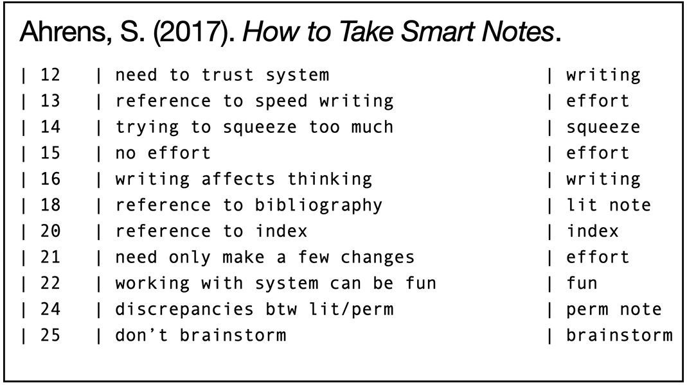
图8. 典型的参考笔记。
左侧是页码。旁边是关于该页面可以找到什么内容的简短陈述。最右侧是描述所讨论主题的词语。笔记中包含的所有内容都允许你在当天晚些时候（几周、几个月或一年后）回到它，重新审视引起你注意的内容，如果你愿意，可以基于其内容制作主笔记。参考笔记正是通过这种方式在源材料和你zettelkasten的主要部分之间起到桥梁作用（图9）。
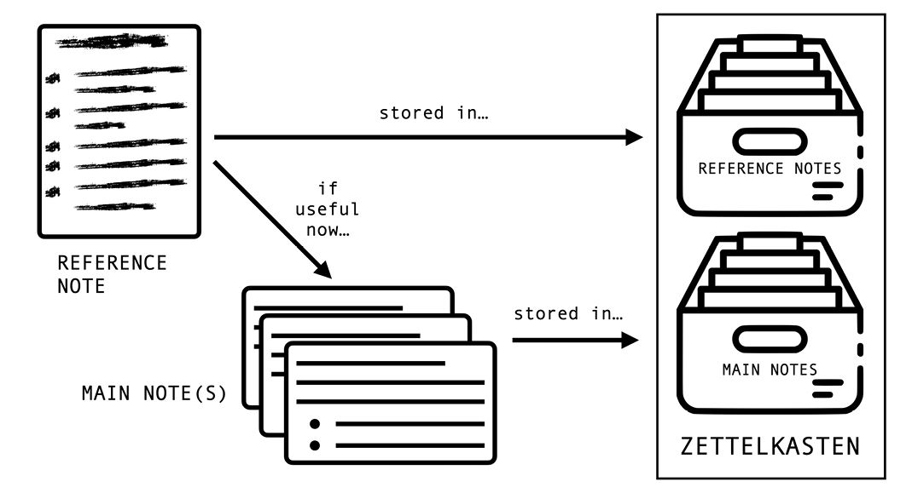
图9. 参考笔记的内容变成单独的主笔记。参考笔记本身存储在zettelkasten内的”参考笔记”部分中。
作为中介，参考笔记有时会与转瞬即逝的笔记混淆。但是，有几个方面使它们有所区别。转瞬即逝的笔记是在你想到或想要记住某些事情时随时记录的。虽然这些捕获有时可能指向你之前接触过的媒体（图2），但因为它们不是在任何正式或有意的环境中记录的，且几乎总是你自己的想法，所以不被认为是参考笔记。简单来说，它们是快速捕获的想法，只有在转化为主笔记后才会进入slip box。
相比之下，参考笔记是在你积极接触媒体时记录的，捕获你遇到的想法和段落。与转瞬即逝的笔记不同，参考笔记存储在你的slip box中，用作你多年来消费媒体的参考或个人索引。
记录参考笔记的做法来自尼克拉斯·卢曼(Niklas Luhmann)，他避免在书中写字，而更喜欢在纸片上写字。每当有段落涉及他正在研究的内容，或让他想起之前记录在zettelkasten中的想法时，卢曼会写下可以找到该段落的页码，然后简要描述所说的内容或它与他思考的关系。在纸片背面，卢曼记录书目信息。
卢曼大量引用引起他兴趣的段落，从图10中的页码可以看出，当空间不够时，他会在额外的纸片上继续捕获。卢曼在参考笔记中不加修饰，似乎也没有给自己设定多少捕获算太多的规则。为了继续阅读而不必停下来制作主笔记，卢曼只记下几个词，这些词后来会唤起他的记忆。这些不是详尽的摘要——只是足够的信息来让想法重新浮现在他脑海中。卢曼将参考笔记存储在他zettelkasten内的单独参考笔记部分中，这也是他所读内容的记录。
今天的引用笔记记录方式与Luhmann的做法相似，但会根据个人风格或使用的媒介有所变化。首先，你可以像Luhmann一样创建引用笔记，无需为你的摘录添加标签，如图11所示。
或者你可以添加标签来追踪在资料中遇到的主题。注意图12中多次提到的”feeding”和”psych”（psychology心理学）。
你还可以添加简短的笔记，说明为什么你摘录的想法是相关的，或者它如何与已经存储在你的zettelkasten中的其他想法相关联（图13）。
如果你使用数字设备阅读，可以摘录完整的引文（图14）。
当然，还有其他不那么”书本化”的信息来源可以摘录有趣的想法。播客、视频、电影和音乐录音都可以成为洞察的来源，整合到你的zettelkasten中。与这些来源相关的引用笔记处理方式与上述相同，用时间戳替代页码，或者在图15的情况下，用曲目号。
对话也可以成为灵感和信息的来源。但是，你需要在引用时发挥创意，因为非录制事件没有时间戳或页码（图16）。
当然，有无数种方式来构建和布局引用笔记。尝试不同的方法。选择最有效的方式。
在第一章中，我们将日记视为随机临时笔记的储存库（1.6）。然而，许多人以更正式的方式使用日记，使用单独的日记来记录他们对特定主题的见解（例如，编程日记或梦境日记）。随着时间的推移，这些日记本身就像书籍一样。那么，为什么不这样对待它们呢？
将日记转化为资料来源的最简单方法是添加唯一标识符。如果你使用数字日记，请在文件名和文件内的每一天都添加日期。我每年有一个单独的文件，其中有一个运行的天数列表，最近的一天在顶部。物理日记的处理方式类似。为每个笔记本添加日期或给它一个卷号，然后为内部的条目添加日期和/或页码。添加这些唯一标识符使得从日记中创建引用笔记成为可能（图17）。
从日记中制作引用笔记允许你在写下条目几个月甚至几年后回到它们，仍然能够了解讨论了什么和在哪里讨论了特定主题。这也为你在主要笔记中提供了可以引用的内容（图18）。
当你花时间使用zettelkasten时，你会开始被阅读中的想法和段落所吸引，这些想法和段落直接与已经存储在你的卡片盒中的其他想法对话。你会对想法产生亲和力（无论你是否同意它们），特别是因为它们可以与你之前摘录的内容相关联。Luhmann的阅读方法通常是”自我指涉的”，“着眼于他的文件中已经包含的笔记”（3.5）。但是，阅读以支持已经存储在zettelkasten中的内容只是一种方式。除了与之前摘录的段落对话的段落之外，尝试以下实验：
在写作《Sitting With Spirits》时，我阅读了Rollo May和Carl Jung，以了解每个人对daemons的看法。我阅读了Allan Kardec以获得他如何分类spirits的洞察。我重新阅读了我的研究生中医教科书，以刷新我对五神如何运作的记忆。当你有一个议程时，所有形式的媒体都可以被挖掘以获得灵感和信息。
我曾经有一位艺术史教授，在开学第一天对我们说：“我是立体主义专家，因为我讨厌立体主义。”我完全理解她的意思（尽管，说实话，我是现代主义运动的粉丝）。我发现当我不同意作者所说的某些观点时，我从未如此健谈过。所以，不要害怕捕捉那些让你感到不舒服的想法。那些让你感到不安的东西可能是极具激励性的。
读者反应理论认为，没有任何一个人，甚至包括作者本人，对文本的意义拥有垄断权。相反，意义是通过阅读行为创造的。而且，意义可以是多样的。
在她的开创性著作《读者、文本、诗歌》中，“交互式”阅读的领军理论家路易丝·M·罗森布拉特(Louise M. Rosenblatt)指出：
[对文本的]潜在反应范围……是无穷无尽的，因为它们不仅取决于文本的特征，更取决于个体读者的特殊性格。[23]
总是有理由去更多地了解作者的想法。但是，除非你正在写关于某个特定人物的论文，有时更好地理解你对作者讨论主题的看法会更有用。[24]捕捉那些激发你自己思考的段落，即使你并不完全理解作者的想法。
有时你会被某个想法吸引，但不知道为什么。如有疑问，在参考笔记中引用它。首先，你总是可以回到这个捕获的内容，看看它的相关性是否有所增加。但是，你也可以向朋友请教或阅读他人的观点。在你的笔记中记录这些，并引用你的来源。正如文学批评家斯坦利·菲什(Stanley Fish)所说，“[是]解释共同体……产生意义。”[25]依靠你信任的人获得洞察，洞察最终会到来。
使用卡片盒系统(zettelkasten)捕捉通过小说传达的想法，方式与处理任何其他作品相同。但是，小说也使以新颖方式接触想法成为可能。留意角色行为和特征、叙事弧线、场景和背景，所有这些都可以挖掘出洞察。甚至作者对语法的使用（或缺乏）和叙事技巧（如非线性和断裂），都可以被解读为对社会问题的评论。向文学学者简·汤普金斯(Jane Tompkins)学习：
我不是将……小说视为纯粹的娱乐，……我将它们视为在特定历史情境中进行某种文化工作，并因此而重视它们。我将它们的情节和角色视为为社会提供思考自身的手段……[26]
阅读小说是探索作者评论社会的多种不同方式的绝佳机会。
在他的著作《意图之北》中，史蒂夫·麦卡弗里(Steve McCaffery)指出”读者身份的问题只有在拒绝放弃偏见性阅读习惯时才会出现，“[27]朱莉安娜·斯帕尔(Juliana Spahr)在她的著作《每个人的自主权》中也呼应了这一观点：
疯狂阅读……批判现状，因为它破坏了学校化阅读的惯例，即其社会化。一个人的阅读方法……定义了一个人如何参与更大的社会机制。[28]
你如何阅读在一定程度上取决于你如何看待世界，反之亦然。如果你发现世界是一个疯狂的地方，而它确实如此，那么以同样的精神来对待你的文本。随意捕捉任何无论出于什么原因让你兴奋的东西。考虑诗人学者和批评家玛乔丽·珀洛夫(Marjorie Perloff)，她以其”社会历史知情评论”和”远距离阅读”而闻名，在她的书评和批评中包含”语境、历史和传记框架及背景填充。“[29]换句话说，让你自己的个人经历——你自己的知识和环境——来告知你正在阅读的文本。生活是动态的。书籍是生活的一部分。在阅读时出现的任何东西——外部参考、感受、过去和当前的事件、你当天早些时候的对话——任何让你洞察你对所遇到内容的想法的东西都是写作素材。
到目前为止，我们已经从外部纸条或数字文件的角度讨论了参考笔记。但是，直接在页面上做笔记怎么样？
卢曼的参考笔记，虽然记录在纸条上，本质上是页边注释，在页面上突出显示的地方，他用页码和几个关键词引用引起他注意的内容。通过在纸条上捕捉他的页边注释，卢曼能够将他的捕获存储在他的卡片盒系统中，从他的主要笔记链接回它们，并在他感到有必要时有一个稳定的地方返回。但是，没有规则说这不能通过在书中写字来实现。
要利用页边注释，你只需要根据你在页边捕获的内容创建一个参考笔记。毕竟，书仍然是书。只是现在它被你的评论增强了。在书中写字让你能够回到你的高亮内容，并稍后将最相关的内容提取到你的参考笔记中。过程很简单：
当然，你可以跳过第2步，直接从你评论的段落制作主要笔记。在这种情况下，书本身连同你的页边注释，成为参考笔记，然后在主要笔记中被引用。
在页边做笔记比在单独的纸条或笔记应用中记录引用更加自然流畅。页边距是动态空间，读者在此直接与作者文字的物质性进行互动。与文本的对话在执笔的瞬间发生，戳刺和推敲着文本。箭头、圆圈、思考、点、页码参考、双线、涂鸦，所有这些都有助于我们在阅读时创造意义。
标记书籍的方式与进行标记的人一样多样。多年来，我已经形成了一套宽松的标记系统，帮助我找到之前认为值得注意的内容。图19显示了我的罗森布拉特《读者、文本、诗歌》一书中的一页，带有典型的标记。
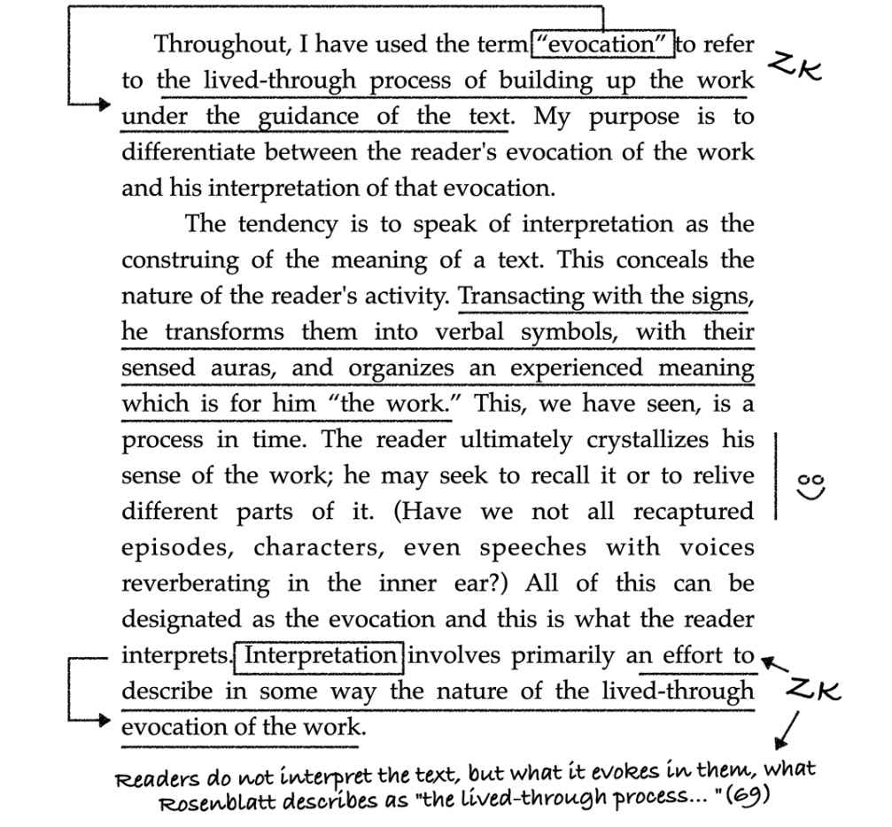
图19. 标记书籍的最佳方式是最适合你的方式。
尼克拉斯·卢曼的阅读-参考笔记工作流程是创建自己方法的绝佳标准。但这不是唯一的方式。多年来，我倾向于采用多种不同的阅读笔记方法，每种方法都取决于我所接触的材料类型、附近的工具、我所处的环境/设置、我的心情，和/或我可用的时间。将所有这些方法联系在一起的是流程末端的卡片盒。
在阅读从图书馆或朋友那里借来的书时，我通常采用卢曼制作单独参考笔记的技巧。这使我能够在归还书籍后保留我的笔记。
与卢曼不同，我不介意用墨水和荧光笔的色彩覆盖我的书籍。我今天标记书籍与十年前的区别在于，我现在会回到书籍，将仍然让我感兴趣的任何旁注转化为参考笔记或主笔记。
我早晨”精神阅读”会话中的思考和反思被记录在带有日期条目的实体日记中。我在任何我认为特别”值得做成卡片”的想法旁边放一个”ZK”，并提供关于这个想法如何与我的zettelkasten中已存储的其他想法相关或为其提供信息的上下文。在本周或本月的某个时候，我将我的想法直接转换为主笔记，或制作参考笔记，捕获我所有标记为”ZK”的想法。
我倾向于在平板电脑或手机上阅读文章，使用具有笔记功能的稍后阅读应用来捕获我的想法。完成后，我将这些想法捕获带入我的写作平台，通常作为主笔记。
当涉及到研究某个主题时，我认为没有任何形式的媒体是”禁区”。除了非虚构巨著，我还阅读小说、诗歌、杂志，听音乐，看电影。我接触任何我遇到的能够触及我兴趣的内容，使用上述任何方法来捕获想法并加以利用。
任何形式的参考笔记制作最重要的一点是，在某个时候，要回到笔记上。正是”回头查看”产生了所有的不同，理解你最初的涂鸦不是捕获的终点。它是开始。参考笔记是要作为参考来使用的。其内容要转化为主笔记。
尼克拉斯·卢曼的参考笔记作为他能够获取想法的储存库。但是，他并没有从每一个捕获中都制作主笔记。你也不应该感到有压力这样做。
像瞬时笔记一样，你在参考笔记中捕获的并非所有内容都需要转化为主笔记。可以随意从你的参考笔记中制作尽可能多或尽可能少的主笔记，记住你总是可以稍后回到它。
如果你使用基于纸张的zettelkasten，留出一个隔间来存储参考笔记。如果你使用数字平台，在你的”Zettelkasten”文件夹内创建一个标题为”参考笔记”的文件夹。
如果你倾向于阅读纸质书籍或正在使用基于纸张的zettelkasten，购买、剪切或折叠一叠能够轻松放入典型书籍的纸条，并将它们存放在你喜欢阅读的地方。我的偏好是使用空白贺卡，就是在文具店出售的那种。
如果你倾向于阅读数字书籍，你仍然可以执行上述步骤，但也可以选择使用许多”稍后阅读”应用中的一个来存储你的高亮和笔记。如果你使用这种方法，我建议将这些捕获带入单独的参考笔记文件中，因为存储在稍后阅读应用中的笔记可能会快速堆积并变得令人不快处理。
回头浏览本章节，以及引言和第1章。在参考笔记中引用任何吸引你注意的有趣段落或见解。（肯定必须有一些吧？！）完成后，将参考笔记归档到你的zettelkasten的”参考笔记”部分。
参考笔记是包含与你在阅读书籍（或接触其他形式媒体）时遇到的有趣段落相关引用的单一长笔记。
参考笔记存储在你的zettelkasten中。
除了闪念笔记外，参考笔记是你用来创建主笔记的资源之一。
你在参考笔记中捕获的引用可能只有一部分会转换为主笔记。
“参考笔记”、“文献笔记”、“bibliographic notes”和”源笔记”是同一种笔记的不同名称。
闪念笔记和参考笔记都是本书所介绍系统的基础，因为它们代表了外化思维的最初阶段，让你能够快速捕获想法和观点，以便稍后回顾。但是，为了让这些捕获的内容成为动态相关的洞察，并有助于你的写作，它们必须转化为其他形式。
主笔记就是你的临时捕获内容所转化的结果。它们存储在你的zettelkasten的主要部分，顾名思义，是主要的亮点。它们是你未来写作的基本构建块，也是你发展和挑战思维的主要组件。让我们通过了解这些创造力催化剂的内容来开始探索。
最基本的形式下，主笔记至少应该包含两个组成部分：
图20两者都有。
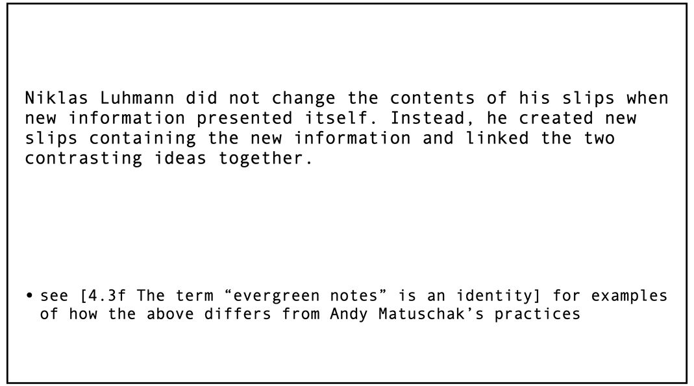
图20。至少，主笔记应该包含一个单一想法和一个指向存储在你的zettelkasten中另一个想法的链接。
这两个元素——一个单一想法和一个指向另一个想法的链接——非常重要，即使你的笔记只包含这些内容，你也能很好地写出大量文章。但是，主笔记可以而且通常确实包含额外的信息，使它们更加有用。可以包含在主笔记中的其他元素有：
图21显示了包含上述所有内容的同一笔记，每个元素都像路标一样指向你的想法已经到过和可以被带到的各个地方。为了更好地理解如何做到这一点，让我们更详细地看看这些元素。
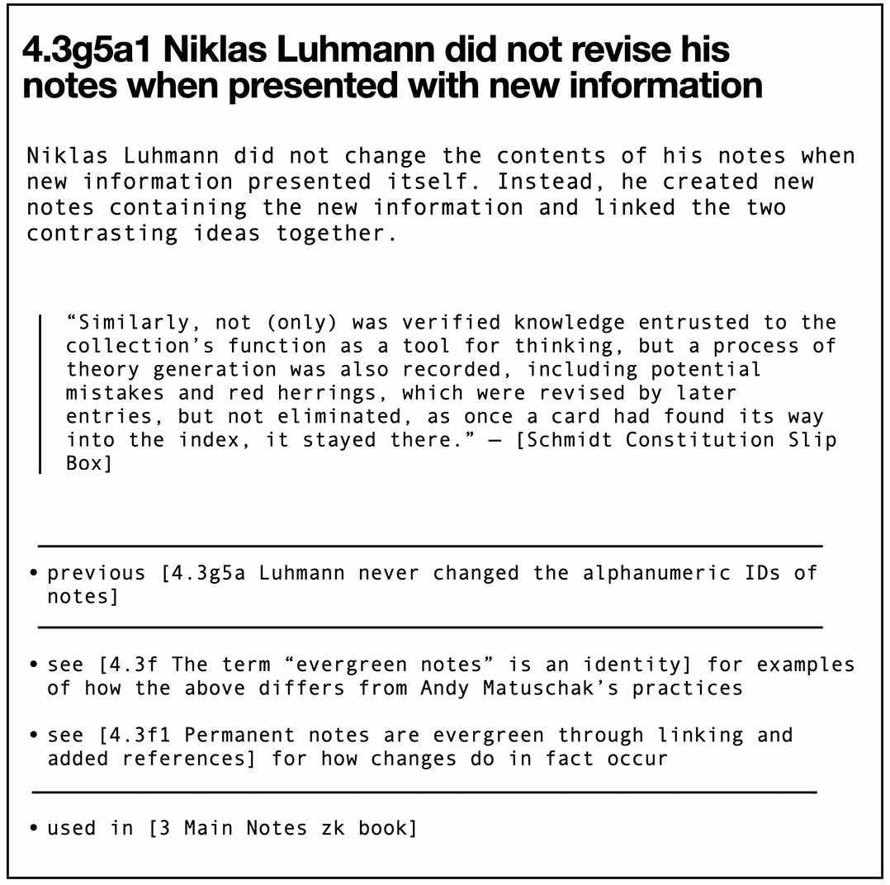
图21。好的主笔记将在未来几年支持你的写作。
当内含的思想被简化到本质时，主笔记效果最佳。处理单一想法意味着你不会在反驳论点和不同观点中筛选。相反，你将处理一个与其他想法自由关联的单一信息单元[(4.5)]。在本书的所有示例中，笔记的单一想法可以在顶部、标题下方找到。
链接用于建立想法之间的关系。通过连接思想，我们为自己提供选择，将孤立的单一想法笔记转化为长篇思路链条。链接将在第4章中讨论。
标题作为一个浓缩的论点，总结存储在笔记中想法的内容。它应该是一个陈述句而不是描述词。“不是所有苹果都可以食用”比”苹果和可食性”更好的标题。前者告诉记笔记者笔记内说了什么，而后者暗示想法可能涉及的主题。还有重复的问题。陈述句使得更容易判断你是否已经捕获了一个想法，而像”苹果和可食性”这样的描述词可能包含任何数量朝向任何方向发展的想法。
当你有一个基于或直接回应他人观点的想法时，将引用段落带入你的主笔记。你可以通过将整个引用粘贴到笔记中，或者通过引用可以找到它的参考笔记来完成此操作。如果你在书的边距写作，你可以简单地引用遇到引用的页面和段落[(2.6)]。
创建动态链接的单一想法笔记的一个巨大好处是它们可以被重复使用。处理劳动的想法不仅需要为处理工作的思路链条做贡献。它也可能为其他处理移民、马克思主义、资本主义、农业立法、创意经济、“闲散之手”宗教概念、分娩等的思路做贡献。你建立的连接越多，从这些连接创造的写作越多，跟踪想法如何以及在哪里被用于你的写作就越重要。
你可能已经注意到上述示例标题开头的数字和字母串。这些字母数字ID，有时被称为folgezettel，给笔记一个永久身份，无论对笔记内容做出任何更改都可以被引用。这些将在第5章中讨论。
创建主笔记的一切努力都会通过使想法更有用、更易连接、更易记忆以及更令人愉悦地工作来增加其价值。如果你觉得主笔记内部有很多内容，请记住这一切都是为了服务你未来的自己。
今天查看笔记的”你”与创建它们的”你”不同，也不会与五年后寻求笔记洞察和指导的”你”相同。你会成长，接触新想法，遗忘旧想法。你未来的自己将从拥有高质量信息中受益。如果你在创建主笔记时花几分钟添加有用信息，你将为自己节省数小时重新发明轮子的时间。记住，你不需要每次使用笔记时都与笔记的每个方面互动。扫描笔记寻找最相关的内容，其余的留在那里。当你需要时它就在那里。
## 3.3 如何创建主笔记
现在你对构成主笔记的组件有了了解，让我们看看如何创建它们。
要处理你的收件箱，取出或打开其中包含的一个笔记。阅读笔记，看看它是否包含对你思考有用的内容。如果笔记包含提醒或任务，将其放在一边[(1.9:3)]。如果笔记包含一个想法，考虑它是否与你的卡片盒中已存储的另一个想法相关，或者它是否是一个你想要发展的新想法。如果这个想法是你还没准备好检查的，将其发送到你的”休眠”文件夹(如果它还没在那里)。如果这个想法激发你思考和写作，请阅读下文。
将想法重新输入或复制/粘贴到新文件中，如有必要进行重写，使用完整句子来捕捉你试图传达的思想核心。考虑这个想法是否/如何与你卡片盒中已存储的另一个想法相关。如果该想法与其他任何内容无关，编辑该想法使其可读，并导入它而不将该想法链接到其他想法。如果该想法与你滑盒中已联网的另一个想法相关，要么重写它以直接针对另一个想法，要么引用先前捕获的想法并说明你为什么建立这种连接。这样做会创建一个思路，无论何时你想从卡片盒中提取内容进行新的写作项目时都可以回溯。在任何一种情况下，都要为你的笔记标题添加适当的字母数字ID[(5.1)]。
接下来，考虑该想法是否与你卡片盒中存储的任何其他想法相关[(4.2:2)]。这些连接建立了该想法可以涉及的额外思路。在笔记中记录这些链接并为每个链接提供上下文，解释为什么建立这些连接[(4.4)]。
完成上述步骤后，给笔记一个简要总结想法的简洁标题。这将帮助你在浏览文件时记住其内容。
从参考笔记引用创建主笔记时要做的第一件事是在新笔记中重新输入、复制/粘贴或引用你想要评论的引语。这有两个目的：
其余程序与临时笔记相同。写下你对该段落的思考。考虑该想法与你卡片盒中存储的其他想法的关系。记录你建立的任何连接。添加适当的字母数字ID。给笔记一个标题。
虽然主笔记将从过往思考和他人想法中创建似乎很明显，但你自己的写作也可以用作主笔记的来源。博客、文章、通讯、推文、电子邮件和论坛评论都可以被解析并重新用作主笔记，以在其他写作或思考工作中重复使用。这可以用与上述基本相同的方式完成：
作为经验法则，最好像对待其他作家的作品一样对待你自己的作品。因为在某种程度上，它确实是另一个作家的作品——你过去自己的作品。
不得不用语言表达想法是激发额外思考的好方法。因此，制作主笔记成为制作更多主笔记的催化剂。接下来几页的图22、23和24是按顺序创建的笔记示例，一个接一个。如果在制作主笔记时想到新想法，利用这个机会将其添加到你的卡片盒中。打开一个新笔记，添加你的想法，将其链接到前一个笔记，给它适当的字母数字ID，给它一个标题，并将其存储在你的卡片盒中。
## 3.4 问题和事实
到目前为止，我们一直在研究包含思想的主笔记——我们的思想和其他人的思想。虽然你的卡片盒主要由这类笔记组成是真的，但有时你会想要纳入不太适合这一类别的想法。
将问题融入你的卡片盒笔记系统是完全可以接受的，因为这些问题既可以作为未来答案的占位符，也可以作为较短写作片段的提示。但是，未被回答的问题是一种价值相对较低的内容形式。毕竟，如果你不知道答案，问题如何在写作中帮助你？你想要传达的想法在哪里？为了让问题变得有用，它们需要被转化为可使用的内容。
提升问题价值的一种方法是将其嵌入到一个陈述中。要做到这一点，问问自己为什么这个问题很重要。这个问题带来了什么感受？这个问题常见吗？例如，不要仅仅捕捉”我是谁？“这个问题，考虑重新构建它（图22）。
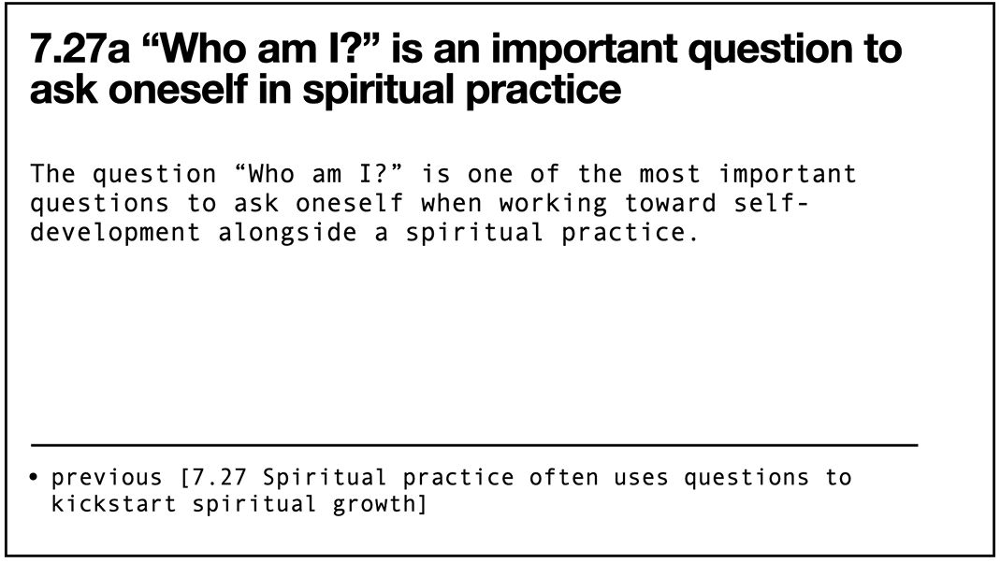
图22. 如果你不知道答案，说出你对这个问题的了解。
“我是谁？”这个问题被记录在笔记中，只是它已经从未知的虚无中取出，带入了已知的领域。它被赋予了语境。即使你自己无法回答这个问题（诚实地说，谁能回答呢？），你对它知道一些事情。那么，为什么不说出那些事情呢？这样做会引发关于这个问题的其他思考（图23）。
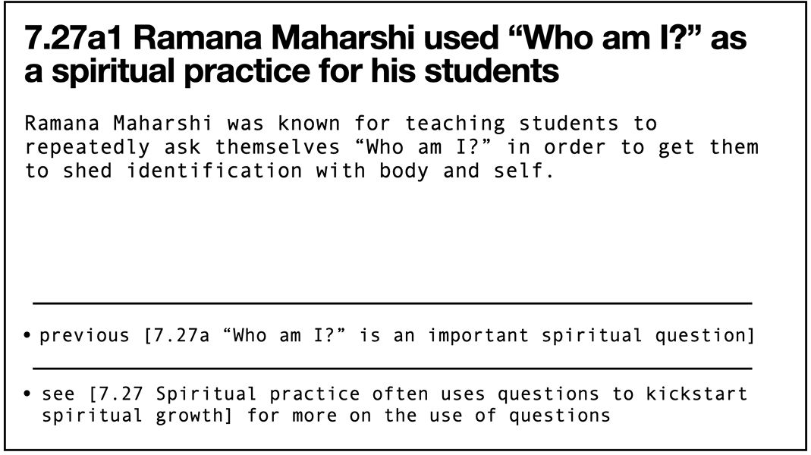
图23. 原本未知的事物很快变成了已知的事物。
这个笔记后面可以跟一个笔记，谈论使用无法回答的问题来促进精神发展的更广泛范围（图24）。
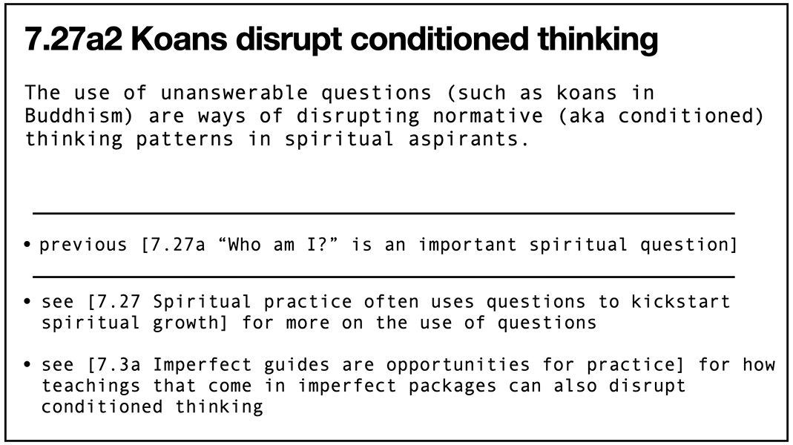
图24. 最初作为无法回答的问题，已经完全变成了其他东西。
因为我们为原始问题提供了语境——将未知转化为已知——我们能够在它与其他想法之间建立联系。这就是我们在卡片盒笔记中创造活力的方式。一个陈述点燃另一个陈述。
无论你是在技术领域工作、进行学术研究，还是只是试图跟踪其他人对某个主题的看法，都有各种原因可能让你想要（或需要）在卡片盒笔记中捕捉事实、定义和/或技术数据。诀窍在于使这些信息变得可用且有价值。
笔记制作者有时会质疑事实是否应该与个人思考共存，因为事实看起来价值较低。从来源复制时，事实本质上是引用，特别是在复制别人的话时。积累未经语境化的事实会导致由他人概念组成的网络，这不一定会改善你的写作。为了提高捕获事实的价值，最好用自己的话重新表述它们。
重新表述事实是释义的一种形式，这提供了一些价值。它可以帮助你将复杂的想法提炼成与你相关的术语，将信息转换成更个人化的东西。这可以帮助开始语境化事实并将它们与其他想法联系起来的过程。
释义也为你提供了可以使用的材料。在图25中，主要想法正文中的句子”服务器连接到互联网”是我从计算机科学课程中提取的事实。注意它如何被嵌入到足够的语境中，为其提供一个概念存在的地方。在这种情况下，“你的家用计算机不是服务器”是一种将事实与我自己的兴趣联系起来的方法。
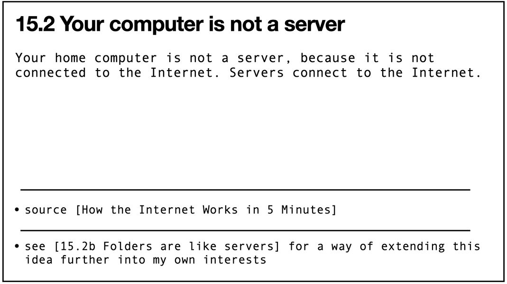
图25. 为事实提供语境，帮助将它们整合到你的思考中。
考虑创建新笔记，这样你就可以谈论这些事实。通过提供额外的评论，你可以更好地将信息整合到你对主题的更广泛理解中，既增强你的理解力，也增强你有效写作相关主题的能力（图26）。
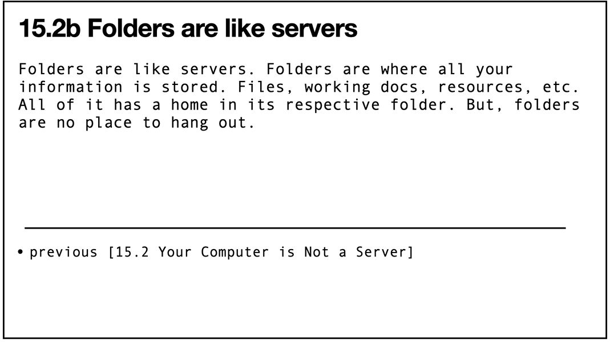
图26. 创建新笔记来讨论事实如何影响你自己的思考。
这个相关笔记的标题将事实拉入个人想法的领域，以稍微不同的方式将其语境化。“但是，文件夹不是闲逛的地方”这个陈述是想法从其原始语境分支并进入更与我的兴趣相关的内容的地方。
你越多地将事实整合到自己的思考中，事实就越有可能进入存储在你的卡片盒笔记中的更广泛的想法网络。图27将收集到的关于服务器的信息拉入一个全新的领域：知识管理。
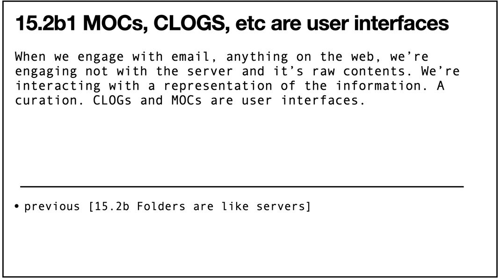
图27. 让你对技术细节的理解带你进入新的思考领域。
随意探索事实如何与你生活和学习的不同领域相关。创建关于事实如何在你日常生活中出现或在公共话语中被看待的额外主要笔记。不要害怕使其个人化。在一个笔记与其相关内容建立联系之前，你永远不知道它的价值。重要的是让事实与你自己的思考接触。你对事实所说的话才是最重要的。
无论在主要笔记中捕获了什么不同类型的信息，创建这些笔记通常通过以下两种方式之一实现：
Niklas Luhmann的笔记制作过程始于阅读，他手持笔和纸进行阅读，捕捉他认为有趣的想法，同时关注他已经在研究的其他想法。Luhmann通过阅读和基于已经开始的想法来发展新想法与他的卡片盒进行交流。但是，对我们许多人来说，情况并非如此。
我们往往不是直接回应已经存储在我们的zettelkasten中的另一张笔记来创建新笔记，而是独立地发展想法，不依赖于之前的捕获。我们不顾卡片盒中已经存储的内容来做笔记。只有在这个过程完成后，我们才尝试将这个想法与我们之前捕获的其他想法联系起来。
这是与Luhmann实践根本不同的方法。但这并不是错误的。独立于你的zettelkasten来处理笔记使得可能在不受干扰的情况下专注于一个想法。这是深入研究单一思想的一种方式。事后尝试改造这个想法实际上可以增强你对它的理解，因为它（有时是强制性地）与其他想法产生碰撞。
然而，不顾其他想法创建主笔记有可能强化独立思想的谬误。Niklas Luhmann在谈到这一点时指出：“每个笔记都是一个元素，只有通过系统内链接和反向链接的网络才能获得其质量。”
尽管如此，不顾我们zettelkasten中的内容来阐述想法，对我们许多人来说，已经成为现代生活方式的要求。虽然Luhmann的实践是一个重要的标准，需要牢记在心，甚至努力实现，但人们必须记住，Niklas Luhmann过着一种与他的家庭、他的zettelkasten和他的写作紧密相连的生活：
如果我没有其他事情要做，那么我就整天写作；上午从8:30到中午。然后我和我的狗去散一会儿步。然后下午我从2点到4点再次工作。然后又轮到狗了。有时我躺下一刻钟…然后我通常写到大约晚上11点。我通常在晚上11点上床睡觉，在那里我再读一些东西。
对于生活方式流动的人来说，想法往往需要在远离卡片盒的地方被捕获、阐述和发展，使用数字工具和笔记本即时完成新笔记。是短暂性的文化及其许多伴随的社会承诺——而不是笔记制作的媒介——最终决定了我们保持的实践。
需要”挤出时间”、“安排进去”、“使其成为日常例行公事的一部分”使得与卡片盒的动态、往返交流变得罕见。毫不奇怪，一些笔记制作者满足于简单地制作”好”笔记，将大部分注意力集中在如何最好地将想法简化为其”原子单位”。在这种环境中，笔记作为自主的信息节点而不是作为与一个人的过去、现在和未来自我交流的手段，与zettelkasten的交流面临着变成”预包装商品交换”的风险。在这种情况下，与一个人的zettelkasten对话的能力成为另一个zettelkasten”神话”。然而，这个神话是真实的。
通过定期回到你的zettelkasten，即使在短暂、不合时宜的时间里，你对其内容产生熟悉感，甚至在阅读时，会想起存储在其中的想法。如果在发展一个想法时你停下来考虑你的zettelkasten的内容，你可以在创建与明显的和看似不同的思路的桥梁的同时，建立在已经被捕获的内容之上。通过平衡不顾你的zettelkasten中的内容来改造独立想法与基于已经存储在其中的其他想法来发展想法，zettelkasten会回应，揭示”不可预测的组合”。在这里，与卡片盒的对话成为标准而不是例外。
与你的卡片盒交流并不意味着你会同意你听到的一切。新捕获的想法总是有可能与之前导入到你的zettelkasten中的其他想法相矛盾或挑战。当这种情况发生时，你可能倾向于改变之前捕获的想法以更好地与新信息保持一致，或者完全删除旧笔记。但是，还有另一种方式。
当呈现出与之前捕获的思想相矛盾的新信息时，Niklas Luhmann并没有修改他的笔记。正如Johannes Schmidt所写的：“潜在的错误和误导…被后续条目修正，但没有被消除，因为一旦一张卡片进入索引，它就会留在那里。”没有必要仅仅因为另一个论点反驳它就彻底修改或改变笔记的论点。这样做会使笔记及其在卡片盒内建立网络的能力变得复杂。相反，创建一个包含反驳论点的新笔记，说明为什么这个新想法优于其前身，将新笔记链接到它所挑战的笔记，并将其导入zettelkasten。错误的想法，如果给予背景，不仅可以作为反驳论点被纳入你的写作中，还可以用来显示你自己的信念如何随时间变化。你曾经持有但不再同意的想法，如果以谦逊的态度处理，会显示你的人性。这造就了好的写作。
矛盾想法的问题实际上是一个完美的问题：每个主笔记必须是你当前思考的完美总结吗？简短的答案？不。
尼克拉斯·卢曼明确表示，尽管他一贯晦涩，当他把卡片盒称为”化粪池”时，建议做笔记的人不要”只包含那些已经澄清的笔记”。[44] 思想之间的关系是赋予它们价值的原因。随着时间的推移，随着新笔记的增加，你的卡片盒将帮助分离出哪些思想仍然有用，哪些思想被淘汰。约翰内斯·施密特阐述了卢曼的观点：
[卢曼的]主要关注点不是在将笔记纳入收藏之前将思想发展到最大程度的精致；相反，他的操作假设是，对笔记有用性的决定只能通过将其与其他笔记关联起来才能做出——因此（在许多情况下）将是未来要决定的事情：通过在随后编制的新笔记的背景下重新阅读笔记，或在探究的背景下，即使用卡片索引作为新思想和出版物的数据库。[45]
请将施密特的话铭记于心。创建主笔记时，你不需要完全弄清楚一切。单个主笔记不需要完美地代表你当前的思维。它们不需要包含最新信息，也不需要”所有链接”。而且，它们不需要彼此一致。随着你的卡片盒的增长，以及你导入新思想，随着你的卡片盒的增长，以及你导入新思想，更多内容将揭示其中思想的重要性和有用性。相信主笔记的内容——单一思想、来源和对其他笔记的情境化引用——将在必要时为你服务。让自己依靠卡片盒的受控混沌。让它成为你的指南。
继续之前…
以下章节将实践你在第一部分学到的内容。如果你一直在执行推荐的任务，这是你应该带来的内容：
# 连接你的思想
到目前为止，我们已经探索了事物——具体来说是笔记——作为理解使用卡片盒方法论的方式。现在，我们要反其道而行之。我们将深入研究方法论，以理解事物是如何运作的。
## 4.1 一切都关乎关系
卢曼式卡片盒由连接思想的网络维系，当一个思想通过引用笔记的ID [(5.1)] 或创建到另一个文件的链接来引用另一个思想时建立。在图28中，所描绘的笔记与存储在卡片盒其他地方的笔记之间建立了关系。
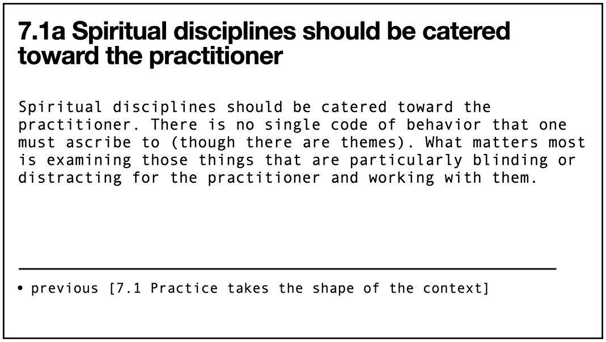{._idgenobjectattribute role=“presentation”}
图28。两个思想之间建立了关系。
这两个思想——显示的这个和被称为”previous”的那个——开始了一个思路，当增加内容时，将形成可用于构建长篇论证的序列。然而，这个序列不是唯一可以形成的。简化到原子本质的思想很少只涉及单一思路，而是可以与你能够论证的任何内容链接。在我的笔记中，跟在”see”一词后面的链接跳出了创建笔记的初始语境。[46] 图29是显示这些跳跃的同一笔记。
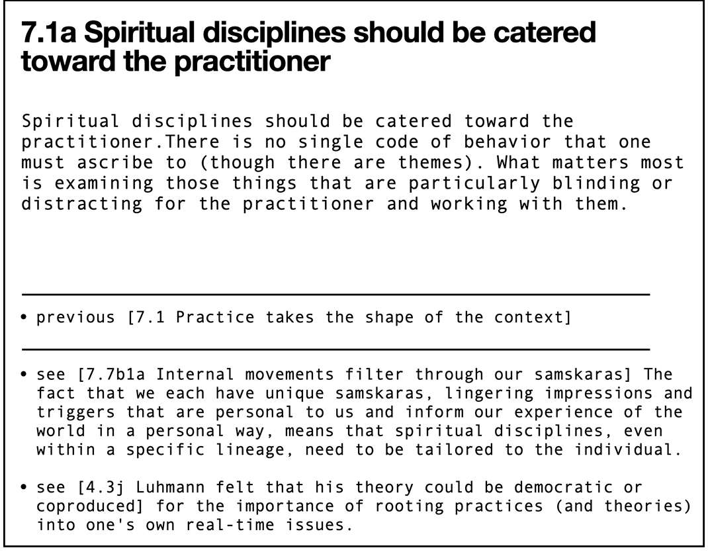{._idgenobjectattribute role=“presentation”}
图29。思想之间的连接可以跨越不同主题发生。
图29中的两个”see”链接都建议了笔记7.1a可以在不同语境中重用的方式，在笔记4.3j的情况下，差异显著。
## 4.2 如何连接思想
当你熟悉了卡片盒的内容后，新的想法会让你想起已经记录的那些想法。这些提醒是线索，指向你的新想法可以在何处以及如何建立连接。每当你试图在主笔记中记录的想法让你想起另一个想法时，翻阅你的笔记找到想到的那个。在你正在创建的主笔记中链接或以其他方式记录这种关系。这种初始连接在两个想法之间建立了关系。现在这个笔记成为了分布式网络中的一个来源 [(6.1)]。
一旦建立了这种初始连接，想想存储在你的zettelkasten中的其他想法，新想法可能与之对话，考虑在其最初构思的语境之外的想法。例如，如果这个想法讨论了在你的花园中拥有多样化土壤组成的好处，考虑它是否也能为与土壤侵蚀有关的想法提供信息。更广泛地思考，这个想法是否可能是一个隐喻，有助于你思考社区如何运作？也许这个想法与另一个讨论拥有多样化生活经历的好处，或创新如何从多学科环境中产生的想法有关。记录新想法与已存储在你的zettelkasten中的其他想法之间的任何关系，并说明你为什么建立这些连接。
当然，在想法之间建立连接不仅仅是为了创建一个动态的链接思维网络。当你建立连接时，你正在扩展你概念化和表达复杂思想的能力。在土壤侵蚀和由于社交媒体的普及导致的人际亲密关系侵蚀之间建立关系是一个切入点，一种以更大深度探索你自己思维的方式。这可以触发令人惊讶的洞察，以你没有预期的方式打开你的思路。
当你刚开始时，在想法之间建立连接可能会感到困惑。毕竟，如何用仅有的几个笔记建立一个想法网络？无论你有五个还是五千个笔记，建立关系都是一样的：审问你想法的内容。阅读潜台词。拓展它们的相关性。翻转它们，里外颠倒。
图30显示了我带入zettelkasten的第一个想法之一。
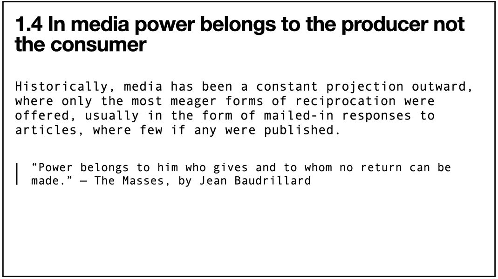
图30. 我最早的主笔记之一。
当时，媒体中的权力动态是我强烈感兴趣的。但这不是唯一的兴趣。我还对伊斯兰神秘主义感兴趣，几年前曾经是当地苏菲教团的一员。在回想那段时光时，我想起了我的shaykha说过的话：“在伊斯兰教中，赠送礼物被认为是一种祝福。拒绝礼物就是否认那种祝福。”十多年后，我在一个临时笔记中记录了这个想法（图31）。
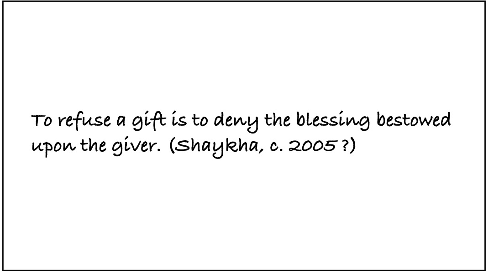
图31. 想法可以在首次遇到多年后找到进入临时笔记的方式。
起初，这个想法似乎与我的zettelkasten中包含的任何想法都没有共同点。当然与笔记[1.4]中包含的想法没有任何关系。然后我审问了它的含义。图32显示了苏菲笔记现在的样子。
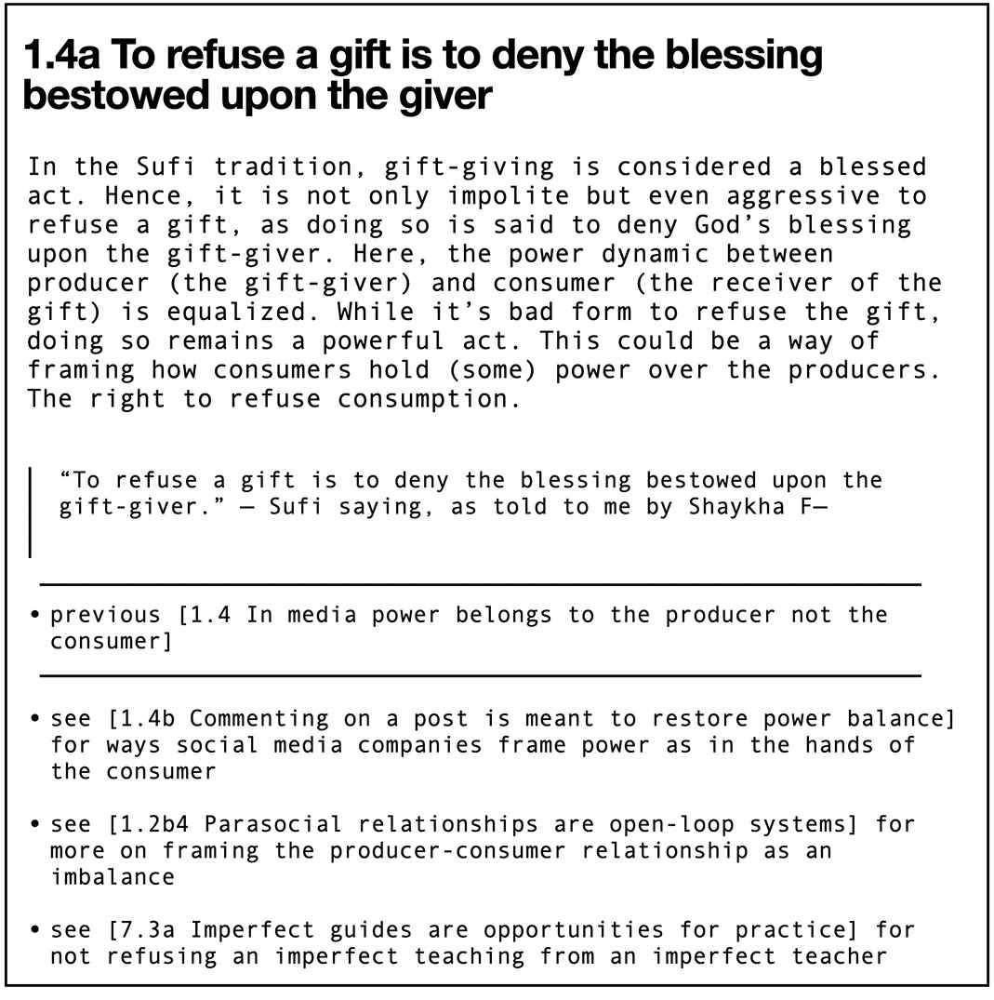
图32. 通过审问主笔记中记录的想法，可以揭示新的相关性。
想法几乎从不只涉及一个主题。如果你要在这样的想法之间建立连接，你需要开始提问：“这个想法只是关于伊斯兰教的神秘分支吗？”“它只是关于赠送礼物吗？”“它必须只与有关宗教的其他想法对话吗？”
起初，你建立的连接可能感觉奇怪，甚至是强迫的。有时候，它们确实可能是这样。但是，随着你添加更多笔记，想法相关的方式会变得更清晰。连接会更有意义，因为你将积极构建论证。简单地说，通过zettelkasten内部增加的连接性，为看似不相关的想法创造了更多表面积。
即使起初连接感觉不够强，记住，你不仅在为今天需要的东西工作，你在为未来的成功做准备。建立连接，说明你为什么建立它，看看未来会揭示什么。
当清楚地说明连接的原因时，想法之间的关系最强。在图32中，为建立链接的原因提供了语境。在”前一个”链接的情况下，想法是对先前记录的想法的回应，想法本身就是语境。因此，不需要额外的语境 [(3.5:2)]。然而，在”参见”链接的情况下，如果你打算跟踪你的思维，则需要额外的语境。
你不应该期望记住为什么在事实发生几年、几个月、几周甚至几天后链接了两个或更多想法。在上面的例子中，如果我没有解释笔记[1.4a]和任何一个”参见”链接之间的关系，我很可能会忘记为什么建立了这些连接。毕竟，苏菲智慧和准社会关系之间的关系并不一定明显。“链接倾倒”是指将未提供语境的链接放入你的笔记中，假设你将来会记住为什么建立了连接的行为。图33底部的链接显示了这是什么样子的。
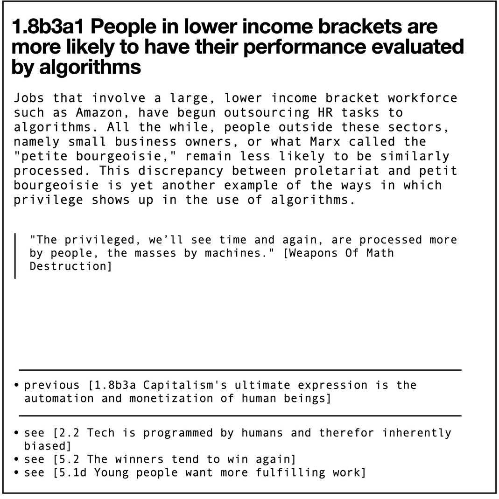
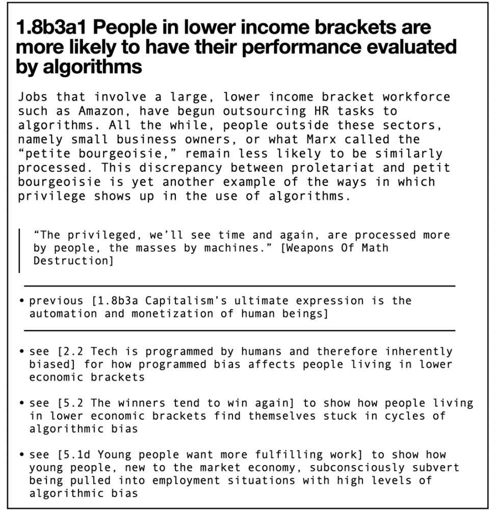 上述”参见”链接没有提供任何关于为什么建立这些链接的信息。
笔记底部的所有链接都可以与上面的主要想法相关联。不幸的是，无法知道为什么。如果说明建立关系的原因会更有成效（从长远来看，也更高效）（图34）。
{._idgenobjectattribute role=“presentation”}
图34.这些”参见”链接被赋予了上下文，以便日后帮助我。
像图34底部那样的上下文化链接不仅会帮助你记住它们与主要想法的关系，而且在将它们上下文化的过程中，会增加你对想法本身的理解。即使是微小的写作片段也能帮助理清你的信念[(1.10)]。最重要的是开始解读你正在思考的想法，通过解释它们如何相关来开始这个过程。
我们能够在不同思路中关联想法的原因，部分是由于原子化，即将想法简化为其要点的实践。[49] 原子性使想法对上下文高度敏感。想法越”原子化”，你就能越广泛地运用它。想法越复杂，它与其他想法连接的表面积就越少。[50] 让我们看看这是如何运作的。
图35显示了一个临时笔记，看起来包含一个想法，实际上隐藏着更复杂的内容。
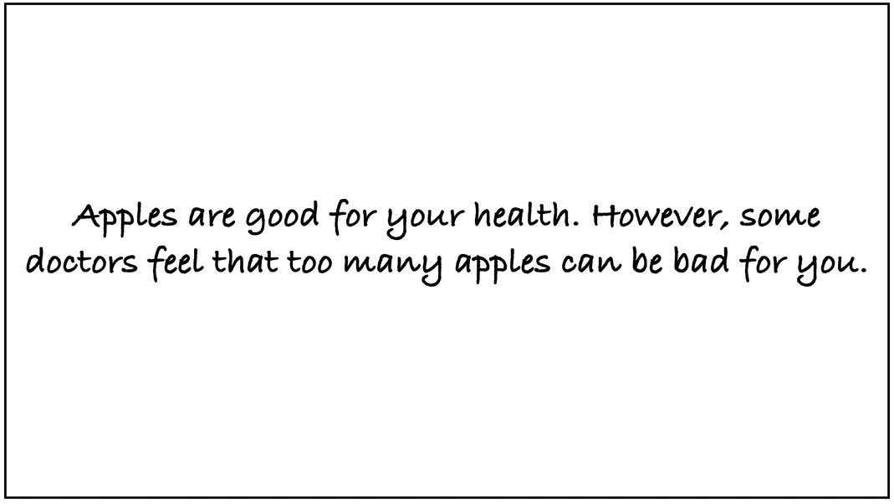{._idgenobjectattribute role=“presentation”}
图35.有时一个想法实际上是两个。
如果我们退一步看，我们发现这个想法并非本质上在讨论苹果，而是在讨论关于其营养价值的差异。要将这个想法与其他想法连接，我需要寻找那些也涉及差异的想法，涉及医学和营养的想法是最明显的。如果我想拓宽视野，更广泛地思考，我可以将这个想法与那些讨论我们如何处理思维中的差异或一般差异的想法联系起来。但是，这些连接有些局限。看看当我将复杂想法分解为两个更简单的想法时会发生什么（图36）。
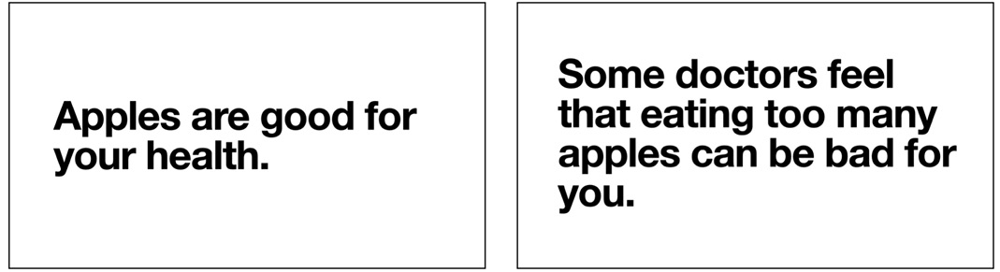{._idgenobjectattribute role=“presentation”}
图36.一个复杂想法被分解为两个更简单的想法。
现在每个想法都可以自由地与其他想法连接，可以用于可能毫无共同点的思路中。以”苹果对健康有益”这个想法为起点，我们看到它可以被多么广泛地运用（图37）。
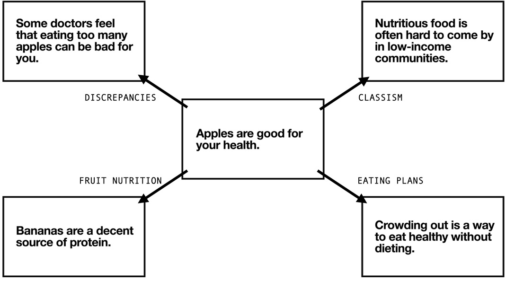{._idgenobjectattribute role=“presentation”}
图37.原子性允许更多连接。
在分解之前，原始笔记只能专门与关于差异的思路相关联。现在你有了选择。“苹果对健康有益”现在可以为那些涉及阶级主义、饮食计划、营养和差异的思路提供信息；这一切都是通过原子化原始想法实现的。
什么程度的原子性最适合你是个人的。正如我的一位PKM同伴所说，“制作一个包含完成其指定任务所需的最少片段数的笔记。”[51] 换句话说，追求”足够原子化”。随着时间的推移，你会感觉到想法在什么时候变得过于简单或过于复杂。一个经验法则是留意”但是”和”然而”在你做笔记时出现的时候。每当我在制作新笔记时写下这两个词中的任何一个，我都会暂停并问自己，“接下来的内容应该是一个新笔记吗？”答案（几乎）总是”是的”。
根据文学批评家和符号学家Julia Kristeva的观点，书面文本是”引文的马赛克”构建的，其中其他文本被”吸收”和”转化”。[52] 在谈论互文性——所有书面作品都影响并受到其他书面作品影响的想法——Kristeva以一种不典型的方式表述道，“每个词（文本）都是词（文本）的交汇点，在那里至少可以读到另一个词（文本）。”原子性正好契合这种理解。
如上所述，简化为要点的想法具有高度连接性，使它们易于在不同语境中重新利用。但是，重新利用不仅仅是关于想法在你的zettelkasten中如何相互链接。它也是导入想法的手段。
使用Luhmann式zettelkasten工作，部分是一种分解实践，其中作者先前结构化的思想被拆解，在卡片盒中建立网络，然后以新的方式重新组装为”引文的马赛克”。[53] 论文从其原始焦点中解开，产生单独的原子想法，可以被重新想象、重新解释，并最终为新工作重新利用。虽然表面上这种掠夺可能看起来具有破坏性，甚至是对神圣事物的冒犯，但它实际上是开发新想法的主要手段之一。
大多数长篇非虚构写作都是为了揭示单一论点或论题（或一系列单一的论点和论题）而结构化的。[54] 在这些作品中，论题建立在较小的主张之上；得到支持和组织以揭示一个”被证明的”论点。例如，论题…
“暴女孩乐队Bratmobile是第三波女权主义的体现。”
…可以通过两个支持性主张得出：
尽管这三个陈述共同构成了一个坚实的论证，但这并不意味着它们只能在这种语境下发挥作用。上述每个陈述都可以被提取出来，单独检验，并重新用于与原始论题关系不大的论证中。[55] 例如，虽然声明1被用来支持Bratmobile是第三波女权主义朋克乐队的观点，但如果脱离其原始语境，它可以用来讨论第二波和第三波女权主义总体上的差异，而无需提及Bratmobile。同样，声明2可以用来讨论来自太平洋西北地区的朋克乐队，而不强调政治性。即使是论题本身，如果脱离其原始语境，也可以不作为论题使用，而是作为讨论90年代硬核音乐中有毒男性气质盛行程度的一个方面。因此，虽然一个想法在其原始来源中可能只支持原始论题，但在卡片盒中，这个想法可以自由地支持多个论题(图38)。
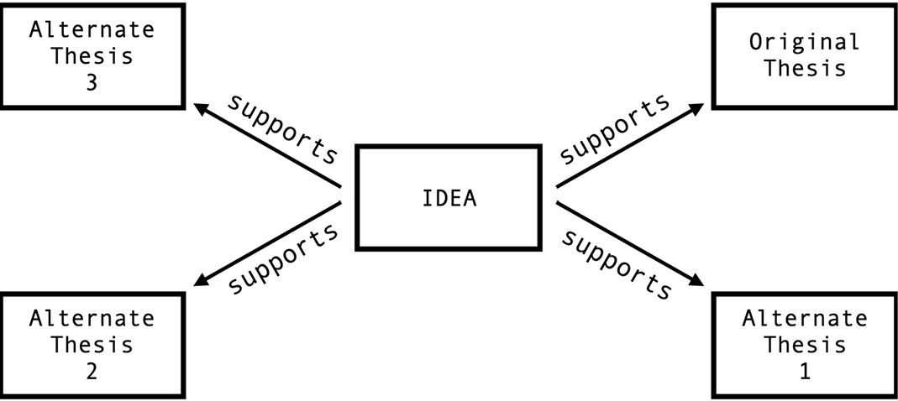{._idgenobjectattribute role=“presentation”}
图38.从原始语境中移除的想法可以支持多个论题，包括原始论题。
您可能想知道，通过将单一复杂的笔记分解为多个较小的笔记，我们是否会在卡片盒中造成混乱。事实上，情况恰恰相反。我们创造了清晰性。
想象一下，如果图34被写成一个长段落，讨论使用算法评估绩效在各种社会经济群体中的诸多不同方式。段落中包含了关于这种情况发生方式的讨论，以及某些群体更经常受到影响的原因。在这个复杂的笔记中寻找您想要处理的特定思路会是什么感觉？像工作一样！每当我们将一个笔记拉入写作项目并必须编辑掉复杂性时，写作就变成了分诊。我们不再是将一个想法带入我们的论文中进行处理、操作和在作品语境中进行审视[(8.6)]。相反，我们在筛选多余的措辞和句法转换来寻找我们要找的内容。简而言之，包含发散想法的长笔记会创造额外的步骤和困惑。
Zsolt Viczián用会议笔记来讨论这种筛选过程。[56] 想象一下，一个会议笔记写在一个长段落中，包含分配给不同人员的众多任务。什么更有用：让每个人自己从段落中解析出他们应该完成的工作，还是将段落分解成单独的、易于识别的任务分配给每个人？如果每次要求您完成一项任务时，您都必须不仅筛选其他人的任务，还要筛选详述每项任务分配原因的段落，这既耗时又分散注意力。这同样适用于用于写作的想法。现在就将它们分解，这样您以后就不必再做了。
## 4.6 链接允许疯狂的连接
链接和原子性不仅关乎增加想法可以被带到的地方的数量。它们也关乎您轨迹的质量。
我发现最鼓舞人心的作家是那些建立启示性、革命性和意外疯狂连接的人。Mikhail Itkin写关于基督教与酷儿、激进、精灵行动主义的交集；David Graeber和Julianna Spahr各自写关于无政府主义，一个与人类学相关，另一个与诗歌相关；Ian Svenonius和Dick Hebdige通过马克思主义镜头写关于摇滚乐的符号学；Michael Muhammad Knight写关于伊斯兰教与朋克摇滚、ayahuasca、William Burroughs和魔法的交集。这些是使用Luhmann风格卡片盒工作时可以建立的连接类型。
在他的论文《与卡片盒交流》中，Luhmann指出使用卡片盒的作家应该”寻求导致意外的内部链接可能性”，“寻找将异质事物相互关联的问题表述更加富有成效”，以及”[卡]片盒提供了从未计划过、从未预想过的组合可能性”。[57] 在谈到他可能如何组织讲座的方式时，Luhmann在一次采访中说：“新想法从[存储在卡片盒中的]纸片的不同可能组合中产生。”[58] 对于我们这些喜欢探索看似不和谐的想法如何相互作用的人来说，卡片盒提供了大量机会来探索当代思想边缘的激进想法。下面的例子(尽管，坦率地说，远非”激进”)显示了两个本不应该有任何关系的想法如何交集(见笔记1.2b和2.1b1):
1 苹果
1.1 并非所有苹果都被认为是可食用的
1.1a 海棠果经常被误认为是苹果酒苹果
1.2 有许多不同种类的苹果
1.2a 麦金托什苹果原产于加拿大
1.2a1 麦金托什苹果于1870年进入商业生产
1.2a2 麦金托什苹果由John McIntosh发现
1.2b 粉红佳人苹果是一个品牌苹果
1.2c 蜜脆苹果在明尼苏达州培育
1.3 苹果是一种水果
1.3a 苹果的栽培历史大约有8000年
1.4 苹果可以是健康饮食的重要组成部分
1.4a 众所周知，吃太多苹果会导致血糖飙升
2 运动和亚文化
2.1 滑板不是犯罪
2.1a 许多乡镇已经开始放宽针对滑板的法律
2.1b 滑板标语是亚文化标记和狗哨
2.1b1 商业利益共同选择亚文化符号并将其转化为品牌
当我查看笔记1.2b和2.1b1时，我看到了苹果品牌化与品牌化如何被用来收编亚文化之间可能存在的关系。一个普通水果的平凡性与地下青年运动的颠覆性并列，以及两者都受到企业利益的影响，这让我着迷。虽然这个例子可能看起来相当温和，但想想如果我用zettelkasten中存储的关于美国医疗保健企业化的想法来充实这种联系会发生什么。那些关于心理学在广告中的运用的笔记，或者那些引用了肖莎娜·祖博夫的监视资本主义中捕捉到的想法的笔记呢？还有我关于情境主义者的”景观”理论的笔记，以及关于”工业食品综合体”的笔记。突然间，我对品牌化如何运作的随意想法变得更加引人入胜。
zettelkasten将看似不协调的想法相互交流的方式在我的卡片盒之旅早期就变得清晰了。当时，我正在阅读凯特·拉沃思的甜甜圈经济学，作为一个小型商业读书会的一部分。经济理论当时不是我研究的一部分，但主持读书会的霍利·霍华德是（并且至今仍是）一位激进的思想家和商业教练，我过去曾与她合作教学。就我而言，如果霍利推荐这本书，那么我就会考虑它。
在读书会开始时，我面临一个选择：我应该用老方法做笔记，将关于甜甜圈经济学的想法隔离到一个名为”经济”的文件夹中，还是应该测试我的卡片盒，让想法根据我在新笔记和已经存储在zettelkasten中的笔记之间建立的关系来自行分类。选择后者让我惊讶不已。尽管我读到的大部分内容都产生了新的想法，但很少与经济理论有关。因为我在zettelkasten中有一个与社交媒体相关的不断增长的想法网络，我在经济学上做的几乎所有笔记都为我对社交媒体如何在市场经济中运作的思考提供了信息。图39就是其中的一个笔记。
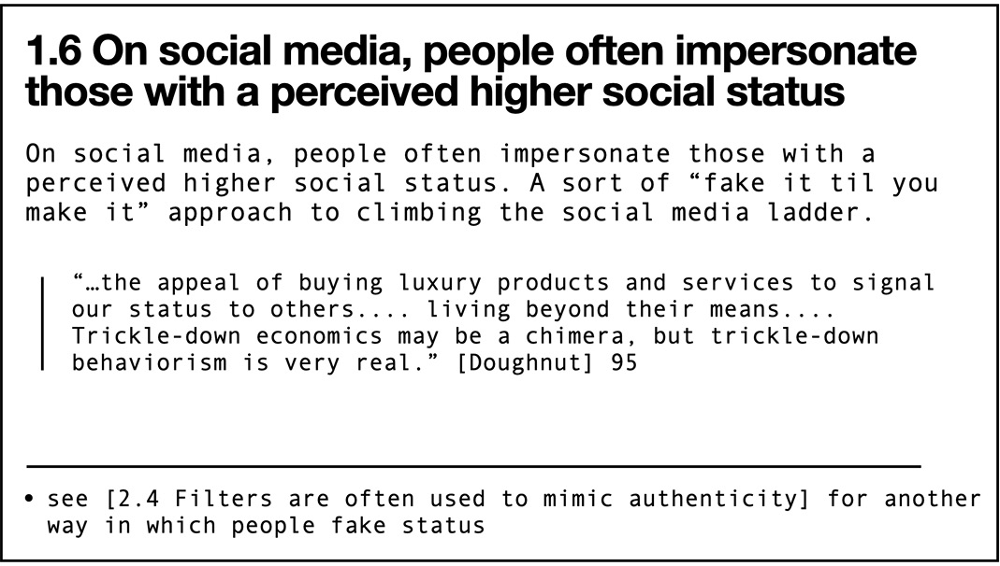{._idgenobjectattribute role=“presentation”}
图39.处理一个主题的想法可能激发处理另一个主题的想法。
看这个笔记，很明显捕捉到的引用与社交媒体无关。然而，因为这是我正在积极探索的话题，它成为了我解释新信息的镜头。两个看似不同的话题，相交产生了独特的东西。
不久，我就发展出了处理劳动和社交媒体如何相互影响的思路；经济理论如何通过在线准社会关系得到强化；以及社交媒体在工资经济中发挥作用的方式。最重要的是，这些联系是即时的。想法之间的关系在当下就发生了，在我做笔记的过程中，因为我的想法没有被隔离在预定的文件夹或类别中。我免于挖掘这些孤岛，而是与开放的想法互动。想法之间的关系在我需要时就在那里。这很令人兴奋，如果我诚实地说，有点可怕。
当我与想要尝试zettelkasten的作家交谈时遇到的最常见的恐惧与迷路有关。“我如何找到我的笔记？”“我如何理解一切？”“文件夹在哪里？”“一切都放在哪里？”当zettelkasten相对年轻时，很容易打开它并找到你的想法。但是，当卡片盒增长时会发生什么？可以理解的问题，特别是结合我们大多数人被教授的传统组织方法来读时。当我开始这个旅程时，我经历了许多失眠的夜晚在思考zettelkasten。我花了三个月的辗转反侧才突然明白：关系。拥抱和利用连接想法之间的共生关系是我们参与（和定位）我们笔记的手段。
对于需要层次和秩序的笔记记录者来说，想法的无序可能是一个可怕的地方。在zettelkasten中迷路的可能性可能感到产生焦虑，甚至威胁性。但是，与其用防止迷路的故障保护来构建zettelkasten，我们应该拥抱这种体验的好处。毕竟，这种体验并不陌生。
作为一个孩子，我喜欢在图书馆的书架中迷路，寻找特定的书，却被我在它们位置上找到的书所惊喜。寻找一本关于佛教的书却找到关于耆那教的书是令人兴奋的；寻找关于滑板的书（没有）却找到一本关于冲浪的书（巧合的是，这成为了终身的激情）。卢曼的主要编辑之一安德烈·基泽林博士就zettelkasten的工作体验谈到了同样的经历。对基泽林来说，使用zettelkasten是”一种找到你没有寻找但仍然可以使用的东西的方法”。更重要的是：
就像在好的图书馆里，在[你最初搜索的书]旁边有一本书，可能比最初寻找的书更有信息量。所以，[zettelkasten是]一种让自己被从完全不同的观点输入的内容所惊喜的方法。[59]
当卢曼说”[卡]片盒提供了从未计划、从未预想的组合可能性”时，这就是他所指的——寻找一件事却找到另一件事。但是，这只有在想法之间的关系被定期和主动建立时才可能。正如卢曼所说：
一个与该网络没有连接的笔记会在卡片文件中丢失，并被遗忘。它的重新发现取决于偶然性和恰好在发现时该重新发现意味着什么的变化。[60]
正如Johannes Schmidt所写，卢曼的思考来自经验：
[我]们反复发现一些卡片集，它们自创建以来很少或从未被重新访问过，这可以从它们的状态和没有添加后续笔记以及没有其他卡片引用它们的事实推断出来。[61]
对卢曼来说，一个想法能够被回忆起来，是因为它已经在卡片盒内建立了思维链条的网络中。只要思维链条的开端在其他地方被记录下来[(6.3)]，他就能找到重要的想法。
像卢曼一样，你有时会导入一些笔记，虽然在导入时感觉非凡，但由于各种原因会掉入巨大的笔记深渊。这不一定是你的失败。只要你定期在想法之间建立关系，找不到笔记表明这个想法可能并不像你想象的那样有趣或相关。
***
# 使用字母数字ID识别你的笔记
在我们探索如何与无政府状态合作之前，我们需要讨论笔记识别。如果你使用纸质zettelkasten，为每个笔记添加某种形式的唯一标识是绝对必要的。这样做不仅使导航和检索洞察成为可能，还帮助你找到并建立想法之间的连接。但是，即使是选择使用数字zettelkästen的笔记制作者，虽然不需要为笔记添加字母数字ID，也能从这种实践中受益。在本章中，我们将探索如何以适用于数字和纸质卡片盒的方式使用字母数字ID。
## 导入笔记
为了定位笔记，从头到尾重构思维链条，并理解他的思考，尼克拉斯·卢曼用字母数字ID识别每个主要笔记，通常采用交替数字和字母的形式（图40）。
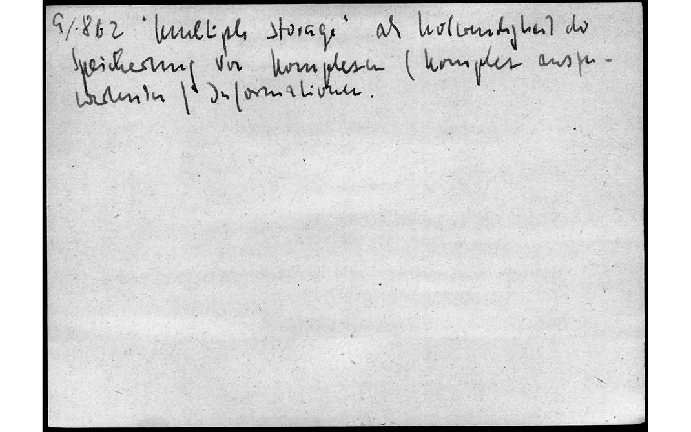{._idgenobjectattribute role=“presentation”}
图40.尼克拉斯·卢曼使用字母数字ID（左上角）定位笔记并连接想法。来自尼克拉斯·卢曼档案馆：比勒费尔德。
字母数字系统，后来被称为”folgezettel”或”后续笔记”，允许卢曼以非层次化的方式工作。想法不再受主题束缚，不再按字母顺序列出，也不再仅根据连续质数编目，所有这些都会创建一个线性组织的系统。通过使用数字和字母的组合，卢曼能够将笔记放置在彼此之间，允许想法向任何方向分支。
有多种方法可以在尼克拉斯·卢曼的精神指导下建立字母数字ID系统。在本书中，我们将首先制作一个主要笔记并给它数字ID 1.1[62]：
1.1 并非所有苹果都被认为是可食用的[63]
注意上述笔记不包含顶级想法。它没有定义一个广泛的概念，也不是关于苹果一般情况的笔记。它不是苹果是水果。相反，笔记1.1提出了一个具体主张。这是因为用于你的zettelkasten的想法是按照它们被创建的顺序导入的，而不是按照语义上最合理的顺序。换句话说，笔记1.1是我们的第一个笔记，因为它是第一个想到的想法。
一旦你有了第一个笔记，任何后续笔记都将获得一个字母数字ID，将其链接到它所阐述的想法：
1.1 并非所有苹果都被认为是可食用的
1.1a 酸苹果经常被误认为是苹果酒苹果
笔记1.1a从笔记1.1分支出来，因为在我看来，“酸苹果经常被误认为是苹果酒苹果”与前面的笔记相关，因为酸苹果是一种经常有争议的不可食用水果。这就是自下而上的笔记制作系统的诞生。我们从任何地方的任何想法开始，处理出现的东西，就像它出现的那样。
你不应该期望每个新创建的笔记都与你刚制作的笔记对话。当一个新想法浮现在脑海中，它涉及你正在探索的一般主题，但不一定与该主题的先前笔记对话时，给新笔记下一个连续的数字ID（见下面的笔记1.2、1.3和1.4）：
1.1 并非所有苹果都被认为是可食用的
1.1a 酸苹果经常被误认为是苹果酒苹果
1.2 有许多不同种类的苹果
1.3 苹果是一种水果
在上面的例子中，笔记1.2到1.4都围绕数字1的主题展开，但由于它们并不直接涉及笔记1.1a中捕获的想法，因此被赋予了字母数字ID来反映这一点。
显而易见，这一切都非常主观。笔记1.2到1.4中包含的任何想法都可能是在笔记1.1a的启发下写成的。这完全取决于你在创建笔记时的思维状态[(4.2)]。
上面新导入的笔记被赋予了字母数字ID，反映了它们与之前导入笔记中包含的想法的密切关系。但是，对于与之前捕获的想法毫无关系的想法呢？它们如何识别？既不涉及、不告知、也不发展先前想法的新笔记被赋予下一个连续的首数字。见下面的2.1：
1.1 并非所有苹果都被认为是可食用的
1.1a 螃蟹苹果经常被误认为是苹果酒苹果
1.2 苹果有很多不同的种类
1.3 苹果是一种水果
1.4 苹果可以成为健康饮食的重要组成部分
2.1 滑板不是犯罪
笔记2.1被如此识别，是因为这个想法与之前捕获的任何内容都无关。但是，情况可能有所不同。如果我关于滑板的笔记涉及我之前捕获的关于苹果的想法之一，那么我会相应地识别它。见下面的笔记1.4a：
1.1 并非所有苹果都被认为是可食用的
1.1a 螃蟹苹果经常被误认为是苹果酒苹果
1.2 苹果有很多不同的种类
1.3 苹果是一种水果
1.4 苹果可以成为健康饮食的重要组成部分
1.4a 滑板文化尚未强调健康饮食作为提高表现的方法
在Luhmann式的zettelkasten中，语境就是一切。这就是为什么一个关于滑板的笔记要么开始一个新的思考领域，要么如果适当地放在语境中，继续扩展一个已经在发展的思考领域。
你的zettelkasten中捕获的每个想法都是新思路的潜在起点。仔细看看下面的笔记标题，看看你能否辨别出每个笔记为什么以这种方式编号：
1.1 并非所有苹果都被认为是可食用的
1.1a 螃蟹苹果经常被误认为是苹果酒苹果
1.2 苹果有很多不同的种类
1.2a 麦金托什苹果原产于加拿大
1.2a1 麦金托什苹果于1870年进入商业生产
1.2a2 麦金托什苹果由约翰·麦金托什发现
1.2b 粉红女士苹果是一个品牌苹果
1.2c 蜜脆苹果在明尼苏达州培育
1.3 苹果是一种水果
1.3a 苹果已被栽培约8000年
1.4 苹果可以成为健康饮食的重要组成部分
1.4a 吃太多苹果已知会导致血糖飙升
2.1 滑板不是犯罪
2.1a 许多城镇已开始放宽反对滑板的法律
2.1b 滑板标语是亚文化标记和暗号
2.1b1 商业利益共同选择亚文化符号并将其转化为品牌
你注意到笔记1.2a、1.2b和1.2c了吗？每个都涉及不同种类的苹果，都成为了笔记1.2的分支。那么关于滑板的笔记呢？笔记2.1a和2.1b分别涉及法律和亚文化标语，[64]直接涉及笔记2.1。注意笔记2.1如何被2.1a和2.1b引向两个不同的方向。
最重要的是，思路不需要从一个部分的第一个笔记开始。它们可以从任何地方开始。一个最初作为先前笔记分支的笔记本身也可以成为新论证的起源。围绕麦金托什苹果发展的部分（笔记1.2a、1.2a1和1.2a2）就是一个例子。滑板部分中的笔记2.1b和2.1b1是另一个例子。
随着你的zettelkasten中思路的发展，想法开始以你未曾预料的方式交融，你可能倾向于移动笔记，觉得一个较旧的笔记可能更适合放在新发展的想法序列中。你可能想知道为什么关于螃蟹苹果的笔记1.1a没有移动到以笔记1.2开始的关于苹果品种的笔记部分。毕竟，螃蟹苹果构成了苹果类型的一个类别。原因很简单。笔记1.1a保持在原位，因为其中捕获的想法不是在苹果品种的背景下发展的，而是对可食性的回应。所以，它过去是，现在仍然处于那个语境中。
这并不是说想法被困在任何特定的语境中。尽管为笔记分配了固定的字母数字ID，folgezettel并不规定必须连接的固定引用集。由于你的笔记将相对简洁，处理一个想法，你的笔记可以在许多不同的语境中使用[(4.5)]。Folgezettel不限制这一点。
链接允许想法跳跃。这是自下而上系统保持凝聚力的主要机制之一。正是通过链接，我们能够在想法之间建立连接，这些想法除了首次导入时定义的关系之外还有其他关系。
人们对卡片盒笔记法(folgezettel)最常见的担忧之一是，当一个字母数字编号位置被之前导入的笔记”占用”时该怎么办。例如，当你想在笔记1.1和1.1a之间添加新笔记时会发生什么？应该给1.1a一个新的字母数字ID吗？不应该。字母数字ID显示笔记之间存在关系，但不显示该关系的语义质量——即该关系的”含义”。换句话说，卡片盒笔记法不是大纲。
就像本章所示的笔记一样，存储在卡片盒(zettelkasten)中的想法不是按照语义逻辑组织的。关于海棠果的笔记1.1a并不是继笔记1.1之后最符合逻辑的想法。事实上，如果要让这两个想法在一篇文章中流畅地衔接，在它们之前、之间和之后还缺少很多内容。论文和文章通常围绕逻辑的、线性的、语义连贯的想法构建，组织起来产生严密的论证。[65]你的卡片盒将是相反的。它应该足够不规则，让”疯狂”的想法有机会突破传统思维模式的麻木嗡嗡声[(4.6)]。它应该感觉有点松散。这就是自下而上系统的本质[(6.1)]。没有”被占用的位置”，因为没有预定的顺序。因此，不需要担心哪些字母数字ID已经被使用了。选择任何能充分建立两个想法之间关系的字母数字ID，并将其添加到笔记中。
如果在发展了一些思路之后，你决定给该部分贴上标签以便更容易定位，你可以创建一个”章节标题”笔记。在我们一直在发展的例子中，第1节可能被标记为APPLES，或者，如果该节开始包含关于水果的一般笔记，则标记为POMOLOGY.第2节可以标记为SPORTS and SUBCULTURE：
1 APPLES
1.1 Not all apples are considered edible
1.1a Crab apples are often mistaken for cider apples
1.2 There are many different kinds of apples
1.2a Macintosh apples are native to Canada
1.2a1 Macintosh apples entered commercial production in 1870
1.2a2 Macintosh apples were discovered by John McIntosh
1.2b Pink lady apples are a branded apple
1.2c Honey crisps were created in Minnesota
1.3 Apples are a kind of fruit
1.3a Apples have been cultivated for roughly 8,000 years
1.4 Apples can be an integral part of a healthy diet
1.4a Eating too many apples has been known to cause spikes in blood sugar
2 SPORTS AND SUBCULTURE
2.1 Skateboarding is not a crime
2.1a Many townships have begun to soften laws against skateboarding
2.1b Skateboarding slogans are subcultural markers and dog whistles
2.1b1 Commercial interests co-opt subculture symbols and turn them into branding
请记住，章节标题是可以更改的。可以添加新的章节标题。这些标记不是预定义的类别。你应用于某个章节的任何标签都必须在添加想法之后完成，不应该用来帮助决定新想法应该放在哪里。这会将你的注意力从想法层面转移开，重新导向分类，这是所有自下而上和涌现事物的杀手。章节标签只用于帮助定位你想要回到的卡片盒区域。
许多笔记制作者假设，因为归属于笔记的字母数字ID以系统化的方式向外构建（即1a后跟1a1，然后是1a1a，以此类推），这些标识符所指的想法本身也必须是系统化的。下面的五个笔记显示了为什么这是错误的：
1.1 Apple pies are delicious
1.1a Apples are fruits
1.1a1 Eating apples can be good for you
1.1a2 Apple symbology is found in Western interpretations of the Bible
1.2a1 The apple pie has a long history as a symbol of the United States
将卡片盒笔记法视为创建层次结构的手段误解了卡片盒内部发生的事情。我们不是在连接笔记。我们在建立笔记内部包含的想法之间的关系。这些想法在出现时被导入卡片盒，没有特定的顺序，通常对它们如何与其他想法相关没有任何先入之见[(3.5:3)]。上述笔记中包含的想法既不是像大纲那样按层次组织的，也不是语义连贯的。笔记1.1a Apples are fruits不是笔记1.1 Apple pies are delicious.的语义”子项”。笔记1.1a Apples are fruits也不是1.1a1 Eating apples can be good for you.的”父项”。
将字母数字ID想象成街道地址可能会有帮助。你永远不会假设Middle Rd 1号的居住者是Middle Rd 2号居住者的父母。你也不会假设1A公寓的居住者是1B公寓居住者的兄弟姐妹。关系由地址的居住者决定，而不是地址本身。同样，笔记4.6a1中包含的想法不一定是笔记4.6a1a中包含的想法的”父项”，尽管两者都存在于同一条”街道”上。卡片盒笔记法只显示存在关系。它不显示该关系的性质。
误解笔记ID与笔记内含思想之间的关系，是一些人认为卢曼将其zettelkasten(卡片盒)按树状结构进行层次化组织的主要原因之一。虽然这种看法是错误的，但出于便利考虑，有时确实需要将其卡片盒的内容以这种方式呈现。Johannes Schmidt和负责编目卢曼作品的档案馆正是选择了这样做。
图41的底部显示了比勒费尔德大学Niklas Luhmann档案馆呈现的典型树状结构。
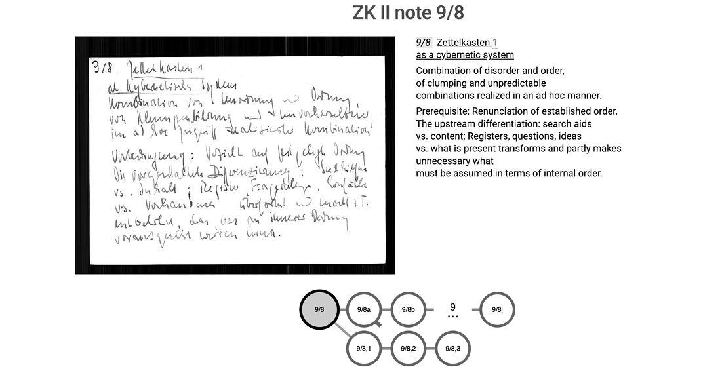
[图41.][] 为了便利，卢曼的笔记有时被呈现为树状结构。来源：比勒费尔德大学Niklas Luhmann档案馆。
乍一看，似乎Schmidt和他的团队陷入了树状结构谬误。但实际情况并非如此。Schmidt明确表示，以这种方式描绘卢曼的思维网络是一个编辑决定，并不意味着准确反映卢曼zettelkasten的结构，而是出于便利考虑，这一点在档案网站的至少两个地方都有说明：
NL档案馆执行的不同层级的层次化是基于编辑决定，也有实际原因，即它并不反映内容或结构方面的卢曼式要求，因为[卢曼的zettelkasten]是异层次化设计的。[[66]]
以及这里：
Niklas Luhmann档案馆执行的组织结构层次化是一个编辑决定，[卢曼的zettelkasten]的顺序并不遵循严格的层次逻辑。[[67]]
显然，这些图表的结构不应该按字面意思理解。请尽量记住，无论卢曼的系统如何在视觉上呈现，或者我们有时如何将思想称为彼此的”父级”或”子级”，这些都只是便利的表达方式。卢曼式zettelkasten中没有层次结构。
当我们结束对字母数字ID的讨论时，你可能会想知道这种做法是否适合你。幸运的是，如果你使用的是纸质zettelkasten，答案很简单：是的。使用纸质卡片盒需要某种形式的唯一标识来定位笔记。然而，虽然这对于数字zettelkästen可能不是必需的，但仍有理由使用这样的系统。
Folgezettel提供了思想导入zettelkasten时所建立的初始连接的鸟瞰视图。这使你能够在不必取出单张笔记的情况下看到这些连接。卢曼在建议只在笔记的一面书写时谈到了这种做法的价值，“这样在搜索时，我们不必取出纸张来阅读它。”[[68]] 对卢曼来说，在深入之前能够悬停观察是有益的。甚至可能是更好的。拥有扫描和查看连接的能力有助于作者导航已经变得庞大、无法”从椅子上”调查的卡片盒。[[69]] 对于每周或每日发表作品的多产作者来说，能够快速查看跨学科的大量顶级连接不仅重要，而且至关重要。
除了可扫描性，使用folgezettel还可以影响你的笔记制作实践。这在将笔记从临时笔记转换为主笔记时特别明显。被迫尝试在新笔记和已存储在zettelkasten中的笔记之间建立至少一个连接，这开始了创造思路串联和理解捕获内容的过程。
正如举重训练、写书和分娩被认为是”良性压力”的形式，[[70]] 即具有有益结果的高强度活动，folgezettel也是”良性摩擦”的一种形式，是一种放慢速度以更好地参与面前工作的方式。必须手动为笔记应用字母数字ID会使笔记制作过程减速到足以迫使你思考自己在做什么的程度。它培养良好的习惯。它加强心理连接。这是帮助那些倾向于在笔记中倾倒链接而不花时间说明为什么这样做的人所需要的摩擦类型。
当人们想到无政府主义{.caption-figure1}时，他们常常联想到暴力和破坏。他们想到的是混乱。但是，无政府主义的核心关注点与其说是制造混乱，不如说是与混乱共事。在政治上，无政府主义是一种信念，认为社会在没有中央政府的情况下运作得最好。但是，无政府主义话语远远超出了对集中化社会组织方式的批评。无政府主义理论是对系统、艺术、关系以及（就我们的目的而言）思想如何利用{.charoverride5}混乱的探索。
## 6.1 分布式网络和蜂鸣体
卡片盒的主要部分是思想的无政府状态：一个没有层级、没有权力中心、没有自上而下结构的个人知识库。从这个意义上说，它是一个分布式网络，一个每个思想既是交叉点又是出发点的系统。
在分布式知识系统中，思想自由互动。没有向心力将思想拉向主题中心，没有一个所有思想都链接的地方。稳定性通过关系来实现，这些关系虽然建立得很好，但也很灵活，向各个方向扩展（图42）。
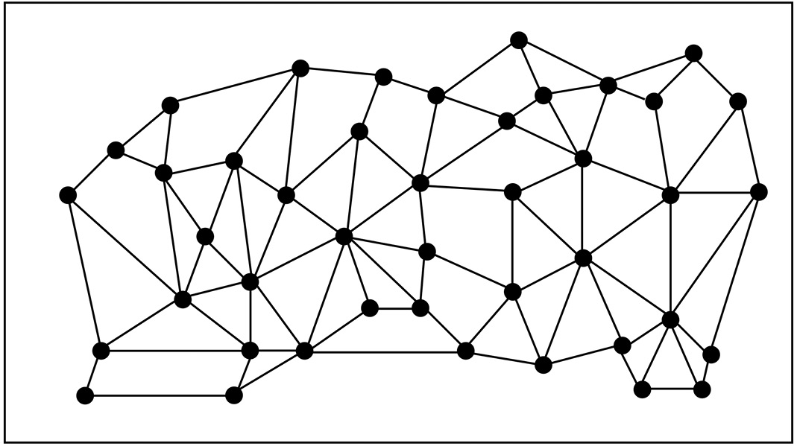{._idgenobjectattribute role=“presentation”}
图42。每个主要笔记都是新思路的潜在起点。
熟悉法国批判理论的读者会认识到无政府分布式网络与”蜂鸣体”概念之间的重叠，后者由吉尔·德勒兹和菲利克斯·瓜塔里在他们的著名作品《A Thousand Plateaus: Capitalism and Schizophrenia》{.charoverride5}中推广。正如作者所声称的，蜂鸣体是理解”符号链、权力组织以及与艺术、科学和社会斗争相关的环境”的框架。[71] 蜂鸣体理论试图重新阐述如何讨论和理解人际关系、社会结构和意义建构，以及如何进入这样的讨论和理解。正如作者所述：
我们将从任何一点进入[蜂鸣体]；没有一点比另一点更重要……我们只是试图发现我们的入口连接到哪些其他点，经过哪些十字路口和画廊来连接两点，蜂鸣体的地图是什么，如果从另一点进入，地图如何被修改。[72]
德勒兹和瓜塔里打算检视社会和理论结构的方式很清楚：
这种对社会和理论遭遇的无政府主义解读，通过”经过十字路口和画廊来连接两点”进行发现，几乎与尼克拉斯·卢曼对卡片盒的描述完全相同。在他的文章《Communicating with Slip Boxes》中，他指出”每个笔记都是一个元素，只有从系统内链接和反向链接的网络中才能获得其质量。“当卢曼在自己的笔记中讨论对从卡片盒中提取什么有先入为主的观念的陷阱时，他写道：
[依]赖笔记之间的关系，即依赖那些比人们在跟随搜索冲动或思维固定时所想到的更多内容的参考。[73]
甚至德勒兹和瓜塔里对蜂鸣体的共同生产性质以及其地图如何”修改”的引用，也可以在卢曼的思想中找到。正如基瑟林所述：
在一次讲座中，[卢曼]曾经这样表述：适合我理论的表述形式实际上应该是完全民主的共同决定散文，每个人都可以在任何一点添加自己的贡献，从而改变理论本身。[74]
基瑟林进一步总结，卢曼的卡片盒反映了这种”民主”的意义建构过程，“因为它向每个使用它的人展示不同的理论。”[75] 再加上卢曼对”无序”、“意外链接”、“异质事物”和”从未计划过、从未预想过的组合可能性”的欣赏，以及他对组织层级[76]和”匆忙系统化和封闭”[77]的批评，很明显卢曼相信非层级组织会导致非规范性的观念形成。然而，这并不意味着卢曼总是以其原始的、无政府主义的状态与蜂鸣体互动。
## 6.2 创建高层视图来参与蜂鸣体
无政府主义的思想网络具有很高的可塑性。当新思想被纳入时，结合它们的连接组织会伸展、扭曲和转向以适应所添加的内容。蜂鸣体具有很高的可变性，能够接受任何投入其中的东西。但是，它们也有其缺点。
你的卡片盒的主要部分，即存储所有单一想法笔记的地方，有可能成为一个非常难以管理的地方。如果没有高层视图来理解你的意义建构，数千条笔记最终可能感觉像是一团乱麻。为了理解分布式网络的内容，笔记制作者创建了查看和参与最相关内容的替代方式。这样做，就可以看到思路是如何发展的，同时让主要部分的创造性混乱保持不受干扰。以下是你可以做到这一点的三种方式。
随着时间的推移，你的zettelkasten中会围绕特定主题和话题发展出可识别的区域。枢纽笔记(Hub notes)有助于指向你思维所到达的各个地方，起到”接入点”[78]或”主题间的高速公路”[79]的作用。它们是帮助你在更大的笔记集合中定位自己的方式，帮助你从一个地方到达另一个地方。[80]让我们看一个例子。
假设你的zettelkasten中围绕冰淇淋这个话题发展出了一个区域。你知道这一点是因为有许多笔记相互引用，每个笔记都涉及这种甜点的不同方面。你的卡片盒的这个区域已经”膨胀”了。围绕这个话题形成了思想的”集群”[(7.1:1)]。[81]在这个区域内，有许多不同的思路将冰淇淋的概念带到了非常不同的地方。一条思路讨论冰淇淋作为安慰食物。另一条涉及冰淇淋卡车司机的劳工权利。第三条着眼于冰淇淋与奖励系统和多巴胺释放的关系。枢纽笔记的创建是为了帮助你定位这些不同思路中的每一条。
创建枢纽笔记相对简单。首先，选择你zettelkasten中通过不同思路将主题带到各种地方的一个部分。一旦你决定了要处理的部分，创建一个新笔记，并给它一个标识你将要探索主题的名称。接下来，识别该部分中启动各种思路的笔记。按照它们在你的笔记堆栈中出现的顺序列出每一个，简要描述它们通向何处。以下是我自己卡片盒中的一个例子：
PKM and knowing ................…. 3.4
Using systems for knowledge work ... 4.1
Spiritwork and pkm .............…. 4.1b2
Functions of the zettelkasten ...... 4.3b
Luhmann’s practices .............… 4.3c2
All things folgezettel ..........… 4.3g
On-ramps, off-ramps, and friction .. 4.4
Project management .............…. 4.5
上面的笔记列表让我能够快速跳转到我卡片盒中经常使用的区域。但是，这个列表并不详尽。提供的笔记仅仅是入口点。枢纽笔记指向事情正在发生的地方，而不是事情本身。
枢纽笔记可以存储在zettelkasten中任何感觉合适的地方。
与包含指向你zettelkasten中发展的思路的笔记列表的枢纽笔记相反，结构笔记是可以进一步发展这些思路内容的空间。为了看到你的想法在语义上如何相关——它们如何作为一个连贯的思路发挥作用——它们需要被导出到一个你可以展开它们的地方。结构笔记就是这种事情发生的地方。
在最基本的层面上，结构笔记是从你的zettelkasten中提取的相关想法列表，并组织成语义连贯性，这种先例可以在Luhmann自己的卡片盒中找到。在他的研究中，Johannes Schmidt在Luhmann的主要笔记中发现了其他似乎产生”更大结构轮廓”的内容，类似于”文章或书籍目录”中可能找到的内容。[82]这个定义后来被Sascha Fast在2018年的一篇文章中呼应，他将结构笔记称为”目录”，显示”层级和秩序”。[83]但是，虽然Luhmann的结构笔记是与特定主题相关的想法的简要列表，Sascha后来将结构笔记带入了一个全新的领域。今天，结构笔记不仅用于显示相关想法，还在zettelkasten内提供一个空间来探索和组织我们围绕这些想法的思考。正如Sascha在后来的文章中所说，“我们需要Zettelkasten中的[地方]...让个别想法能够聚集和连接。”[84]
创建结构笔记可以简单到以有意义的方式组织笔记或想法的列表，随着新想法进入zettelkasten而随时间添加。首先，用你计划探索的主题为笔记命名。[85]然后，列出你能想到的涉及该主题的主要笔记（图43）。
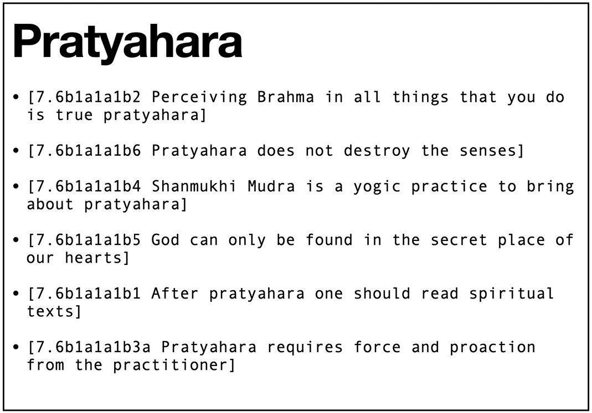{._idgenobjectattribute role=“presentation”}
图43.结构笔记可能开始作为组织成粗略连贯外观的简单笔记列表。
这个初始的笔记收集给你一些可以处理的内容。一旦你收集了一些想法，开始以有意义的方式组织它们，为你做出的选择提供背景。然后，在你的zettelkasten中寻找其他涉及结构笔记发展主题的想法，再次为你包含的笔记提供背景。图44显示了一个演进的结构笔记可能是什么样子。
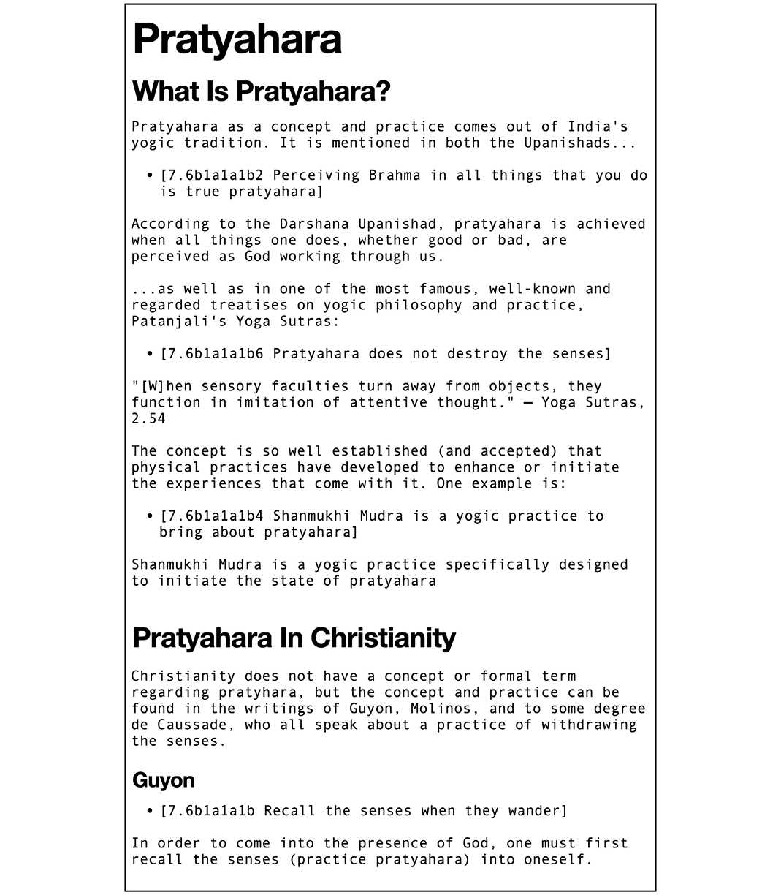{._idgenobjectattribute role=“presentation”}
图44.结构笔记作为检查和组织连接的地方。
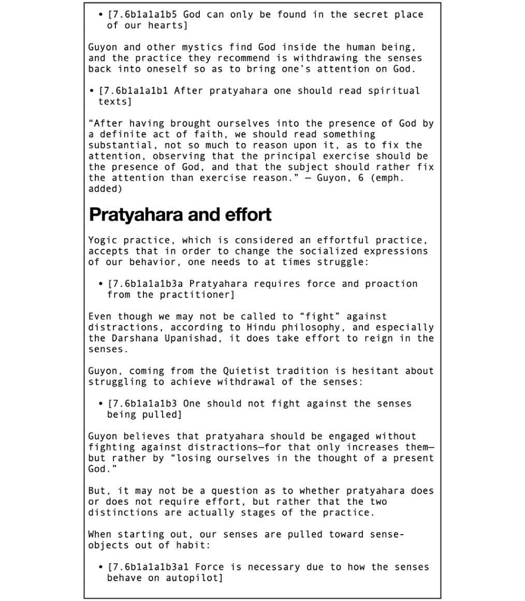{._idgenobjectattribute role=“presentation”}
花时间组织和解释你收集的想法之间的关系将帮助你理解自己在该主题上的思考，同时导致也可以包含在结构笔记中的额外想法。你也可能发现你思考中缺乏实质内容或完全缺失的领域。
与你的卡片盒(zettelkasten)中永久存储的其他笔记一样，结构笔记可以根据需要保存任意长时间。这些笔记可以用来帮助你在卡片盒中定位方向（即，指向有趣的思路），但也可以随时间不断添加内容。[86] 在结构笔记中添加任何与你正在研究的论点相关或对其有启发的新笔记。
设计上，枢纽笔记和结构笔记是与卡片盒互动的相对规定的方式。另一方面，尼克拉斯·卢曼的关键词索引[87]则像神谕一样发挥作用。
卢曼的关键词索引并不详尽。每个列出的关键词最多只有四个引用，指向该术语可以找到的位置（在一个包含超过六万张笔记！的卡片盒中）。假设是笔记中的引用足以指导卢曼一旦进入卡片盒就知道需要去哪里。[88] 这并不是说卢曼使用关键词索引来定位特定笔记。卢曼明确表示他的卡片盒主要不是用来存储和检索个别想法的。[89] 相反，卡片盒通过关键词索引旨在诱发”偶然性”。[90] 正如约翰内斯·施密特所说：
[通]过关键词索引访问文件...并不将搜索限制在该术语上。恰恰相反.… [任]何搜索很快就会打开一个庞大的笔记网络.… [通]过关键词索引的查询引入了偶然性，并在各种异质方面之间创造了联系。[91]
在阅读施密特的描述时，我不禁想到实验音乐家约翰·凯奇的”偶然操作”，其中创作过程的某些方面留给外部条件（即星图）或预定义过程的规则（即一首歌必须以特定音符开始和结束）。通过在关键词搜索中欢迎偶然性，卢曼，类似于凯奇，允许遗忘和未知，即偶然，参与意义创造。
我们也可以从实验性法国写作团体Oulipo所采用的诗意”约束”的角度来思考卢曼对搜索其卡片盒的有意简朴方法。该团体成立于1960年，由作家和数学家组成，他们探索使用预设结构和限制来创作非传统诗歌和散文的深度。其中最著名的是乔治·佩雷克1969年的小说《La Disparition》，用法语写成（后来翻译成英语），没有使用包含字母”e”的单词。
虽然我们不知道卢曼是否了解或视现代主义作家和音乐家的实验为同道，但很明显他重视关键词索引以及它允许他以非预定义或条件化的方式漫游思想的方式。关键词索引包含约三千个条目，是卢曼与其卡片盒互动的主要方式。[92]
索引是个人化的。[93] 无论你选择通过创建一个只暗示你将找到什么的关键词索引来拥抱卢曼对偶然性的偏好，还是决定创建更全面和明确的东西，你保持的索引只需要服务于你的目的。
要创建卢曼式关键词索引，首先从你的卡片盒中取出几张笔记，看看是否有任何词汇或主题对你有意义。看下面两个笔记标题，我看到它们都涉及”命名”的概念：
3.2 命名事物改变其性质
4.3f 安迪·马图沙克使用”常青笔记”一词的方式作为在卡片盒话语之外创造空间的方法
相比之下，以下三个笔记都涉及”关系”的概念：
1.2b4 准社会关系是开环系统
4.3B2a 笔记的重要性仅在于它们与其他笔记的关系
7.6b1a2a1 改变你与神经症的关系
在关键词索引中收集在一起，两个条目看起来像这样：
命名 .............…. 3.2; 4.3f
关系 .......… 1.2b4; 4.3B2a; 7.6b1a2a1
上述内容很简洁，没有给出任何特定倾向的指示。使用这种关键词索引完全是关于惊喜。你开始时有兴趣探索讨论思想之间关系如何建立的笔记，结果却发现自己在处理准社会关系的部分。让思想火花飞舞！
然而，如果你想要一个更像数据库风格的关键词索引，其中主题很明确，你可以创建如下索引：
命名 / 事物 ...................… 3.2
命名 / 区分 ............ 4.3f
关系 / 准社会 .......…. 1.2b4
关系 / 笔记 .............… 4.3B2a
关系 / 自我发展 .…. 7.6b1a2a1
无论你采用哪种方法，关键词不必只涉及主题和主旨。它们也可以指向情感和体验。如果你想通过感受来浏览你的想法，你可能包括对”让我发笑的想法”或”让我想改变世界的想法”的索引引用。你也可能包括对某些想法出现的重复情况的引用：“在治疗中出现的想法”或”晨间步行思考”。只要你的索引帮助你与你的卡片盒互动，它就是一个有效的索引。
卢曼并没有围绕主题类别或层次化树状结构来构建他的卡片盒(zettelkasten)，而是选择让主要笔记区域从下而上地发展，其结构从想法之间的关系中涌现出来，随着时间推移形成不同的部分。为了在这个网状的、分布式的网络中导航，卢曼使用了不同类型的笔记，其功能与我们今天使用的用户界面并无二致。
像Gmail这样的用户界面会筛选信息，让你只与想看到的内容互动，而你的所有邮件都存储在其他地方的服务器上。你不必在原始材料中跋涉（考虑到数据规模，这会让人迷失方向），而是与用户友好的表示形式互动。枢纽笔记、结构笔记和关键词索引等更高层次的笔记也以类似方式运作。它们让我们与混沌互动而不被其吞噬。
***
显而易见的是，卡片盒不是静态的笔记库。它是一个不断演化的网状思维根茎，推动记笔记者走向写作并深化他们的想法。这通过一系列灵活的工作流程、概念框架、笔记类型和实践来实现。它简单而又充满活力。但这并不是卡片盒能做的全部。除了引导你走向写作之外，卡片盒还能指出要写什么。让我们看看这是如何发生的。
围绕卡片盒的众多神话之一说的是一个会与作者交流应该写什么的纸条盒。像许多神话一样，上述说法更多是真理而非事实。卡片盒不会告诉你要写什么。它不会真的对你说话。但是，纸条盒内可见的连接增加区域，即索恩克·阿伦斯(Sönke Ahrens)所说的”集群”，可以引导你找到准备表达的想法。尼克拉斯·卢曼称这些活跃区域为”块状物”或”我们会比其他区域更经常使用的区域”。这些嵌入在卡片盒笔记分布中的连接增加区域，是指向复杂性不断发展的想法的线索。以下是揭示这种复杂性的几种方式。
字母数字ID显示你一直在研究什么。
长的字母数字ID表示一个随时间不断补充的思路。通过扫描下面的ID（即使没有标题），我们可以看到13.8c部分比其附近区域发展得更多，一直延伸到笔记13.8c1c1b3：
13.8a
13.8a1
13.8b
13.8c
13.8c1
13.8c1a
13.8c1a1
13.8c1b
13.8c1c
13.8c1c1
13.8c1c1a
13.8c1c1b
13.8c1c1b1
13.8c1c1b2
13.8c1c1b3
13.8c2
13.8d
13.8e
思路可以在字母数字序列的任何地方开始（5.2）。如果在检查上述笔记内容后只有少数几个仍然有趣，那么这些就是你要使用的笔记。在卡片盒内形成的想法集群是建议，而非强制命令。
查看你的卡片盒，看看是否有任何区域同样膨胀了。打开或取出每个笔记，看看是否有你想要展开和发展的思路。然后，将主要想法复制/粘贴或重写到新文档中。如果写作不是你的主要目标，按照第6章列出的步骤创建结构笔记，重新安排和扩展你的想法。确保不仅检查主要想法，还要检查与卡片盒中其他笔记的链接和引用。这样做将有助于揭示你的想法可以去往的许多地方。
参考笔记显示什么一直在吸引你的注意。
参考笔记可能令人惊讶。如果你允许你的引文捕获是”野生的”（2.5），你会发现阅读时吸引你注意的内容有时与你后来期望写的内容不同。想象一下为一本关于自给自足的书做笔记，以为你要写关于美国回归土地运动历史的文章，结果发现你参考笔记中的大部分引文来自关于编篮的章节。当你的大部分捕获内容都与编织篮子有关时，即使你从未编过篮子，在某个时点你必须面对事实：你对编织袋子感兴趣。参考笔记就是以这种方式向我们展示真正的兴趣，而不是那些仅仅是一厢情愿的想法。
例如，第二章的图12显示了大量关于佛教心理学的引用，这表明该主题可能值得撰写。如果与该主题相关的想法已经被处理成主要笔记，我会按照上述方式进行，探索每个笔记的内容，将想法复制/粘贴到工作文件中开始写作。如果想法还没有被处理成主要笔记，我会跳过这一步（暂时），直接进入写作阶段。一旦我成功地将想法记录下来，我会将它们转化为单独的主要笔记以供将来重新使用。
浏览你的参考笔记，看看是否有任何主题或主旨反复出现。考虑是否有任何内容能激发你写作的灵感，并按照本章和后续章节的步骤进行。
一个良好支撑的结构笔记不仅会显示在你的zettelkasten中一直在发展的连接，还会显示这些连接的原因，以及进一步表达这些连接的方式。所有这些都可以被用于写作。第六章的图44显示了它们有多么有用。除了帮助我更好地理解我的zettelkasten中关于pratyahara的想法外，只需要少量的编辑调整，这个结构笔记就可以轻松转化为粗略的草稿。
如果你是喜欢同时进行多个写作项目的人[(9.4)]，我建议深入利用你的结构笔记。它们是发展你思维的绝佳场所，并且允许你分阶段发展想法，以便稍后回到它们。
一个好的主要笔记是值得欣赏的。其中包含的想法很清晰；想法的来源得到有效引用；对存储在其他笔记中的想法的引用是有语境的。图45是我的一个”好”主要笔记的例子。
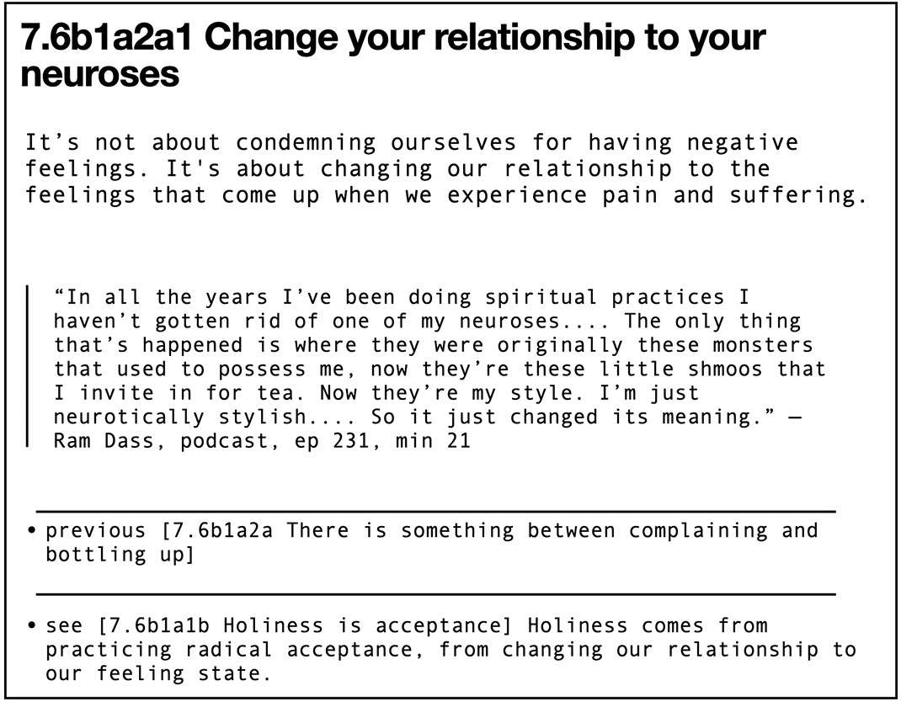{._idgenobjectattribute role=“presentation”}
图45.一个好的主要笔记可以吸引你去写作。
如果我有兴趣写关于这个笔记中捕获的想法，我会从将主要想法复制/粘贴到新文档开始，确保包含标题、引用和来源（你永远不知道是否会需要它）。然后我会跟随笔记中提到的链接，对每个引起我注意的想法重复相同的步骤[(8.2)]。一旦我将所有这些材料准备就绪，我就会开始文章的大纲制作过程[(8.5)]，同时编辑和重写文本以适合适当的语调和节奏。
有时一个想法就是想要动起来，以至于任何试图在单个笔记中捕获它的尝试都会是一个无望的努力。每当我遇到失控的想法时，我必须做出选择：
为了简单起见，我两样都做（图46）。
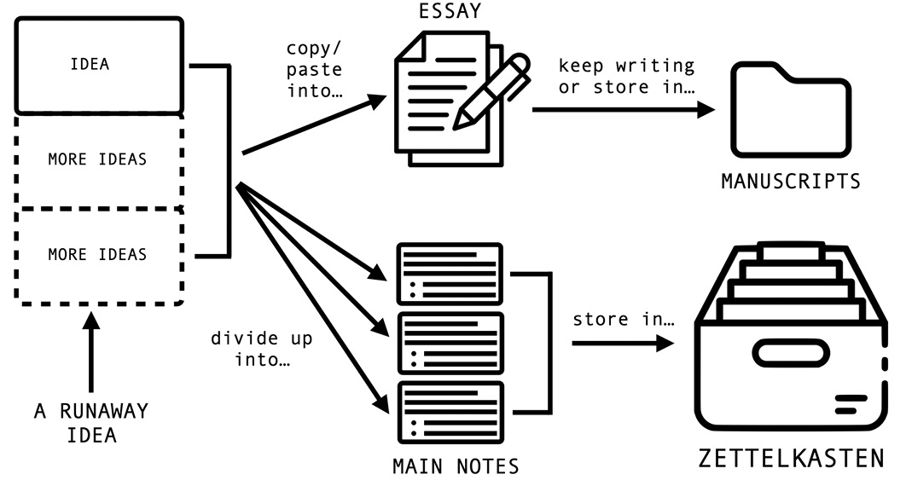{._idgenobjectattribute role=“presentation”}
图46.失控的想法可以被分解为主要笔记，也可以成为更长形式的写作。
总是要利用灵感。如果捕获一个想法变成了写一篇文章，就继续写文章。在你完成文章或从写作中休息后，回去找到那些没有进入你的zettelkasten的想法，按照第三章制定的步骤将每一个转化为主要笔记。
以上所有内容都取决于你在想法之间建立了连接，如将要显示的，这些连接可以（并且希望会）是多样的。回顾第五章中发展的笔记，我们可以看到这是如何工作的。以下是这些笔记的一个部分：
1.2 有许多不同种类的苹果
1.2a 麦金塔苹果原产于加拿大
1.2a1 麦金塔苹果于1870年进入商业生产
1.2a2 麦金塔苹果由约翰·麦金塔发现
1.2b 粉红佳人苹果是一个品牌苹果
1.2c 蜜脆苹果在明尼苏达州培育
上述笔记虽然很少，但为作者提供了至少三个不同的写作方向。为了了解如何做到这一点，让我们从最简单的开始。
如果我想写一篇关于三种苹果品种的简洁文章，而不在每一种上花费大量时间，我会简单地提取那些涉及特定苹果的笔记，忽略其余部分。文章的粗略初始大纲可能如下所示（主要笔记已放在括号中）：
不是一篇引人入胜的文章，但仍然是写作。然而，如果我想深入研究麦金塔苹果，并且只简要提及其他苹果品种，我可能会如下结构化文章：
期望当你开始为写作构建大纲时，想法的排序会发生变化（参见上述注释1.2a1和1.2a2）。你的zettelkasten或你赋予笔记的字母数字ID都不能建立大纲[(5.4:2)]。
第三篇文章，在我看来更具说服力的文章，将探讨”发现”与”培育”之间的区别。通过只关注原始收集中的最后三个笔记，一篇写作可以初步大纲如下：
三篇不同的文章，每篇都源于相同的六个笔记，全部由zettelkasten内建立的关系所告知。[97]
现在，让我们看看如何将上述讨论的一些选项付诸行动。浏览你的笔记堆栈，寻找一个吸引你注意力的标题，最好是正在发展的字母数字序列的一部分。假设你的标题是总结存储在每个笔记内想法内容的陈述，就很容易了解正在发生什么[(3.1:5)]。以下是从我的卡片盒中抽取的一个笔记：
1.8b1a 社交媒体将自己置于人际交往之间
因为我使用folgezettel，我可以在不打开笔记的情况下看到上述内容至少是一个思路链的一部分。以下是在笔记1.8b1a之前的两个笔记：
1.8b “社交调解”是比”社交媒体”更合适的术语
1.8b1 调解是让生活重新呈现给你的效果
以下是跟随它的两个笔记：
1.8b1a1 报刊亭面向更广泛的受众
1.8b1a2 人们有时没有意识到Facebook操控他们的新闻推送
即使不查看任何笔记内部，我也对我可能写的文章类型有了概念。以下是这篇文章大纲的第一稿：
“社交媒体作为调解”大纲
上述是通过匆匆浏览原始笔记字母数字谱系中的笔记创建的初步大纲。注意想法已经以对文章更有意义的方式重新排列。这是第一阶段——大脑倾倒——想法可以快速投入大纲[(8.5)]。然而，我甚至还没有打开任何笔记！探索笔记1.8b的内容，我注意到底部有两个有趣的连接（图47）。
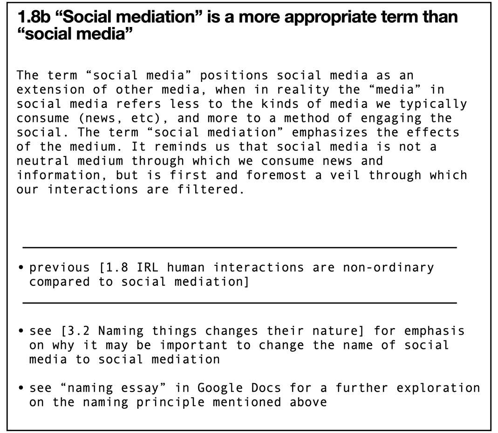{._idgenobjectattribute role=“presentation”}
图47.链接允许想法跨主题连接。
第一个”参见”链接显示了主要想法与存储在我zettelkasten不同部分讨论命名如何改变被命名事物的想法之间的关系。这可能是在文章中纳入的重要想法，因为它为我将”社交媒体”改为”社交调解”的决定提供了分量。此外，还有对存储在Google Docs中的”命名文章”的引用，显然进一步发展了这个想法。我不记得写过这篇文章，但因为我在笔记中提到了它，我有一条面包屑轨迹引导我走向可能对我正在工作的内容至关重要的信息。当我打开笔记1.8b1a1时，更多内容被揭示（图48）。
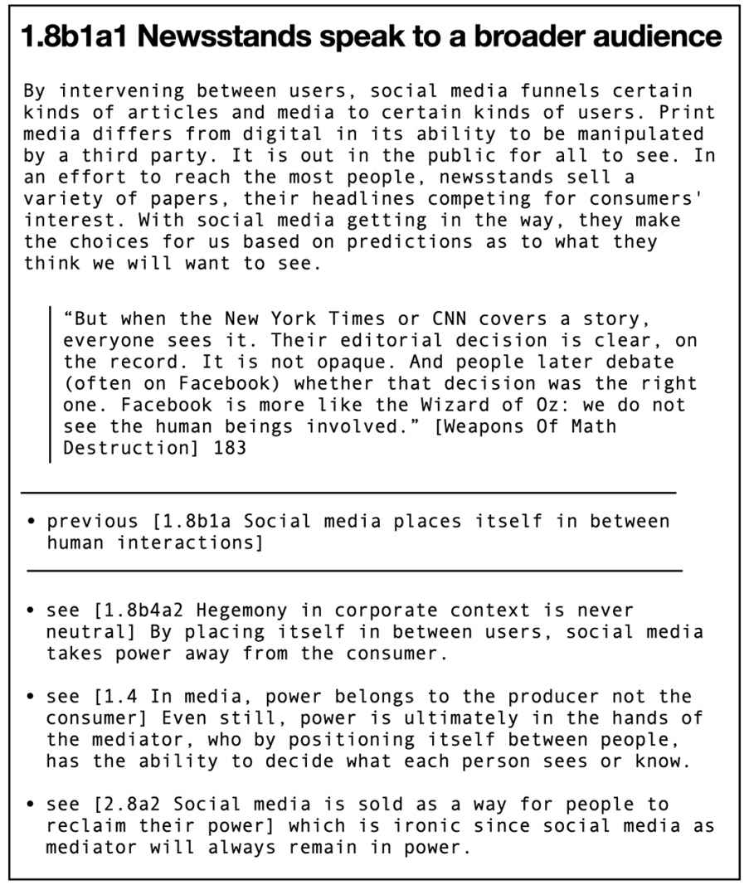{._idgenobjectattribute role=“presentation”}
图48.这些”参见”链接显示主要想法如何向多个方向分支。
如图47所示，有很多内容可以使用。底部的”参见”链接引导我关注与霸权相关的思想（注释1.8b4a2）以及媒体-观众关系中经常存在的扭曲权力动态（注释1.4和2.8a2）。请注意，这些注释以及前一个注释底部提到的那些注释，来自我zettelkasten的不同区域。这就是思想动态性在发挥作用。在不同语境中捕获的各种想法，被重新用于新的思路。最初只是一篇关于社交媒体如何作为人与人之间中介功能的简单文章，现在已经发展成为一篇内容更加丰富的作品。以下是我开始时的大纲，融入了探索这两个注释内部后发现的内容：
“社交媒体作为中介”大纲（更新版）
虽然还有工作要做，但这是一个很好的开始。
本章的所有例子都展示了zettelkasten如何指出写什么。然而，没有一个例子暗示zettelkasten应该为你写作。原因很简单：你的zettelkasten是个糟糕的作家。
你在主要笔记中捕获的想法并不是在任何一篇特定写作的语境中写成的。这些想法需要根据你正在写的主题、作品的整体主题和你选择的语调来构建框架。阿伦斯提醒准作家们避免将笔记复制到手稿中，指出作家应该通过将想法”嵌入论证的语境中”来”[将想法]转化为连贯的内容”。[98] 这是值得遵循的建议。
过去六十年来学术期刊中对zettelkasten的引用反复提到由于对zettelkasten能力的错误期望而导致作品受损。[99] 例如，一篇评论指出一位作者似乎”急于插入她’Zettelkasten’的所有内容”。[100] 另一篇评论认为使用zettelkasten使得”无法识别清晰的思路”。[101] 还有一篇认为某篇作品有”令人不安的具体语境缺失”。[102] 有位作家被说成”将直觉美学判断伪装”成”从zettelkasten任意编造的想法”。[103] 其他人提到写作感觉”像研究生的预备Zettelkasten“，[104] 或具有”Zettelkasten的淡淡气味”。[105] 另一位作家被说成采用”不加思考地使用…那个好老的’Zettelkasten’“，[106] 而一篇评论似乎总结了所有其他评论：”过分依赖Zettelkasten可能会适得其反！“[107] 而且，批评一直持续到今天。
Scott Scheper 2022年的书《Antinet Zettelkasten》是使用zettelkasten写作如何”适得其反”的典型例子。即使在认为这本书有帮助的读者中，对写作的引用也描绘了不同的画面。这本书被批评为”平庸重复”，[108] Scheper”使用完全相同的短语和相同的引用好几次”。[109] 其他读者将其描述为”不稳定的”，[110] 特点是”松散连接的类比；随意放置的轶事；以及没有明显目的的随机材料”。[111] 接近”不可读”的边缘，[112] 一位评论者将其斥为不过是”漫无目的的无用之物”。[113] 当然，Scheper并不孤单，因为被定期赞扬为zettelkasten力量标志的不是Niklas Luhmann的写作。而是他的生产力。
无论是否合理，卢曼同样被指责写作”不必要地复杂、结构糟糕、高度重复、过于冗长且审美上令人不快”的作品。其他人则发现卢曼的写作是”混乱的一团糟……充满了无序和离题的见解，彼此之间联系松散。“甚至连赞扬卢曼生产力的松克·阿伦斯也指出，他的作品存在”试图放入太多内容”的问题，这似乎是对卡片盒使用者的一种常见批评。同样，汉斯·布卢门贝格——另一位卡片盒先驱和卢曼的同时代人——也被指责创作出”在其离题性上令人迷惑……似乎仅仅受到全面传达其极其广泛阅读的欲望驱动”的作品。谢珀也被指责缺乏自我编辑能力，一位评论者讽刺道：“仅仅因为你增加了数量并不意味着你提高了质量。”另一位评论者声称，无论是否准确，谢珀只是”从大量研究中’收集’了大量笔记，没有进行优先排序或编辑，就把所有内容都倾倒到书中。“还有一位读者被多处”离题和无关材料”分散了注意力。
具有讽刺意味的是，谢珀和阿伦斯——其著作《如何做聪明笔记》经常因组织糟糕而在网上受到批评——都赞扬卡片盒能够让写作变得更容易。阿伦斯在多个地方提到卢曼写书时显然的”轻松感”。同样，谢珀告诉潜在读者他们将能够”创作出丰富的作品（没有典型的写作痛苦）。“谢珀声称他自己的书就是他的卡片盒方法正确的”证明”，说虽然他花了七个月时间使用他的”Antinet”，但只需要”三个月就能产出19万字深度研究、详细注脚的内容。“对谢珀来说，快速产出文字的能力，用他的话说，就是”系统的全部意义所在”。
除了不受控制的（且不应得的）傲慢之外，使用卡片盒经常导致糟糕写作的原因之一与碎片化有关，或者如writingslowly.com的理查德·格里菲斯所说，“不连贯的片段能够产生整合思想的错觉”。尽管你已经建立了联系并为每个联系给出了理由，但想法之间的关系必须在你正在创作的作品的语境中重新构建。这意味着重写想法，塑造它们来表达你想要的内容。
通过这种方式，用卡片盒写作更像是”拼贴”而非意识流，作家从看似不相关的想法中创造出连贯性。但是，正如格里菲斯所写，“仅仅因为你从片段开始，并不意味着你应该以片段结束。”有趣的是，“不以片段结束”的更受欢迎的例子之一不是出现在写作中，而是在60年代流行音乐中。
直到1966年，大多数流行歌曲都是以线性方式录制的：按下”录音”按钮，乐队演奏直到歌曲结束。但是，海滩男孩的主要词曲作者布赖恩·威尔逊在他们的巨大流行热门歌曲《好感觉》中做了不同的事情。威尔逊没有从头到尾录制歌曲，而是创作并录制了一系列独立的音乐片段或”模块”，这些模块是他在不同时间在不同录音棚中录制的。然后他使用这些预录制的音乐单元逐个构建歌曲，采用各种音频效果不仅掩盖不同模块中的音调变化，还给整首歌曲带来连贯性。今天，几乎所有非吉他摇滚都采用了这种技术的某些方面。无论是舞厅音乐、嘻哈音乐，还是各种电子音乐，流行音乐越来越多地由音乐模块重新加工成连贯的作品。
从卡片盒中存储的想法进行写作也是以类似的方式处理的。每个想法都是一个独立的模块，当与其他想法连接时，必须经过安排和编辑才能有意义。语义连接组织应该将想法拉入一致。阿伦斯呼吁”将想法嵌入论证的语境中”正是提醒要做到这一点——确保想法合适，通常通过重写它们。这就是我在撰写文章《我如何使用CLOGs组织我的写作文件》时经历的过程（该文章本身被重写以为本书的各个章节提供信息），我从卡片盒中引用了两个笔记并重写它们以更好地适应文章。图49和50显示了我为文章引用的笔记以及每个笔记变成的写作内容。

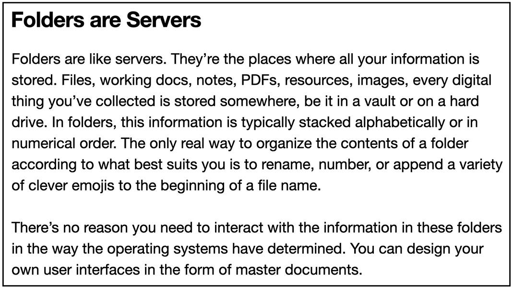
图49. 一个主要笔记（上）转化为写作（下）。
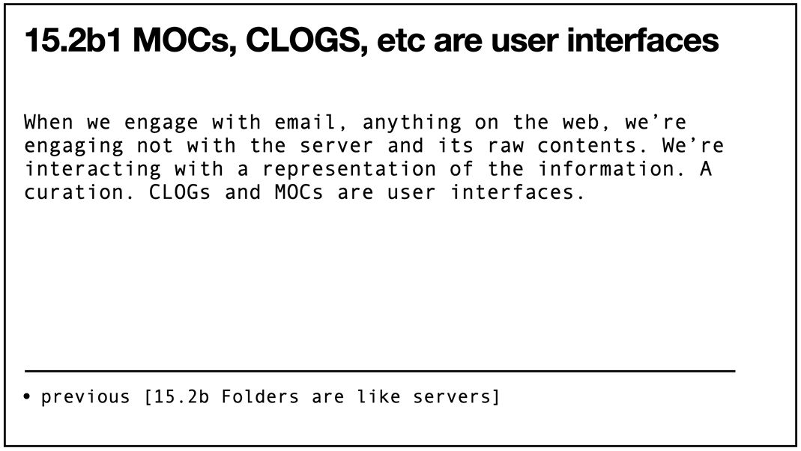
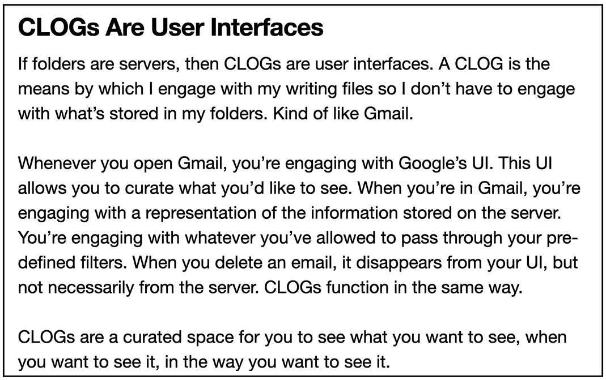
图50. 从主要笔记中提取的想法（上）在开始写作时可以被补充和修改（下）。
为了让这些笔记发挥作用，我不仅改变了文本以更好地适应文章的流程，还编辑了措辞，根据需要添加了新信息片段。在第一个例子中，我添加了关于信息通常如何在数字写作平台侧边栏中组织的文本。在第二个例子中，我添加了对电子邮件作为用户界面的引用，以更好地解释我的观点。在这两种情况下，我都重写了想法以更好地适应我试图提出的论证。
7.5 编辑：剑之道
写作不仅仅是知道应该包含什么内容，更重要的是知道应该省略什么。如上所示，使用卡片盒笔记法的作者有时会被批评为无法（或不愿意）编辑自己的作品，不仅在语法方面，在内容方面也是如此。虽然如何成功编辑作品的指导远超出本书的范围，但这里有一些准则可以帮助你确保只有最重要的内容出现在最终稿中。
我在第一份出版工作的第一天从编辑那里得到的最好的编辑建议是：“删掉第一段。没必要等着作者清嗓子。”
作者经常需要一个助跑来启动写作过程，特别是从空白页开始时 [(8.4)]。这种拖沓和转移经常出现在开头段落中，而由于其在文档中的特殊位置，往往会在过期后仍然停留很久。有疑问时，删掉你的第一段。
书籍的”注释”部分是作者可以偏离主题的地方，这使它成为更有趣的阅读部分之一。如果你有更多要说的，但与眼前的写作不符，请利用书的后面部分。“请允许我岔开话题”很少有足够的善意来保证真的岔开话题。
仅仅因为你能将思路追溯到星际之外，并不意味着你应该在写作中这样做。想法需要赢得它们的位置。只选择那些能增强作品的想法，这可能与那些能增强自尊的想法不同。要知道其中的区别。
总有另一篇博客要发布，另一篇文章或书要写。你今天不用的东西，明天可以用。专注于眼前的内容。只引入需要的内容。
为读者写作
我们一直在实验的所有实践都为我们的写作做了准备：
现在是时候将这些实践导向为读者写作了。
只要你的想法仍然隐藏在视线之外，它们就缺乏只能来自读者参与的实质内容。意义是在社区中创造的。[[127]]将你的作品推向世界，让你的想法能够与其他人的想法实时对话。这就是你的写作如何被定义的方式。在本章中，我们将看四种发布写作的方式，以获得对你的思考以及其他人如何理解你的思考的洞察。
许多人在有字符限制的平台上发布内容来测试或”试探”未经修饰的想法。让我们看看你的卡片盒如何支持这一点。
获得想法反馈最简单（也是最快）的方式是将它们转化为推文、嘟文和其他短篇在线内容形式。图51显示了第11页图6中的主笔记如何可以重新用作典型的单一想法帖子。图52显示了同一个主笔记如何重新制作成投票。
现在，想象一下你想要增加在线存在感，而你的卡片盒中有一千条笔记。如果你停止参与收到的回复，这相当于近三年的每日发布，但显然，你不会这样做。
推特和嘟文(tooting)的好处之一（当然也是主要吸引力之一）是与关注者互动。对你的想法获得即时反馈可以导致有趣的对话，这些对话会挑战或证实你的信念。但是，当对你帖子的深刻回应被捕获并作为主笔记导入到你的卡片盒中时，像Mastodon或Twitter这样的社交媒体平台就成为一个共同创作的环境，持续发帖建立了一个内容创作的反馈循环（图53）。
图53. 对你帖子的回应可以激发新的主笔记。
每当你遇到值得保存的评论时，首先将评论粘贴到新笔记中，确保注明出处并链接回评论，然后将其转化为主笔记。接着，阐述你对所说内容的思考。这将成为笔记中的主要想法。最后，像网络化其他想法一样网络化这个想法，在它与卡片盒中存储的其他想法之间建立连接。
回应评论者也可以为将来更长作品的发展做出贡献。通过跟踪你的思维如何变化或如何聚焦，充分利用这些互动。记录不同的观点和思维过程中的漏洞。支持性评论是激励你继续前进的巨大动力，但分歧可以将你的写作带向新方向，为你提供向尚未被你的论点说服的读者讲话的机会。
关键是要与你的受众保持互动，利用获得反馈的机会，调整和改变你传达思维的方式，以便你始终参与对话。这会增加你的产出并保持其相关性。不要利用主笔记的便利性来”发布”预包装的想法。要参与到话语的混合中。你的卡片盒是创造力的催化剂，而不是替代品。
个人博客往往专注于一个主题或题材。有食谱博客、D&D博客、旅行博客、音乐博客、笔记博客，以及社会评论或”思想”博客。主题博客使得变化帖子长度成为可能，因为博客网站作为题材的容器，类似于长文档。像书的章节一样，长帖子表现得像章节，短帖子像小节，阅读清单像参考书目，后续帖子像尾注。
虽然我在过去二十年中的一些帖子增长到大约三千字，但大多数徘徊在五百到一千五百字之间。如果这是你偏好的帖子长度，一到两个主笔记可以作为一个绝佳的起点，为你的日常博客写作做好准备。
从主笔记创建博客帖子相对简单：
让我们看看下页的图54是如何被用来实现上述所有目标的。
图54. 一个简单的主笔记可以轻松成为博客帖子，如果它激发你写作的话。
在这个简单（而简短）的笔记中，有三件事我会考虑开始创作我的帖子：
图55显示了我想出的内容。
图55. 从一个主笔记写成的博客帖子。
写这篇文章的第一个任务是将主要想法发展成更有实质内容的东西。我从依纳爵辨别(Ignatian discernment)的角度来框定它，因为我熟悉这种做法，而且，在这个假设的博客帖子案例中，评论者询问了这个问题。帖子底部的”PS”来自主笔记底部的”见”链接，给我一个在后续帖子中发展这个想法的地方。但是，根据读者的反应，第二天的帖子可能会走向不同的方向。
与推文一样，盲目地将主笔记作为博客帖子发布会让你的受众感到被忽视。保持互动；不仅出于对读者的尊重，还因为互动提供了基于卡片盒中尚未找到的内容创建帖子的机会。任何包含你想要跟踪的想法的评论都可以用来创建新的主笔记（图56）。
图56. 帖子上的评论可以重新加工成新帖子并转化为新的主笔记。
图56中图表的上半部分显示了你博客上公开发生的一切：编辑过的主笔记作为日常帖子上传；帖子被评论；评论被纳入后续帖子。下半部分显示了后端，即幕后进行的构思和网络化，其中评论和新想法被带入卡片盒。在这里，反馈循环的功能类似于推文，其中输出导致互动；互动导致输入；输入导致输出。
在你创建zettelkasten的同时，所有的写作都可以采用自上而下或自下而上的方式开始[(7.2)]。在自上而下的方法中，写作者从一个预定的主题开始，这个主题由从zettelkasten中提取的相关想法支持。例如，推文和博客主题可以提前制定，然后从zettelkasten中检索副本和源材料来支持它们。相反，自下而上的方法允许你在zettelkasten中发现的想法和联系来指导整个过程。在这种情况下，写作者从他们所拥有的开始——与特定主题相关的想法——并让笔记决定下一篇作品。
对于长篇写作，这个过程是自上而下和自下而上方法之间的动态相互作用，写作者经常在两者之间摆动，根据写作的不断发展需求调整他们的策略。写作者可能最初采用自上而下的计划，概述特定的主题和结构，却发现在与存储在slip box中的想法互动的过程中，一种更加自下而上的探索性方法占据了主导地位。相反，写作者可能从自下而上开始，允许想法网络揭示一个主题，然后一旦主题焦点确定，就转向自上而下的方法，从zettelkasten中寻找想法来进一步支持该主题。这种摆动反映了写作过程中固有的灵活性，这些方法之间自然的起伏变化有助于产生更丰富和更细致入微的最终结果。
大多数写作都是自上而下教授的。让我们尝试朝相反的方向工作，因为zettelkasten非常擅长推动我们这样做。
从你的zettelkasten中取出一个笔记，最好是在至少一个思路中有网络连接的笔记。利用你的字母数字ID和索引，以及你的hub和结构笔记来定位你已经发展的想法。
探索你在笔记中包含的想法与存储在zettelkasten其他地方的想法之间建立的连接。如果你一直在建立想法之间的关系，你应该有几个不同的方向可以选择。确定哪个思路让你感兴趣，并跟随其笔记序列。如果你遇到死胡同，考虑使用你的关键词索引来改变一下。有时候，一个与其他笔记没有明显关系的笔记正是让突触活跃起来的东西。
一旦你找到了你想要发展的思路，将构成它的想法粘贴到一个新文件中。这是你将要使用的原始材料。
开始将你带入文档的内容组织成既连贯又有说服力的东西。在典型的非虚构写作中，关键点和概念首先在作品开头部分概述。任何涉及这两者的笔记都可以移到页面顶部。解释和扩展前面呈现内容的想法可以复制到下面。寻找既支持又挑战你思考的想法。考虑两者如何共同作用来创造更有活力的写作作品，并在你的文档中记录这些考虑。你永远不知道是否会需要它们。
一旦你有足够的副本开始写作，并将其组织成某种连贯的样子，重写从你的zettelkasten粘贴的想法，使其更好地适应正在发展的作品，编辑语言以支持和与你试图传达的信息和语调保持一致。解释你在想法之间建立的连接。注意你思考中的任何空白或需要进一步发展的地方，并写入你认为需要的内容。
一旦你对作品有了感觉，考虑一下它应该多长。它会是一篇短文章，几分钟内容易消化(500-2000字)吗？还是会是更实质性的东西(超过10,000字)？决定长度将决定你如何处理下一步。
当你写作和编辑你的作品时，新想法将不可避免地浮现。根据你希望作品的全面程度，你可以将它们带入你的写作中，或将它们转换为主笔记。如果需要支持或澄清，研究你的新想法，并返回步骤4和5来完善你的写作。
关于何时完成一篇作品没有规则。但是，有惯例。我的大部分长篇写作都经历了一系列繁重的文案编辑和重组阶段，最终让位于校对形式的更精细编辑。根据经验，当我能够阅读整篇作品时几乎没有校对修正，我认为一篇作品接近完成。在那时，我认为它”足够好用于政府工作”，并将其上传到网上。
与任何写作作品一样，你总会发现一些需要现场发展的东西。正如Luhmann所说，“理论出版物不是简单复制slip box中已经能找到的内容的结果。”期待在你完成上述步骤时写作和寻找新材料，总是返回重新组织、重写和必要时编辑。
写书的过程遵循写文章和散文的过程。无论是从自下而上还是自上而下开始，想法及其连接都是从你的zettelkasten中获取，重新组织、重写和编辑以针对你的主题。新想法通过新研究得到加强，新研究本身也被重新组织、重写和编辑。但是，当涉及到写书时，还有一个额外的内容来源可以被引入作品中。
写书永远不应该从空白页开始。小说和非小说作品往往是之前写过的文章、散文、连载内容、博客、采访和讲座的产物；甚至社交媒体帖子、论坛评论和推文也可以融入其中。事实上，书籍往往更多的是策展而非宣泄。
有很多书籍都是从较短的内容发展而来的例子。Barbara Ehrenreich的Nickel and Dimed；David Graeber的Bullshit Jobs；Jon Krakauer的Into the Wild都是从较短的散文发展而来。Hunter S. Thompson的Fear and Loathing in Las Vegas最初只是为Sports Illustrated写的”250字图片说明”。Matthew Inman的How To Tell if Your Cat is Plotting to Kill You始于一个博客。Justin Halpern的Sh*t My Dad Says始于Twitter信息流。一些最著名的精神类书籍都是编辑过的讲座和采访。Eckhart Tolle的The Power of Now；Pema Chödrön的When Things Fall Apart；Chogyam Trungpa的The Myth of Freedom；Michael Singer的The Untethered Soul；Charlotte Joko Beck的Everyday Zen；以及Ram Dass的Paths to God都是根据之前处理过的材料精心制作的。
你目前正在阅读的这本书融合了许多文章、散文、博客帖子、论坛评论和课程大纲，它们被重新组织成本书的不同章节，更不用说来自我的zettelkasten的笔记以及之前为上述所有内容提供信息的笔记。所以，如果写书看起来令人生畏，请安心。只要你一直在持续写作较短的作品，你拥有的素材比你意识到的要多。
生产力教育家和作家Tiago Forte将从笔记和之前的作品中提取内容的做法称为”从丰富开始”。他写道：
不要坐在空白画布前试图想出一些巧妙的东西，而是通过筛选大量有趣的想法、见解和灵感来开始你的创作过程，你可以在此基础上构建。[132]
Forte称这些起点为”中间包(intermediate packets)“，或者如Ramses Oudt所说，”小型可交付成果…专注于为未来项目的可重用性。“[133] 这正是zettelkasten可以提供的。你永远不需要从赤字开始。事实上，通过使用zettelkasten，你下一本书的写作已经开始了。
## 8.5 大纲是活的（且变化的）文档
当然，从丰富开始并不一定等同于以出版的书结束。你需要对你所捕获的所有内容做些什么，才能使其成为实质性的东西。大纲是为书长项目赋予形状的最常见方式之一，将独立的想法转化为连贯的散文。就像写作本身一样，它也会被处理和发展。
大纲是一个活文档，松散且可变，在项目持续期间与你的写作并行。它随着你的进展而变化。我的大纲通常会经历四个阶段：
让我们更详细地看看每一个阶段。
假设我还没有为我正在写的主题制作结构笔记，我的大纲将从大脑倾倒开始；首次尝试列出我能想到的与项目相关的所有主题和想法。这种初始构思让我感受到我的思考现状。下面是我的书Sitting With Spirits的早期大脑倾倒：
SPIRITS BOOK OUTLINE (2019)
这个非常简短的大纲是在床上用手机写的，刚醒来时。快速而简单。当时我心中的书——一本关于灵魂工作的指南——最终完全不同。大脑倾倒阶段是一个开始的地方，当你完成时，成品可能看起来很不一样。
就像fleeting和reference笔记一样，大脑倾倒阶段是快速捕获想法的时间，这样你现在可以忘记它们，稍后再回来。但是，如果你希望进一步发展你的书，你需要更多文字。说更多阶段是我为每个章节写想法的时候，添加小标题或几句话来解释我目前的想法。这是同一大纲的第二次处理：
SPIRITS BOOK OUTLINE (2019)
Introduction（介绍）
PART 1: INNER WORK（第一部分：内在工作）
Chapter 1: What is a spirit?（第一章：什么是灵魂？）
Chapter 2: Making yourself available（第二章：让自己准备好）
第二部分：外在工作
以上内容可能看起来与第一次迭代相似，但将书分为两部分在焦点上产生了重大转变。这本书不再是一本操作指南，而是转向讨论内在和外在精神工作之间的关系。在接下来的几天里，我添加了更长的文本块，其中一些是新的，由大纲触发。其他文本则是从我的zettelkasten中提取的。在这里，如同我所有的大纲一样，我开始写这本书。
我在大纲中添加的写作越多，它就变得越难以处理，超出了自身的范围。一旦发生这种情况，我就将不同的部分分割成单独的章节文件。这个短暂但关键的阶段启动了来回阶段。
如果你愿意让自己沉浸在写作过程中——允许想法以及你在它们之间建立的关系引导你到意想不到的地方——你的大纲会经常发生变化，而且变化很大。图57显示了我在这个阶段大纲过程的典型轨迹。
在开始时，我的大纲作为指导，提醒我要写哪些章节以及以什么顺序。在这个早期阶段，我写作是为了更好地了解每一章的内容。然而，我在每一章中添加的想法越多，我就越意识到某些主题或思路需要重新组织。这不可避免地改变了作品的结构，将动态转向写作指导大纲的方向。但是，这种转变不会持续很长时间。大纲再次指导我的写作，直到写作迫使我改变大纲。这种”大纲指导写作”与”写作指导大纲”的循环一直持续到项目结束，此时重点完全转移，写作指导书籍的组织。在这一点上，大纲进入休眠状态，因为不再需要它。我写作的内容现在主导了这个过程。也就是说，直到写作完成，大纲重新出现作为目录：
注意最终书籍的组织和主题与开始时的差异。我放弃了第一部分和第二部分的区别，后者的大部分内容压缩为一章，而第三至第五章是全新的。第一章从原始大纲的第二章中提取出来，发展成独立的内容。早期大纲中的两个附录都被新的附录替换。你的初始头脑风暴与最终目录的对比将隐藏数千小时的心理体操。拥抱写作过程的流动性，否则就会被它吞噬。
来回阶段是大部分工作将要进行的地方，持续数月或数年。这可能是一个动荡的时期，焦点会有巨大转变、重大编辑，以及组织、框架和流程的根本性变化。来回阶段是书籍接受测试的地方。如果它能经受住起伏，这本书很可能会问世。
无论你正在写作的长度如何，最重要的是开始写作，到达一个你可以忘记zettelkasten和许多你可能想要融入作品的附加想法的地方，专注于眼前的内容。一旦你将想法从zettelkasten中提取到你的文档中，你可以也应该以任何方式和出于任何理由操纵和改变它们。没有规则。想法可以被编辑、重新框架和质疑。重写你的想法以符合你正在进行的项目的独特性，这是将笔记倾倒到文档中并称其为”完成”与使用你的笔记作为深思熟虑和连贯工作的源材料之间的区别[(7.3)]。
最终，写作必须优先。你需要先学会如何成为一名作家，其次才是笔记制作者。再多的”好想法”也救不了你正在写的东西。让写作告诉你它想要成为什么，你就会知道需要包含什么内容。
为读者写作（并做好它）既关乎创作过程，也关乎管理过程。但是，并非所有写作都需要相同程度的组织。我的写作范围可以从文章到杂志，从漫画到博客文章，从宣言到书籍。我管理每一项的方式必须是灵活的，设计得能够随着每篇作品的复杂性而扩展。这确保我的方法保持所需的轻量化或全面性。但是，在确定我要纳入多少复杂性时，还有另一个因素，这个因素往往超越长度。在本章中，我们将探讨如何基于两个区别来管理写作：有截止日期的写作和没有截止日期的写作。
大多数作家在没有外部强加截止日期的情况下工作。独立博主和散文家、杂志制作者、“流浪学者”、内容创作者，以及任何致力于自出版的人，往往按照自己的时间表写作，如果他们按时间表写作的话。
我工作的每一篇写作都由两个文档支持：日记和创作日志。日记范围很广，包括我完成的写作记录，以及与我的创作工作无关的任务和想法。创作日志仅用于跟踪我写作的进展。这两个记录保存系统协同工作。
日记是我工作日的中心枢纽。我在这里记录当天的活动，决定要从事什么写作，并对第二天继续工作的内容提出建议。典型的日记条目如图58所示。
{._idgenobjectattribute role=“presentation”}
图58.日记是我日常活动的中心枢纽。
下半部分包含当天活动的记录，我还在其中捕捉对所发生事情的任何想法。这种记录和评论的风格被称为”间隙日记”，这是Tony Stubblebine开发的一种技术。[134]“间隙”一词指的是事物之间的空间，在这种情况下是从一个任务或项目转换到另一个任务或项目之间的空间。在那个空间里，Stubblebine建议我们记录我们完成了什么，我们对完成它的想法，我们即将要做什么，以及我们对做这件事的想法。根据Stubblebine的说法，写下我们所做的事情和对下一步要做什么的想法”清空我们对上一个项目的大脑”，为”为我们的下一个项目制定最佳策略提供空间”。这是一种让一个认知周期的动量得以解决的方式，这样你就可以开始另一个周期。[135]
神经科学家和作家Anne-Laure Le Cunff是个人知识管理领域备受尊敬的声音，她建议额外记录非工作活动，比如陷入”Twitter黑洞”[136]或者在我的情况下，YouTube螺旋式下降。Le Cunff表示，记录这些”拖延休息”有助于我们意识到它们发生的频率和持续时间。如果你试图更好地理解你的日常工作流程以及休息可能适合的地方，这可能特别有帮助。毕竟，一个人的拖延是另一个人的认知重置。
我日记条目的底部帮助我记住我进行的对话和所说内容的内容（比如承包商通过电话给我报价时），我完成的任务（比如我付账单的日期），或我工作的最后一个写作项目。这些记录的信息片段多年来已被证明是无价的，特别是在通信领域。但是，这并不是我在日记中捕捉的全部内容。
在顶部，我写下对这一天的最终想法，并对我下一步应该工作的内容提出建议，这让我能够结束我一直投入的任何任务或思考。在”一天结束检查”中，我写作时就像在和别人说话——我未来的自己——所以文本感觉个人化且相关[(3.2:2)]。[137]从这里我跳出日记，进入创作日志。
虽然我的日记告诉我要从事什么写作，创作日志告诉我如何去做。这是我记录进展、对需要关注事项的想法以及对下一次写作会话要工作内容建议的地方。图59显示了我用于文章”如何在你的Zettelkasten中使用Folgezettel”的创作日志的（非常小的）一部分。
{._idgenobjectattribute role=“presentation”}
图59.我需要了解的关于我写作的一切都可以在创作日志中找到。
“对他人”和”对我”
目的下方的笔记部分是创作记录中最活跃的区域，通常用于记录三种类型的评论：
记录我做了什么以及何时做的，让我了解写作的进展情况。关于需要关注内容的想法可以涉及写作的任何方面，无论是语调、素材、特定段落、不合适的引用、关于我认为这篇文章是否会受到好评的想法，还是我是否需要澄清我的目的。最后，我给出建议，指导我在下次写作时应该专注于文章的哪个部分。这些元素中的每一个都让我能够重新投入任何写作中，无论离开它多长时间，都能从上次停下的地方继续。
如果您同时进行大量写作工作（我推荐这样做），请考虑将处理同一主题的所有创作记录存储在单个文件中（即，处理PKM文章的创作记录放在一个文件中，关于灵性的放在另一个文件中）。这样做将允许您快速浏览多个记录，根据您倾向于深入研究的主题，了解什么似乎最有趣。
## 9.3 日记和创作记录如何协同工作
典型的写作日开始于打开我的日记并阅读前一天的行动记录。这给了我前一天如何与当前一天相关的背景，如果还有什么我需要做的事情，这会唤起我的记忆。然后我查看”一天结束检查”，寻找关于我应该做什么以及为什么的任何建议。如果推荐一篇写作，我会打开它的创作记录，回忆我前一天做了什么，考虑关于从哪里继续工作的任何建议。然后我打开文档，要么从头开始阅读，要么简要浏览进行重大编辑的任何区域。最后，我找到我要工作的部分，开始我的写作时段。
当写作时段完成时，我在创作记录中记录我做了什么，哪些区域仍需注意，以及我下次应该工作的部分。然后我回到我的日记，记录我完成时段的时间，关于时段进展如何的简要想法，如果我计划第二天继续工作这篇文章，我会在”一天结束检查”中提出建议。
我在每个工作日都以这种方式继续，直到写作完成并且文章已发布。
上述做法对于时间安排较松散的创意工作是足够的。但是，有截止日期的写作，即使是自己设定的，通常需要”任务导向”的项目管理，这与上述方法密切配合。
## 9.4 写作的任务导向项目管理
顾名思义，“项目管理”是以项目为中心的。您定义一个想要完成的项目，收集必要的资源和工具，然后着手完成项目。当然，缺少的是任务。任务是实际完成项目所需要的。正如David Allen所写，你不做项目。相反，你做与之相关的”行动步骤”。[139] 任务导向的项目管理不以项目为中心，而是以完成任务为中心，当所有任务都完成时，就实现了项目的完成。
以下是我在任务导向项目管理系统中采取的步骤，对于我正在进行的任何项目都是相同的，无论是写作还是其他：
让我们详细看看每一个。
如上所述，写作项目不是要做的事情。它是用可操作的语言写出的明确定义的目标。当涉及到有截止日期的长篇作品写作（如一本书）时，项目往往与较小的中间里程碑相关联。比如：
上述每个项目都需要多个工作时段，都有结束日期，[140] 并且都由任务组成，当这些任务被勾选时，将标志着其完成。项目以其主动形式命名（即，“设计封面”而不是”封面设计”），这让我能够看着项目标题就知道我想要完成什么。
为了本章的目的，我们将使用与本书相关的项目之一——“写第6章”——其截止日期是2023年10月6日。
一旦您定义了写作项目，列出所有您能想到的可能导致其完成的任务。起初，大多数任务在范围上是一般性的，通常是您过去在类似项目中必须做的相同事情：
+————————————————————————–+———————–+
|=========================================================================|=======================| | - 从zettelkasten中提取所有笔记到写作文档 | | |————————————————————————-|————————| | - 检查文章链接是否正确 | | |————————————————————————-|————————| | - 明确资料来源和引用的使用方式 | | |————————————————————————-|————————| | - 添加章节标题 | | |————————————————————————-|————————| | - 组织笔记/内容使其连贯 | | |————————————————————————-|————————| | - 进行最终通读 | | |————————————————————————-|————————|
在这个阶段，这些任务很少或几乎不会按照需要完成的顺序列出。
接下来，为任何可能的任务设定”执行”日期，并相应地组织它们。执行日期是推荐完成任务的日期，不同于截止日期，后者表示项目必须完成的日期。执行日期可以并且会发生变化。截止日期往往定义得更加严格。下面的执行日期清楚地展示了我的时间安排是如何制定的：
|————————————————————————-|————————-| | 撰写第6章（截止日期10/6/23） | 执行 | |=========================================================================|========================| | - 从zettelkasten中提取所有笔记到写作文档 | 9/18 | |————————————————————————-|————————-| | - 检查文章链接是否正确 | 9/18 | |————————————————————————-|————————-| | - 添加章节标题 | 9/18 | |————————————————————————-|————————-| | - 组织笔记/内容使其连贯 | 9/18 | |————————————————————————-|————————-| | - 进行最终通读 | 10/3 | |————————————————————————-|————————-| | - 明确资料来源和引用的使用方式 | | |————————————————————————-|————————-|
要确定初始执行日期，需要查看项目的截止日期以及你的日程安排，考虑周末和假期，以及任何可能阻止你进行项目工作的冲突任务或要求。最容易预测的执行日期出现在项目的开始和结束时。如果你不确定执行日期，就留空。
当你开始这些初始任务时，其他任务不可避免地会出现。这些新任务通常涉及撰写新章节、编辑旧章节，以及理清你从zettelkasten中提取的笔记之间的联系。这类任务的示例已添加到列表中并设定了执行日期：
|——————————————————————————————————————-|————————-| | 撰写第6章（截止日期10/6/23） | 执行 | |===================================================================================================================|========================| | - 从zettelkasten中提取所有笔记到写作文档 | 9/18 | |——————————————————————————————————————-|————————-| | - 检查文章链接是否正确 | 9/18 | |——————————————————————————————————————-|————————-| | - 添加章节标题 | 9/18 | |——————————————————————————————————————-|————————-| | - 组织笔记/内容使其连贯 | 9/18 | |——————————————————————————————————————-|————————-| | - 决定[3.1a2a 收集者谬误不是由频率决定的]是否适合这一章 | 9/19 | |——————————————————————————————————————-|————————-|
|
||
|
9/22 | |
|
||
|
||
|
||
对写作项目的构思可能跨越数月甚至数年。当资源出现时，随时收集它们，让材料的积累启动写作过程。我在任何写作项目中需要的大部分资源都来自以下地方：
以书面文本或链接形式出现的资源通常会放在三个地方之一：我的任务管理器/待办事项清单、大纲或文档中，这取决于我处于流程的哪个阶段。例如，如果有一篇我还没有阅读或仍需标注的文章，我会在任务管理器中放入链接：
| 任务 | 执行 |
|---|---|
|
|
如果我处于大纲的”头脑风暴”或”详细阐述”阶段，那么我会将资源带入大纲[(8.5)]。但是，如果我的大纲已经分解为单独的章节，并且我已经开始大量写作，我会将资源带入它们各自的部分。
我热爱写作。我也热爱编辑。我可以很容易地每天花十个小时做这两件事。但是，除非有特定的理由继续推进，我通常会抑制提前的冲动，尽可能只做今天的任务。[141] 这并不意味着我每天只处理一个项目。尼克拉斯·卢曼(Niklas Luhmann)同时处理多个手稿，这使他能够避免写作”阻塞”。[142] 以任务为中心的系统，我们只处理今天的任务，使得同时处理多个项目变得容易，通过启动原本会拖延等待的项目来提高产出，并提供各种创造性活动让自己参与。例如，我不必只处理与”写第6章”相关的任务。我也可以开始处理与”设计封面”相关的任务，引入使我的工作负载多样化的任务：
| 任务 | 类型 | 项目 | 执行 | | |
|---|---|---|---|
|
|||
|
|||
|
|||
|
|||
|
我倾向于在同一天安排类似的任务，以及那些可能需要不同努力程度的任务。类似的任务让我能够保持在特定的工作流程中。需要不同努力程度的任务让工作日更加动态。例如，从zettelkasten中获取笔记，确保它们组织得条理清晰，并确保引用链接正确，这往往是专注性工作。另一方面，添加章节标题则更加随意。寻找封面设计灵感并进行初始布局则完全是创意性工作。
六个任务，两个项目，一天时间。工作方式有很大的变化。
以任务为中心的项目管理系统的最后一步，在很多方面都是最重要的，它把我们带回到本章的开始。在每次写作会话结束时，我会在创意日志中记录我做了什么，在哪里停下，以及在下次会话中希望将工作引向什么方向，把最新的笔记放在顶部。然后，我在每日日记中记录第二天想要从事哪个项目以及原因。这样做对于我是否真正参与到我试图完成的项目中产生了重大影响。
管理项目没有单一的系统。上述信息旨在帮助你开始认真对待写作。与其让写作变得滑溜而遥不可及，只有在灵感偶然降临时才偶尔发生，不如利用你可用的组织和管理项目的工具和方法，将灵感引向你。
本书中介绍的系统为你建立自己的写作实践提供了基础。对于那些需要实践方法的人，我试图给出规范性指导，详细说明如何设置、使用和维护基于纸张或数字的zettelkasten。对于那些更偏好非干预方法、有活跃写作实践或只想更好地理解他们已经使用的zettelkasten的人，我倾向于概念、方法论以及为什么我们做我们所做的事情的讨论。我希望所有读者现在都能做出明智的选择，了解如何最好地将zettelkasten整合到他们的写作实践中。
无论你属于哪一类——我假设你们中的许多人都介于两者之间——我希望我已经表明，写作远比在页面上条理清晰地组织优美词汇要复杂得多。它始于在头脑中表现的想法，转录成快速、转瞬即逝的捕获，然后转化为在更大的想法网络中动态连接的有用笔记。这些想法被重新加工成写作，然后重新整合回系统中。简而言之，写作比写作更宏大。宏大得多。
所有已发表的写作都是我称之为”创意三角”的一部分。你读到一些有趣的东西，产生想法，通过写作理清这些想法，然后发表你的写作供他人阅读。然后，读者阅读你的写作，产生他们自己的想法，将这些想法通过写作理清供他人阅读。就这样周而复始。阅读、思考、写作、阅读（图60）。
{._idgenobjectattribute role=“presentation”}
图60. 创意三角。
我在本书中详述的写作系统，虽然针对个人和个人实践，但旨在让你在这个更大、更具共同性的创意系统中找到方向，这里的重点是与其他作家、读者和全球创意作品经典进行互动。在这里，你的想法有机会影响和被他人思考所影响，重新定向叙述，重新设计概念框架，或者，取决于你的动机，发起一场运动。
这并不意味着创造力三角形是一个完全友好的地方。参与任何社区都很少是容易的。读者，如果你能找到他们，可能对你的作品不感兴趣或持轻视态度。他们可能会挑战你或贬低你的写作。即使是像个人知识管理这样看似无害的场景，也可能有自己的心理负担和令人分心、耗时的关于细节的辩论。因此，你有时可能会感到沮丧，想要带着你的想法回家。但是，尽管发表你的想法可能并不总是感觉有回报，但它总是会有启发性。
如果你愿意参与创造力三角形，你将比”把一切都留在心里”更多地了解自己的想法和信念。你将获得关于你相信什么，以及你的信念如何被他人理解的宝贵见解。这将使你能够完善你说什么和如何说。你将学会区分给你带来快乐的写作和不值得花时间的写作。你将了解人们对哪种写作反应良好，而哪种写作会被忽视。你还将学会对于哪种写作这很重要，对于哪种写作这不重要。所有这些信息将影响你从世界中吸收什么，什么将成为你卡片盒的一部分，以及你将来会写些什么。
这就是说，你将有选择。通过使用本书中概述的系统和这里描述的更大的社区系统，你将能够决定如何参与更大的作家和思想社区。你将不再怀疑是否是一个作家。在点击最新文章的”发布”后，你就会知道。你是一个作家。
以下是一些没有写入书中的我收到的更常见问题。
卡片盒是第二大脑吗？
不是。第二大脑是全面的。它们意味着包括会议笔记、驾驶方向、朋友的生日、捕获的想法、商业想法等等。卡片盒仅由想法组成。因此，它不是第二大脑。
卡片盒会提高我的生产力吗？
也许。不可否认卡片盒增强创造性输出的能力。根据我的经验，如果你执行本书中布置的系统，你将写得更多更频繁。但是，你必须执行系统。
卡片盒会让我成为更好的作家吗？
也许。更频繁地写作确实可以帮助磨练你的写作技巧。但是，卡片盒不能替代阅读他人作品、获得对自己作品的反馈、与其他作家交往，以及付出实际成为更好作家的努力。不要把生产力误认为是熟练度。
大卡片盒比小卡片盒更好吗？
不是。Johannes Schmidt指出，卢曼卡片盒的价值不是来自它的大小，而是来自卢曼如何使用它的内容。你不需要一万张笔记来写一本甚至十本书。大的卡片盒也不等于更好的思维或更高质量的写作。你的卡片盒的价值取决于它帮助你做你想做的事情的能力。
卡片盒不就是一堆混乱的笔记吗？
不是。卡片盒是一个非层次化的想法网络。起初，你可能觉得系统是混乱的。但是，随着时间的推移，你会看到使用卢曼式卡片盒是顺势疗法的。我们与混乱合作来显现清晰。
卡片盒是一种过时的笔记形式吗？
不是。卡片盒是一种不断发展的思想工作和写作方法，可以在各种不同的媒介中重新想象。
卡片盒是写作工具还是思考工具？
两者都是。虽然世界上一些最著名的卡片盒被作家用来服务他们的写作，但卡片盒也可以在没有写作作为最终目标的情况下使用。
主笔记需要是”原创想法”吗？
是也不是。虽然当卡片盒包含更多你自己的想法而不是他人的想法时，使用卡片盒进行写作效果最好，但这些想法不必是”新颖的”或”原创的”。捕获你的想法，让它们之间的连接揭示什么是原创的。
尼克拉斯·卢曼制作”原子笔记”吗？
不完全是。卢曼的笔记充其量是原子式的。简洁，但不受限制。
我如何找到我的笔记？
很容易。很容易。使用中心笔记、结构笔记和索引，以及字母数字ID和链接来找到思维链和特定笔记。如果你为你的卡片盒使用数字平台，你也可以搜索关键词和短语来找到你要寻找的内容。
我应该把我的旧笔记带入我的卡片盒吗？
我不会。许多人带着以前捕获的想法的缓存来到卡片盒，可以理解的是，他们想把这些转换成主笔记。我的建议是不要那样做。重新开始，只在需要时带入你的旧笔记。
我应该有两个卡片盒——一个用于个人使用，一个用于我的学习吗？
这取决于情况。你想要看到互动的任何想法都应该在同一个卡片盒中。
我应该花多少时间制作主笔记？
需要多长时间就多长时间。我可以在每个笔记上花费一到十分钟不等。花费更长时间似乎违背了允许想法的价值由它们彼此关系定义的目的。
如果我暂时不使用我的卡片盒，这样可以吗？
可以。
Schmidt, J. K. (2016). Niklas Luhmann’s Card Index: Thinking Tool, Communication Partner, Publication Machine. In A. Cevolini (Ed.), Forgetting Machines: Knowledge Management Evolution in Early Modern Europe (pp. 287–311). Brill.
虽然尼克拉斯·卢曼的卡片盒系统包含两个主要部分——一个用于主要笔记，另一个用于参考笔记（见阿伦斯）——但最终用于存储不同类型笔记的分隔数量取决于用户。
ZK 2: 9/8a1。（在这里和其他地方，“ZK 2”指的是卢曼的第二个卡片盒系统，包含大约六万张笔记。冒号后的字母数字指的是笔记编号。有关卢曼所有数字化笔记的集合，请参见 https://niklas-luhmann-archiv.de/。
ZK 2: 9/8
为了避免读者阅读关于系统理论的冗长论述，我决定不提及”平衡”和”强化”反馈循环。不熟悉这些概念的读者最好阅读多奈拉·梅多斯的《系统思考》，以及路德维希·冯·贝塔朗菲的《一般系统理论：基础、发展与应用》。这些以及无数其他著作（包括尼克拉斯·卢曼的作品）不仅会提供深刻见解，而且如果能比我在本书中更严格地应用于写作实践，将会非常有益。
许多这些困惑源于对桑克·阿伦斯著作《如何做聪明笔记：一种简单技巧提升写作、学习和思维——面向学生、学者和非虚构图书作者》的误读和其中的不一致性。有关这些困惑如何产生的简要介绍，请参见 Doto, B. (2022, October 12). What is a Permanent Note? (Correcting Some Common Misunderstandings). https://writing.bobdoto.computer/what-is-a-permanent-note-correcting-some-common-misunderstandings/
Allen, D. (2002). Getting Things Done: The Art of Stress-Free Productivity. Penguin.
Brown, S. (2021, April 27). Where Did Writing Come From? Getty. https://www.getty.edu/news/where-did-writing-come-from/
Baecker, D., & Stanitzek, G. (Eds.). (1987). Niklas Luhmann—Archimedes und wir: Interviews. Merve Verlag.
Ahrens, S. (2017). How to Take Smart Notes: One Simple Technique to Boost Writing, Learning and Thinking—for Students, Academics and Nonfiction Book Writers. CreateSpace Independent Publishing Platform.
子弹日记法、间隙日记法、反思日记法、感恩日记法、晨间页面、划线法和熊猫计划器只是众多方法中的几种。
第6章详细讨论了情境化连接的重要性。另一种观点请参见 Fast, S. (2021, July 20). RE: Backlinks Should Be Context-Rich. https://zettelkasten.de/posts/re-backlinks-should-be-context-rich
Cruz, R. N., & Rezende, J. (2023). Note-writing as an intellectual craft: Niklas Luhmann and academic writing as a process (V. Ramos, Trans.). Pro-Posições. v. 34, (pp. 1–23). Also, Metropolitan State University of Denver. Writing as a Thinking Tool. https://www.msudenver.edu/writing-center/faculty-resources/writing-as-a-thinking-tool/
此外，对话、辩论、音乐会以及任何形式的参与都可以作为主要笔记的素材来源。
术语”引用”在整篇文章中都以最广泛的意义使用，即”引述”或”提及”。参见 Merriam-Webster. (n.d.). Citation. In Merriam-Webster.com dictionary. Retrieved January 4, 2023, from https://www.merriam-webster.com/dictionary/citation
Ahrens, S. (2017). How to Take Smart Notes: One Simple Technique to Boost Writing, Learning and Thinking—for Students, Academics and Nonfiction Book Writers. CreateSpace Independent Publishing Platform.
Ahrens，同上。
Baecker, D., & Stanitzek, G. (Eds.). (1987). Niklas Luhmann—Archimedes und wir: Interviews. Merve Verlag.
与一些人认为的相反，“卢曼在阅读时并不直接摘录到盒子里，而是基于他的阅读笔记在第二步中才创建笔记”，[编者注：参考笔记]。Niklas Luhmann’s note box. https://niklas-luhmann-archiv.de/nachlass/zettelkasten
存储完整引文的做法在那些依赖稍后阅读应用程序的人中很常见，这些应用程序的主要记笔记形式是保存完整的高亮段落。我通常建议不要在参考笔记中捕获完整引文，因为大量文本往往会累积并使参考笔记变得笨重。杂乱等于压力，这正是我们试图避免的。
Cevolini, A. (2018). Where Does Niklas Luhmann’s Card Index Come From? Erudition and the Republic of Letters, 3(4), (第390–420页).
Schmidt，引用自上述Cevolini。
Rosenblatt, L. M. (1994). The Reader, the Text, the Poem: The Transactional Theory of the Literary Work. Southern Illinois University Press.
如需更深入（且有趣）地了解如何找到自己与作者所讨论话题的关系，请参见Birkenstein, C., & Graff, G. (2009). They Say, I Say: The Moves That Matter in Academic Writing. W. W. Norton.
Fish, S. (1982). Is There a Text in This Class? The Authority of Interpretive Communities. Harvard University Press.
Tompkins, J. (1986). Sensational Designs: The Cultural Work of American Fiction, 1790-1870. Oxford University Press.
McCaffery, S. (2000). North of Intention: Critical Writings 1973–1986. Roof.
Spahr, J. (2001). Everybody’s Autonomy: Connective Reading and Collective Identity. The University of Alabama Press.
Bernstein, C. (2012年11月8日). 阅读的方式：玛乔里·佩洛夫与实用主义批评的崇高性. Jacket 2. https://jacket2.org/article/ways-reading-marjorie-perloff-and-sublimity-pragmatic-criticism. 关于佩洛夫文学批评方法的例子（也是很好的读物），请参见Perloff, M. (1992). Radical Artifice: Writing Poetry in the Age of Media. University of Chicago Press.
尽管内容创作被认为是”民主化”的，但权力仍然掌握在内容提供者手中。正如社会学家和哲学家让·鲍德里亚所写：“权力属于给予者，而且不能向其回报”。参见Baudrillard, J. (1985). The Masses: The Implosion of the Social in the Media, (M. Maclean译) New Literary History, 16(3), (第577–89页). 但是，正如雷米·卡利尔和安特罗·加西亚所说，“注释改变了作者与读者之间的权力动态。”参见Kalir, R., & Garcia, A. (2019). Annotation. MIT Press Essential Knowledge Series. 从这个角度来看，旁注(marginalia)充当了一种文学破坏形式。标记文本颠覆了创作者与消费者之间自上而下的单向关系，涂鸦变成了宣传——词汇与世界之间微小的革命时刻。
在zettelkasten社区中，笔记制作的单一想法方法通常被称为”原子性原则”，试图将想法压缩和提炼到其核心要点。在这种语境下使用”原子性”一词来自Christian Tietze 2013年的文章”根据原子性原则从阅读笔记创建Zettel”，他在文中讨论了如何将笔记简化为单一想法，使其能够在卡片盒中更好地链接。参见Tietze, C. (2013年9月3日). 根据原子性原则从阅读笔记创建Zettel. https://zettelkasten.de/posts/create-zettel-from-reading-notes/
由于纸质卡片盒的物理性质，为笔记命名并非必要。然而，无论媒介如何，这种做法都有其益处。
Matuschak, A. 偏好使用完整短语的笔记标题以锐化论断. https://notes.andymatuschak.org/Prefer_note_titles_with_complete_phrases_to_sharpen_claims
Tietze，同上。
重用先前发表作品中的想法引发了自我抄袭的问题。美国卫生与公众服务部下属的研究诚信办公室网站将自我抄袭定义为重用自己先前发表的作品”并将其伪装成新产品”而不告知读者的行为。[Self Plagiarism. https://ori.hhs.gov/self-plagiarism] 还有欧文·赫克萨姆博士经常被引用的文章”抄袭的瘟疫”，在上述研究诚信办公室网站中被引用，该文章指出自我抄袭类似于汽车销售员试图将二手车冒充为新车。[Hexham, I. (1999). The Plague of Plagiarism. https://c.web.umkc.edu/cowande/plague.htm]
两个来源的语言都很重要。自我抄袭取决于是否有意通过将先前发表的作品”冒充”为新作品来误导读者。在我看来，这在营利性写作方面最为相关。我对自我抄袭的经验法则如下：如果材料最初是免费提供的，可以考虑在后来收费的作品中使用它。这已经是常见做法（见本书第8.4节）。引用作品的先前发表是良好的做法，但不是必需的。另一方面，如果写作最初是在付费墙后发布或以其他方式营利发表（如大多数书籍），那么在其他营利形式中后续使用这些写作必须要么重写（并希望重新语境化）或引用为先前写作。重新发表仍在印刷中的营利性写作几乎从来不是好做法。与所有事情一样，尽你所能，努力保持诚实和正直。关于引用自己的典型例子，请参见Ludwig von Bertalanffy的1969年版《一般系统论：基础、发展、应用》中的”致谢”部分。
Luhmann没有使用这个术语，其起源仍不清楚。Sascha Fast建议是Daniel Lüdecke创造了这个术语。参见Fast在https://forum.zettelkasten.de/discussion/2152/folgezettel-overview的评论。关于其声称的原始用法，另见Lüdecke, D. (2015年9月8日)。《电子卡片盒中的Luhmann工作方法》。https://strengejacke.wordpress.com/2015/09/08/luhmanns-arbeitsweise-im-elektronischen-zettelkasten/
我不喜欢”用你自己的话”这个短语，它暗示为了假装原创思维而进行的名义上的词汇变化。不幸的是，这个术语在在线卡片盒discourse中几乎无处不在，为了熟悉起见，我选择在这里使用它。令我懊恼的是。
Luhmann, N. (1981). 《与卡片盒交流：一个经验性记录》(M. Kuehn, 译). https://luhmann.surge.sh/communicating-with-slip-boxes. 原文见Luhmann, N. (1981). Kommunikation mit Zettelkästen. 载于Baier, H., Kepplinger, H.M., Reumann, K. (编) 《公众舆论与社会变迁》. VS Verlag für Sozialwissenschaften.
参见Jahraus, O., Nassehi, A., Grizelj, M., Saake, I., Kirchmeier, C., Müller, J. (2012). 《Luhmann手册：生活—作品—影响》. Verlag JB Metzler. “[Luhmann]在早期阶段拒绝了其他许多大学的聘请意向（包括加拿大埃德蒙顿和佛罗伦萨欧洲大学学院），理由是他不能冒险带着他的卡片盒通过汽车、轮船、火车或飞机在事故中丢失。”另见Baecker, D., & Stanitzek, G. (编). (1987). 《尼克拉斯·卢曼—阿基米德与我们：访谈》. Merve Verlag. “我的妻子去世了，我最好的朋友去世了。孩子们是我生活的重要组成部分。我在这里与他们以及他们周围的所有青年文化一起生活。但我失去了我所爱的同龄人，他们很难被替代……在我妻子去世后，我最多只出国一两三天，然后立即回来检查情况。今天我们有一个家政助手，一周来四次为我们做饭。”
Baecker, D., & Stanitzek, G. (编). (1987). 《尼克拉斯·卢曼—阿基米德与我们：访谈》. Merve Verlag.
Andrews, B. (1996). 《天堂与方法：诗歌与实践》. Northwestern University Press.
ZK 2: 9/8
Schmidt, J. K. (2016). Luhmann卡片索引系统中的构成问题。载于A. Febbrajo & G. Corsi (编), 《宪法社会学：一个悖论性视角：阅读痕迹》(第15章). Routledge.
ZK 2: 9/8a2
Schmidt, J. F. (2018). 尼克拉斯·卢曼的卡片索引：偶然性的制造。《社会学》, 12(1), (第53-60页).
这不是一个通用术语。我为自己的使用而创造了它。
Fast, S. (2021年7月20日). 《回复：反向链接应该是上下文丰富的》. https://zettelkasten.de/posts/re-backlinks-should-be-context-rich/
应该注意的是，除了笔记本身提供的上下文外，没有证据表明Luhmann为他的引用提供上下文。即使在”反向链接”的情况下，在被引用的笔记中，Luhmann回指原始笔记，看起来他也没有提供额外的上下文。
Tietze, C. (2013年9月3日). 《根据原子性原则从阅读笔记创建卡片》. https://zettelkasten.de/posts/create-zettel-from-reading-notes/
我把”表面积”隐喻归功于与Cliff Guren的对话。关于写作，见https://www.cliffguren.com。
与Nick Dumas（aka Discord上的@deezy）的对话。关于写作，见blog.ndumas.com。
Kristeva, J. (1980). Desire in Language: A Semiotic Approach to Literature and Art. Columbia University Press.
我从Nick Dumas那里借用了”分解”这个术语，同上。
复杂思想的发展实际上要复杂得多，发展论文有很多方法。然而，在最基本的层面上，论文是由其他陈述支撑的陈述。实际上，是modus ponens的某种变体。
我故意选择”陈述”来引起对所陈述的物质事物的注意。思想当然可以从其语境中剥离出来，但它们永远不会真正失去其痕迹。假设相反的情况将违背我对语言如何运作的几乎所有信念。
Viczián, Z. (2021, February 21). Organizing Your Notes in Roam—Understanding Pages, Blocks, Tags, and Outlining. https://www.zsolt.blog/2021/02/organizing-your-notes-in-roam.html
Luhmann, N. (1981). Communicating with Slip Boxes: An Empirical Account (M. Kuehn, Trans.). https://luhmann.surge.sh/communicating-with-slip boxes
Baecker, D., & Stanitzek, G. (Eds.). (1987). Niklas Luhmann—Archimedes und wir: Interviews. Merve Verlag.
Suhrkamp Verlag. (2017, December 1). Die Arbeitsweise von Niklas Luhmann 2/5 [视频]. YouTube. https://www.youtube.com/watch?v=kZLQBa6pQgg 另请参见Nassehi, A. (2019). Zettels Raum: Ein Gespräch mit dem Soziologen André Kieserling. Kursbuch: Unglaubliche Intelligenzen, 199, (pp. 156–171). Kieserling分享了关于卢曼的卡片盒和图书馆的内容：“几年前我们在比勒费尔德接待了美国社会学家Andrew Abbott。在他的讲座中，他展现了对卡片盒如此专业的知识水平，我感到惊讶，稍后问他信息来源。他说他曾经研究过图书馆，在此过程中也了解了美国图书馆学家的圈子。卢曼的文本在他们中间显然很受欢迎。他们让人翻译了它，并非常重视它，因为他们相信也能从中学到关于图书馆智能结构的东西。所以他们将卡片盒视为解决自己问题的方案。书有其命运：虽然卢曼在美国社会学界几乎没有被接受，但他通过偶然的工作在那里的图书馆学家中获得了经典地位。”
Luhmann，同上。
Schmidt, J. K. (2016). Niklas Luhmann’s Card Index: Thinking Tool, Communication Partner, Publication Machine. In A. Cevolini (Ed.), Forgetting Machines: Knowledge Management Evolution in Early Modern Europe (pp. 287–311). Brill.
Niklas Luhmann建议给你的第一张笔记编号为1。我发现这个惯例在试图理解卡片盒内部运作时是笨拙和不够准确的。
本章中的所有示例笔记都被简化为笔记标题和它们的字母数字ID。空间（以及想要保持我的理智）阻止我为每个示例描述整个笔记及其内容。
在1980年代，“滑板不是犯罪”这个短语是一个无处不在的标语，出现在T恤、贴纸上，并喷涂在建筑物和滑板坡道上。滑板公司Powell Peralta被认为在1987年为一个广告活动创造了这个标语。参见Shredz Shop (2019, October 24). Everything You Need To Know About Powell Peralta. https://shredzshop.com/blogs/news/history-of-powell-peralta
我说”通常”是因为不是所有的论文都需要遵循这样的主流惯例。过去一百多年来的实验性作家已经展示了论文写作可以走多远。参见达达主义和语言诗人的例子。
Tutorial for the digital note box (Google, Trans.). https://niklas-luhmann-archiv.de/bestand/zettelkasten/tutorial
Overview of the contents of the note box (Google, Trans.). https://niklas-luhmann-archiv.de/bestand/zettelkasten/inhaltsuebersicht
Luhmann, N. (1981). Communicating with Slip Boxes: An Empirical Account (M. Kuehn, Trans.). https://luhmann.surge.sh/communicating-with-slip boxes
Luhmann，同上。
Stern, E. (2019). One Simple Thing: A New Look at the Science of Yoga and How It Can Transform Your Life. North Point Press.
Deleuze, G., & Guattari, F. (1987). A Thousand Plateaus: Capitalism and Schizophrenia (B. Massumi, Trans.). University of Minnesota Press.
Deleuze, G., & Guattari, F.，同上。
ZK 2: 9/8b
Nassehi, A. (2019). Zettels Raum: Ein Gespräch mit dem Soziologen André Kieserling. Kursbuch: Unglaubliche Intelligenzen, 199, (pp. 156–171).
Nassehi, 同上。
Luhmann, N. (1981). 与卡片盒交流：一个经验性描述 (M. Kuehn, 译). https://luhmann.surge.sh/communicating-with-slip boxes
ZK 2: 9/8h
Schmidt, J. K. (2016). 尼克拉斯·卢曼的卡片索引：思维工具、交流伙伴、出版机器。载于 A. Cevolini (编), 遗忘机器：早期现代欧洲的知识管理演进 (第 287–311 页). Brill.
Fast, S. (2016年11月25日). 资金在枢纽中：约翰内斯·施密特论卢曼的Zettelkasten. https://zettelkasten.de/posts/zettelkasten-hubs/
尼克拉斯·卢曼的笔记盒 (Google, 译). https://niklas-luhmann-archiv.de/nachlass/zettelkasten
Ahrens, S. (2017). 如何做聪明的笔记：提升写作、学习和思维的一个简单技巧——面向学生、学者和非虚构类图书作者. CreateSpace Independent Publishing Platform. 具体来说，Ahrens 指出：“不要为一个主题进行头脑风暴。而是查看卡片盒，看看笔记链在哪里形成了，想法在哪里构建成了集群。”
Schmidt, 同上。
Fast, S. (2018年3月27日). 复杂性的故事——笔记记录中的结构层次. https://zettelkasten.de/posts/three-layers-structure-zettelkasten/ 另见 Fast, S. (2020年10月27日). Zettelkasten方法介绍. https://zettelkasten.de/introduction/#structure-notes. Sascha 后来声称他独立开发了结构笔记，可能与其他人同时进行，他说：“结构笔记的历史是：它们从我推动ZK边界的过程中有机地涌现出来。回过头来看，我可能重新发明了轮子。” https://forum.zettelkasten.de/discussion/2820/structure-notes-and-second-brain
Fast, S. (2023年9月8日). 将原子思维升级为整体思维. https://zettelkasten.de/posts/upgrade-atomic-to-holistic-thinking/
不要担心标题的完美。当你在笔记中完善你的想法时，你的标题可能需要改变以适应你想出的新角度和见解。
至于向结构笔记添加新笔记，Sascha 写道：“每当我在Zettelkasten方法上写一个新的Zettel时，我确保在这个结构笔记上放置一个链接，或者在本身被Zettelkasten方法主结构笔记引用的结构笔记上放置链接。” Fast, S. (2020年10月27日). Zettelkasten方法介绍. https://zettelkasten.de/introduction/#structure-notes. 换句话说，当你制作与特定项目相关的新主笔记时，将它们添加到zettelkasten中，同时将它们链接到与项目相关的结构笔记。
也称为”主题索引”。见 尼克拉斯·卢曼的笔记盒 (Google, 译). https://niklas-luhmann-archiv.de/nachlass/zettelkasten
Schmidt, J. K. (2018). 尼克拉斯·卢曼的卡片索引：偶然性的制造。社会学, 12 (1), (第 53–60 页).
Luhmann, N. (1981). 与卡片盒交流：一个经验性描述 (M. Kuehn, 译). https://luhmann.surge.sh/communicating-with-slip boxes
Schmidt, J. K. (2016). 尼克拉斯·卢曼的卡片索引：思维工具、交流伙伴、出版机器。载于 A. Cevolini (编), 遗忘机器：早期现代欧洲的知识管理演进 (第 287–311 页). Brill.
Schmidt, J. K. (2018). 尼克拉斯·卢曼的卡片索引：偶然性的制造。社会学, 12 (1), (第 53–60 页).
Schmidt, J. K. (2022). 尼克拉斯·卢曼的Zettelkasten：数字版本的挑战。载于 Endress, M., Moebius, S. (编). Zyklos：社会学理论与历史年鉴, 6, (第 249–269 页). Springer VS, Wiesbaden.
索引不仅是个人的，而且在某些情况下可以受版权保护。考虑已出版的圣经索引等。更多信息见美国索引学会：https://www.asindexing.org/.
关于这一原则的阐述见 Campbell, J. (2008). 千面英雄. New World Library. 另见 Campbell, J. (1991). 神话的力量. Anchor.
Ahrens, S. (2017). 如何做聪明的笔记：提升写作、学习和思维的一个简单技巧——面向学生、学者和非虚构类图书作者. CreateSpace Independent Publishing Platform.
卢曼继续说道：“［会］有一些偶然的想法，它们最初是从次要段落的链接开始的，并且不断丰富和扩展，因此它们将越来越倾向于主导系统。”卢曼，N. (1981).Communicating with Slip Boxes: An Empirical Account(M. Kuehn, Trans.). https://luhmann.surge.sh/communicating-with-slip boxes
当然，你经常需要超越zettelkasten中存储的内容，继续进行研究。所有的例子都需要补充研究来充实它们（用”需要更多内容”表示）。正如卢曼所说，“［理］论出版物不是简单复制slip box中已有内容的结果。”卢曼，同上。
阿伦斯，同上。
这些仅代表用英文写作的资料。
Coupe, W. A. (1994). Review ofUbique Diabolus: Der Teufel ist überall[, by D. Esser].The Modern Language Review, 89(2), 525–526.
Harris, K. (1974). Review ofGoethe and the Scientific Tradition[, by H. B. Nisbet].Colloquia Germanica, 8, 147–148.
Saine, T. P. (2001). Review ofWahrnehmung-Konstruktion-Text. Bilder des Wirklichen im Werk Georg Forsters[, by J. Garber].Monatshefte, 93(4), 522–524.
Ashcroft, J. (1980). Review ofReinmars Lyrik: Forschungskritik und Überlegungen zu einem neuen Verständnis Reinmars des Alten[, by M. Stange].The Modern Language Review, 75(4), 928–929.
Schmidt, H. (1967). Review ofSchuld und Sühne im Werk Adalbert Stifters[, by S. Gröble].Monatshefte, 59(4), 370–371.
Workman, J. D. (1970). Review ofRoman und Satire im 18. Jahrhundert: Ein Beitrag zur Poetik[, by J. Schönert].Monatshefte, 62(4), 420–421.
Grimm, R. (1979). 比较卡夫卡和尼采。The German Quarterly, 52(3), 339–350.
Lange, H. (2001). Review ofJean Paul: Entwicklung zum Dichter[, by G. Lohmann].German Studies Review, 24(2), 383–385.
Ranjan, A. (2022, December 27). 过于说教且只有一种思考方式，但不可否认其［原文如此］富有洞察力 Review of the bookAntinet Zettelkasten: A Knowledge System That Will Turn You Into a Prolific Reader, Researcher and Writer[, by Scheper, S.]. https://www.amazon.com/Antinet-Zettelkasten-Knowledge-Prolific-Researcher/dp/B0BPVTBYG7/ 重点不在于作品的价值可以由少数花时间评论它的人决定，而在于对复杂写作的批评是持久的。
Jarrott, J. (2023, January 21), 非常详尽 [同上]. https://www.amazon.com/gp/customer-reviews/R2IHS43LI8LBML/
Troublemane. (2023, January 29). 说重点… [同上]. https://www.amazon.com/gp/customer-reviews/R1SSRE5NJVTA1X/
DeWitt, T. (2023, January 10). 有一些好材料，但执行很差 [同上]. https://www.amazon.com/gp/customer-reviews/R3633E3CMCPJ10
DeWitt，同上。
Horowitz, R. (2023, January 22). 一堆好词串在一起 [同上]. https://www.amazon.com/gp/customer-reviews/R1RE8B31320QAO
关于卢曼对可理解性的观点，参见 Luhmann, N. (2018).Soziologische Aufklärung 3: Soziales System, Gesellschaft, Organisation.Springer VS.
Moeller, H. G. (2011).The Radical Luhmann. Columbia University Press.
Minto, R. (2021, January 4).Rank and File: What if my note-taking system could think for me?https://reallifemag.com/rank-and-file/ 应该注意的是，明托最终在使用zettelkasten写作方面的失败可能归因于他期望它为他写论文。正如他在同一篇文章中所说，“［那］种愉快的期望，即多年勤奋的阅读和笔记，归档和链接，已经创造了一个第二大脑，基本上会为我写论文。”这几乎是本章所警告的内容的逐字记录。
阿伦斯，同上。
Plagne, F. (2017).Hans Blumenberg’s Anthropology of Instrumental Reason: Culture, Modernity, and Self-Preservation.[Doctoral dissertation, School of Social and Political Sciences, University of Melbourne] https://rest.neptune-prod.its.unimelb.edu.au/server/api/core/bitstreams/0a22b449-e7a5-5983-ab73-b303988d0d0f/content
Troublemane，同上。
Amit. (2022年12月28日). [书评《Antinet Zettelkasten: A Knowledge System That Will Turn You Into a Prolific Reader, Researcher and Writer》，作者Scheper, S.]. https://www.goodreads.com/review/show/5188157841
Katherine. (2023年7月30日). [同上]. https://www.goodreads.com/review/show/5620621773
Scheper, S. 常见问题解答. https://www.scottscheper.com/antinet (2024年2月15日截取). 完整引文如下：“这本书594页有几个原因。首先，它证明了一件事：Antinet让你变成写作机器！这本书大约用了七个月的时间与Antinet一起工作。之后，仅用三个月就产出了19万字的深度研究、详细注释的内容。这种产出正是这个系统的精髓。它让你放慢节奏，发展深度思考。因此，你能够创作出丰富的作品（没有写作的典型痛苦）。”
Griffiths, R. (2024年2月12日). 如何克服Fetzenwissen：整合思维的错觉. https://writingslowly.com/2024/02/12/how-to-overcome.html
Griffiths, 同上.
Simons, D. (2012年1月12日). 赞美”模块化”录音. https://www.bmi.com/news/entry/in_praise_of_modular_recording
这并不是说伟大的作品必须”流畅”甚至连贯。实验性写作长期以来一直在玩味（并利用）断裂、迷失方向和非线性叙事（参见詹姆斯·乔伊斯的《芬尼根的守灵夜》，以及威廉·巴勒斯和”语言诗人”的作品作为明确例子）。
Fish, S. (1982). 这个班级里有文本吗？解释性社群的权威. Harvard University Press.
Meadows, D. (2008). 系统思考. Chelsea Green Publishing
关于回应如何影响新帖子的绝佳例子，请参见博主Ran Prieur. https://ranprieur.com/
组织最终是个人的和风格化的。你如何组织写作反映了你所组织的写作。多尝试，看看会发生什么。
Luhmann, N. (1981). 与卡片盒交流：一个经验性说明 (M. Kuehn, 译). https://luhmann.surge.sh/communicating-with-slip boxes
Forte, T. (2021年4月23日). 构建第二大脑的10个原则. https://fortelabs.com/blog/the-10-principles-of-building-a-second-brain/ 另见Forte, T. (主持人). (2020年3月24日). 从丰富开始 [音频播客节目]. 在构建第二大脑播客中. https://secondbrain.libsyn.com/start-with-abundance
Oudt, R. (2024年1月26日). 通过表达洞察从收集者转变为创造者. https://ramses.blog/go-from-collector-to-creator-by-expressing-your-insights/
Stubblebine, T. (2017年9月7日). 用间隙日记替代待办事项清单以提高生产力. Medium. https://betterhumans.pub/replace-your-to-do-list-with-interstitial-journaling-to-increase-productivity-4e43109d15ef
Madl, T., Baars, B. J., & Franklin, S. (2011). 认知周期的时机. PloS one, 6(4), e14803.
Le Cunff, A. L. (2020年4月15日). 间隙日记：结合笔记、待办事项和时间跟踪. Ness Labs. https://nesslabs.com/interstitial-journaling
我在一个持续一整年的文件中记录每日条目，最新一天的条目总是添加到顶部。这种设置让我能轻松访问前几天的工作，同时让最近的活动和想法保持在显眼位置。
我把这个做法归功于Jakob Greenfeld。参见Greenfeld, J. (2022年5月25日). 停止浪费时间，专注于有目的的事情. The Greenfeld Letter，(第12期).
Allen, D. (2002). 搞定：无压力高效的艺术. Penguin.
在个人知识管理圈子中，如何定义项目是一个永恒的话题。我对项目的定义是”你想要实现的结果，需要多个任务才能完成，需要反复检查，并且有截止日期”，这个定义受到了Tiago Forte和David Allen的影响。参见 Forte, T. [@fortelabs] (2018, June 24)我对项目的新定义：“任何你积极致力于完成的结果，需要多个工作会话”[Tweet]. Twitter. https://twitter.com/fortelabs/status/1010984105574461440?lang=en. Forte的项目定义深受David Allen的影响。Allen定义的简洁表述是：“项目有一个预期结果，需要多个行动才能实现。” Iyer, G. (2020, September 11).如何使用David Allen的GTD方法规划项目LinkedIn. https://www.linkedin.com/pulse/how-plan-project-using-david-allens-gtd-method-ganesh-iyer/
这并不意味着我从不推进工作。而是推进不再是感到成就感的必要条件。这是我在想要为第二天腾出时间或者写作太有趣时做出的选择！
Baecker, D., & Stanitzek, G. (Eds.). (1987).Niklas Luhmann—Archimedes und wir: Interviews. Merve Verlag.
Schmidt, J. K. (2022). Niklas Luhmanns Zettelkasten: Herausforderungen einer Digitalen Edition. In Endress, M., Moebius, S. (Eds.).Zyklos: Jahrbuch für Theorie und Geschichte der Soziologie, 6, (pp. 249–269). Springer VS, Wiesbaden.
参见Chris Aldrich的著作，了解多年来世界各地zettelkasten使用的全面历史。https://boffosocko.com/